Annexe — Catalogue de tous les écrans
Cette annexe présente tous les écrans du poste de travail, sans exception : les écrans du menu en ruban, les pages d’accueil de module, les pages de saisie et de renvoi hors ruban, les pages d’accès (connexion, verrouillage, erreurs), les écrans du poste mère et ceux des activités fermées par défaut.
Les écrans sont rangés comme dans le menu : par domaine (onglets du ruban, de gauche à droite), puis par rangée du panneau. Chaque fiche donne le titre exact de l’écran, son chemin de navigation, son rôle, les rôles qui y ont accès (d’après la matrice des droits livrée) et une capture.
| Écrans au manifeste | Écrans capturés | Écrans non capturés |
|---|---|---|
| 388 | 388 | 0 |
Tous les écrans du manifeste ont été capturés.
Les captures montrent le haut de l’écran (1440 × 900 points), ouvert sous le rôle Administrateur système, qui voit tous les écrans, sur le jeu de démonstration livré. Votre écran peut montrer moins de boutons : chaque rôle ne voit que les commandes que ses droits autorisent. Les noms du personnel sont remplacés par « AGENTnn Démo ».
Domaine Accueil (13 écrans)
RDV, Visites & Consultations — M2, 10 écran(s)
RDV, Visites & Consultations
Chemin : Accueil ➔ RDV, Visites & Consultations ➔ page d’accueil du module
Rôle de l’écran : Tous les écrans du module M2 — RDV, Visites & Consultations.
Qui y a accès : Administrateur système Direction / Gérance Directeur Médical Médecin Infirmier / Sage-femme Réception / Accueil Technicien d’échographie Chirurgien Responsable Radiologie Responsable Maternité (sage-femme). Chacun n’y voit que les écrans que son rôle peut ouvrir.
Cette page présente en cartes les écrans du module que votre rôle peut ouvrir. On l’atteint par l’intitulé de la rangée dans le menu, par le fil d’Ariane ou par les raccourcis de la barre.
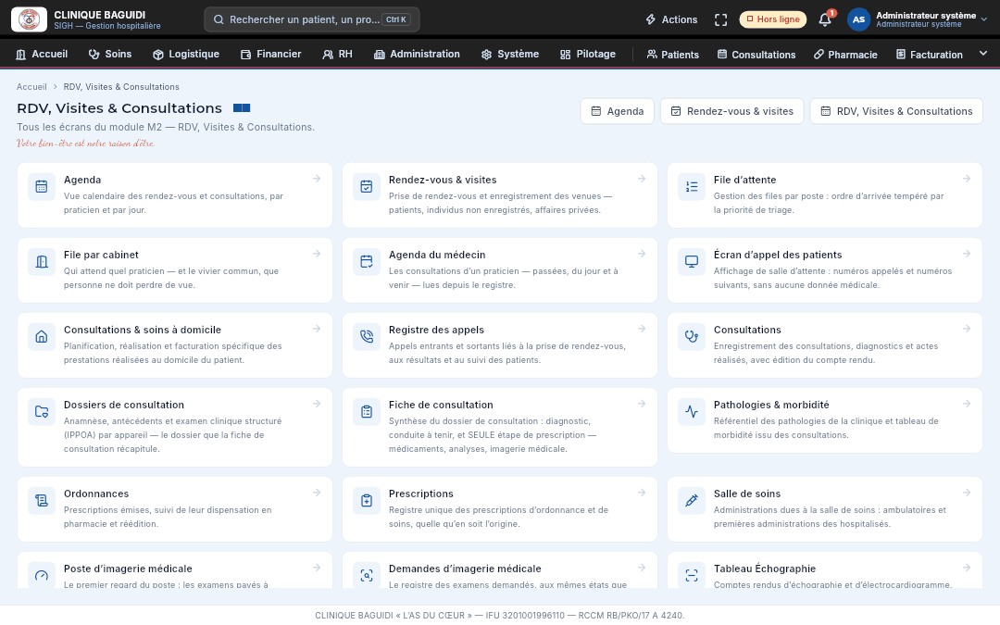
Identifiant technique : hub-m2 — module M2
Agenda
Chemin : Accueil ➔ RDV, Visites & Consultations ➔ Agenda
Rôle de l’écran : Vue calendaire des rendez-vous et consultations, par praticien et par jour.
Lecture et écriture : Administrateur système Directeur Médical Médecin Infirmier / Sage-femme Réception / Accueil Chirurgien
Lecture seule : Direction / Gérance Technicien d’échographie Responsable Radiologie Responsable Maternité (sage-femme)
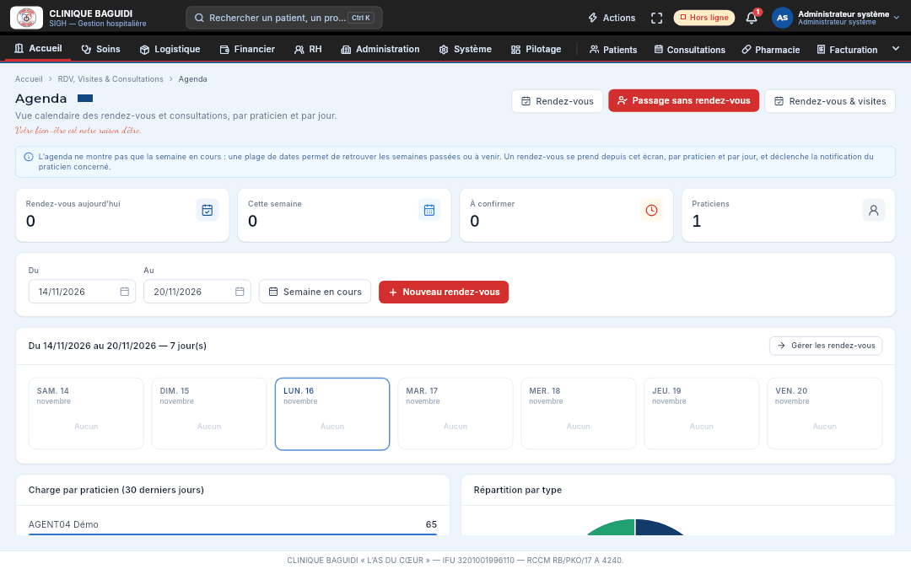
Identifiant technique : m2-agenda — module M2
Rendez-vous & visites
Chemin : Accueil ➔ RDV, Visites & Consultations ➔ Rendez-vous & visites
Rôle de l’écran : Prise de rendez-vous et enregistrement des venues — patients, individus non enregistrés, affaires privées.
Lecture et écriture : Administrateur système Directeur Médical Médecin Infirmier / Sage-femme Réception / Accueil Chirurgien
Lecture seule : Direction / Gérance Technicien d’échographie Responsable Radiologie Responsable Maternité (sage-femme)
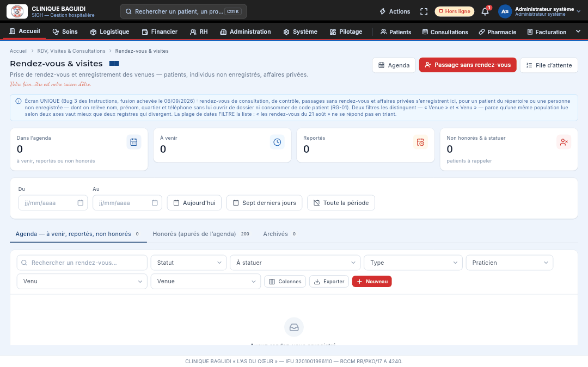
Identifiant technique : m2-rendezvous — module M2
File d’attente
Chemin : Accueil ➔ RDV, Visites & Consultations ➔ File d’attente
Rôle de l’écran : Gestion des files par poste : ordre d’arrivée tempéré par la priorité de triage.
Lecture et écriture : Administrateur système Directeur Médical Médecin Infirmier / Sage-femme Réception / Accueil Chirurgien
Lecture seule : Direction / Gérance Technicien d’échographie Responsable Radiologie Responsable Maternité (sage-femme)
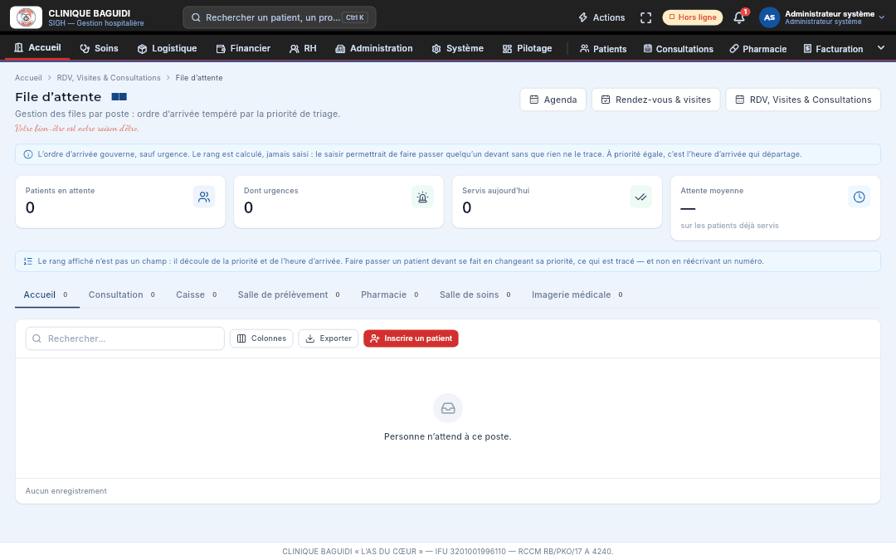
Identifiant technique : m2-file-attente — module M2
File par cabinet
Chemin : Accueil ➔ RDV, Visites & Consultations ➔ File par cabinet
Rôle de l’écran : Qui attend quel praticien — et le vivier commun, que personne ne doit perdre de vue.
Lecture et écriture : Administrateur système Directeur Médical Médecin Infirmier / Sage-femme Réception / Accueil Chirurgien
Lecture seule : Direction / Gérance Technicien d’échographie Responsable Radiologie Responsable Maternité (sage-femme)
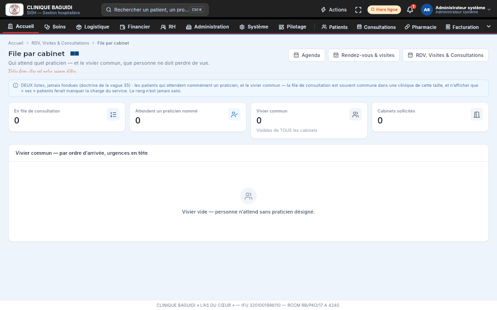
Identifiant technique : m2-file-cabinet — module M2
Agenda du médecin
Chemin : Accueil ➔ RDV, Visites & Consultations ➔ Agenda du médecin
Rôle de l’écran : Les consultations d’un praticien — passées, du jour et à venir — lues depuis le registre.
Lecture et écriture : Administrateur système Directeur Médical Médecin Réception / Accueil Chirurgien
Lecture seule : Direction / Gérance Technicien d’échographie Responsable Radiologie Responsable Maternité (sage-femme)
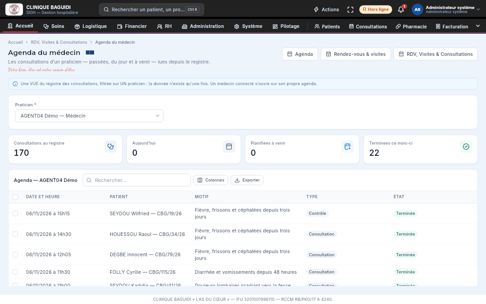
Identifiant technique : m2-agenda-medecin — module M2
Écran d’appel des patients
Chemin : Accueil ➔ RDV, Visites & Consultations ➔ Écran d’appel des patients
Rôle de l’écran : Affichage de salle d’attente : numéros appelés et numéros suivants, sans aucune donnée médicale.
Lecture et écriture : Administrateur système Directeur Médical Médecin Infirmier / Sage-femme Réception / Accueil Chirurgien
Lecture seule : Direction / Gérance Technicien d’échographie Responsable Radiologie Responsable Maternité (sage-femme)
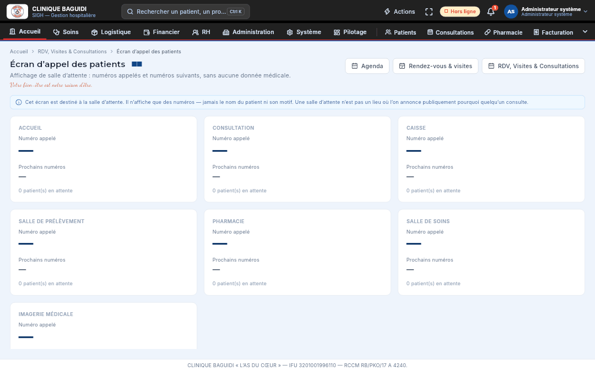
Identifiant technique : m2-affichage — module M2
Consultations & soins à domicile
Chemin : Accueil ➔ RDV, Visites & Consultations ➔ Consultations & soins à domicile
Rôle de l’écran : Planification, réalisation et facturation spécifique des prestations réalisées au domicile du patient.
Lecture et écriture : Administrateur système Directeur Médical Médecin Infirmier / Sage-femme Réception / Accueil Chirurgien
Lecture seule : Direction / Gérance Technicien d’échographie Responsable Radiologie Responsable Maternité (sage-femme)
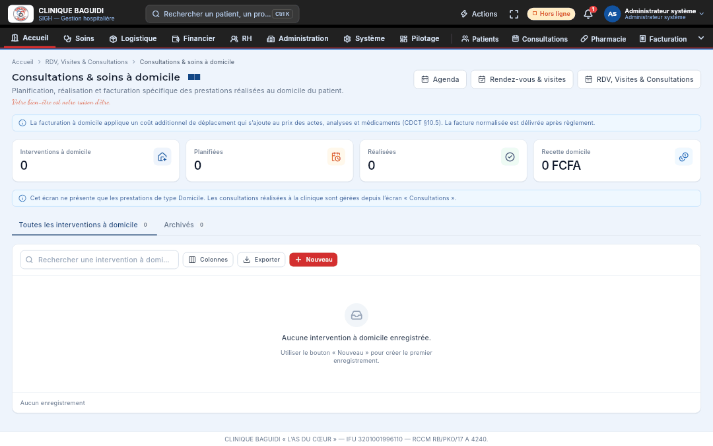
Identifiant technique : m2-domicile — module M2
Registre des appels
Chemin : Accueil ➔ RDV, Visites & Consultations ➔ Registre des appels
Rôle de l’écran : Appels entrants et sortants liés à la prise de rendez-vous, aux résultats et au suivi des patients.
Lecture et écriture : Administrateur système Directeur Médical Médecin Infirmier / Sage-femme Réception / Accueil Chirurgien
Lecture seule : Direction / Gérance Technicien d’échographie Responsable Radiologie Responsable Maternité (sage-femme)
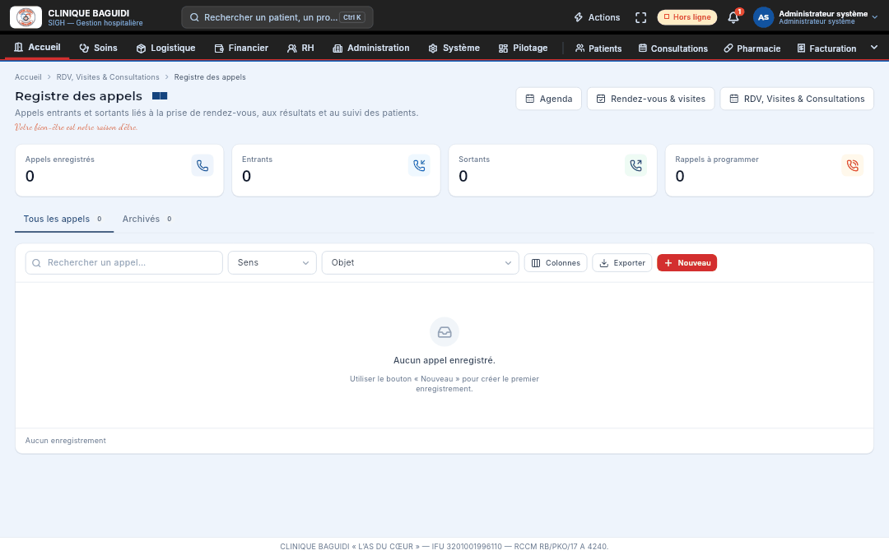
Identifiant technique : m2-registre-appels — module M2
Consultations
Chemin : Accueil ➔ RDV, Visites & Consultations ➔ Consultations
Rôle de l’écran : Enregistrement des consultations, diagnostics et actes réalisés, avec édition du compte rendu.
Lecture et écriture : Administrateur système Directeur Médical Médecin Infirmier / Sage-femme Réception / Accueil Chirurgien
Lecture seule : Direction / Gérance Technicien d’échographie Responsable Radiologie Responsable Maternité (sage-femme)
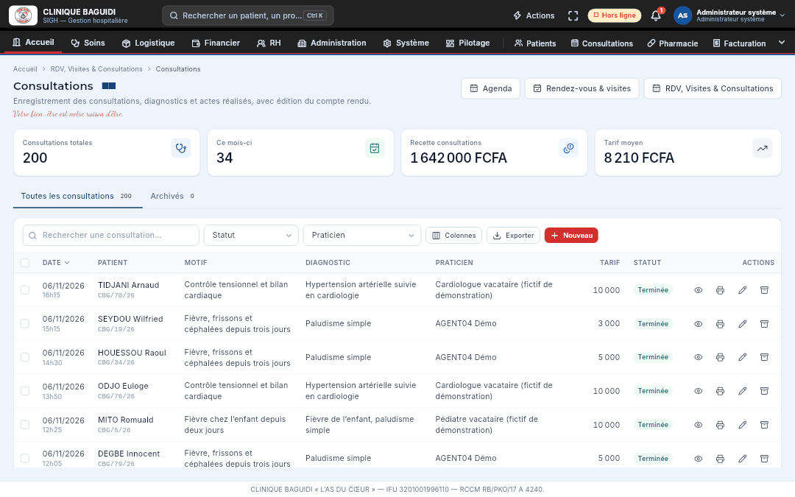
Identifiant technique : m2-consultations — module M2
Écrans hors ruban — 3 écran(s)
Ouvrir un dossier patient
Chemin : Accueil ➔ Patients & Dossier médical ➔ Ouvrir un dossier patient (hors ruban)
Rôle de l’écran : Identité, coordonnées, âge déclaré à défaut de date de naissance et couverture d’assurance — le premier acte du parcours.
Lecture et écriture : Administrateur système Directeur Médical Directrice de l’Administration et des Finances (DAF) Médecin Infirmier / Sage-femme Réception / Accueil Chirurgien
Lecture seule : Direction / Gérance Biologiste médical Caissier — Dispensaire (Pharmacie) Comptable Agent Administratif Ambulancier Technicien d’échographie Anesthésiste — Réanimateur Responsable Radiologie Responsable Maternité (sage-femme) Responsable Assurance
Cet écran ne figure pas au menu en ruban : on y arrive par un bouton d’un autre écran, par la recherche globale ou, pour les pages d’accès, à l’ouverture de session.
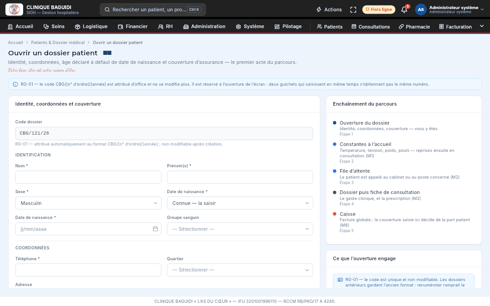
Identifiant technique : m1-patient-nouveau — module M1
Registre des visites de suivi clinique
Chemin : Accueil ➔ RDV, Visites & Consultations ➔ Registre des visites de suivi clinique (hors ruban)
Rôle de l’écran : Fusionné dans « Rendez-vous & visites » — un seul écran tient les venues, avec ou sans rendez-vous.
Lecture et écriture : Administrateur système Directeur Médical Médecin Infirmier / Sage-femme Réception / Accueil Chirurgien
Lecture seule : Direction / Gérance Technicien d’échographie Responsable Radiologie Responsable Maternité (sage-femme)
Page de renvoi : l’écran a été fusionné dans un autre. Il ne figure plus au menu ; une ancienne adresse ou un ancien lien y mène encore et la page indique où se trouve désormais la fonction.
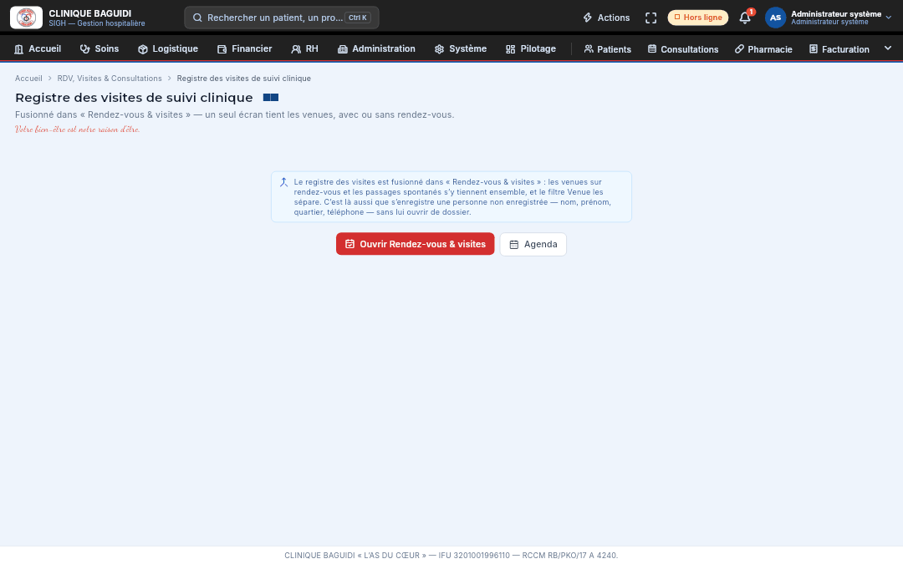
Identifiant technique : m2-visites — module M2
Certificats — patients externes
Chemin : Accueil ➔ Patients & Dossier médical ➔ Certificats — patients externes (hors ruban)
Rôle de l’écran : Page de renvoi : les pièces des patients externes figurent au registre unique.
Lecture et écriture : Administrateur système Directeur Médical Directrice de l’Administration et des Finances (DAF) Médecin Infirmier / Sage-femme Réception / Accueil Chirurgien
Lecture seule : Direction / Gérance Biologiste médical Caissier — Dispensaire (Pharmacie) Comptable Technicien d’échographie Anesthésiste — Réanimateur Responsable Radiologie
Page de renvoi : l’écran a été fusionné dans un autre. Il ne figure plus au menu ; une ancienne adresse ou un ancien lien y mène encore et la page indique où se trouve désormais la fonction.
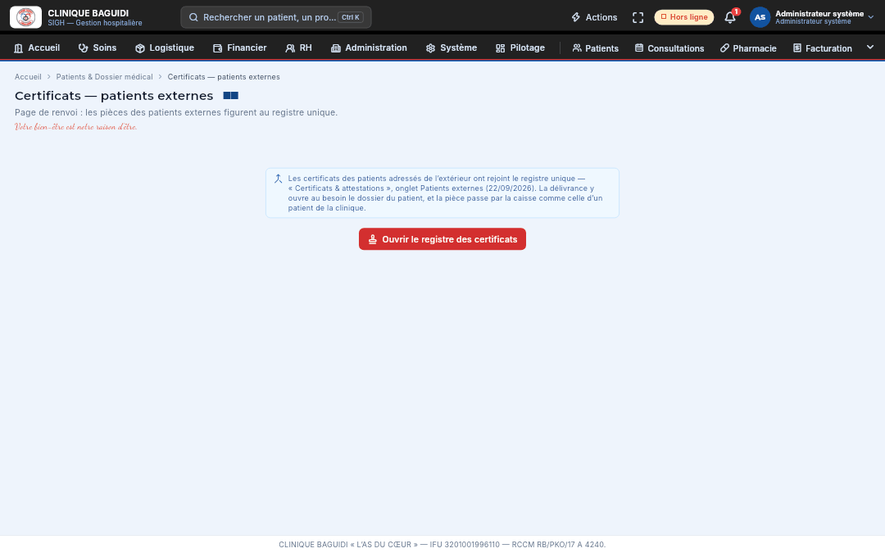
Identifiant technique : m1-certificats-externes — module M1
Domaine Soins (87 écrans)
Patients & Dossier médical — M1, 11 écran(s)
Patients & Dossier médical
Chemin : Soins ➔ Patients & Dossier médical ➔ page d’accueil du module
Rôle de l’écran : Tous les écrans du module M1 — Patients & Dossier médical.
Qui y a accès : Administrateur système Direction / Gérance Directeur Médical Directrice de l’Administration et des Finances (DAF) Médecin Infirmier / Sage-femme Biologiste médical Caissier — Dispensaire (Pharmacie) Comptable Réception / Accueil Agent Administratif Ambulancier Aide-soignante Technicien d’échographie Chirurgien Anesthésiste — Réanimateur Responsable Radiologie Responsable Maternité (sage-femme) Responsable Assurance. Chacun n’y voit que les écrans que son rôle peut ouvrir.
Cette page présente en cartes les écrans du module que votre rôle peut ouvrir. On l’atteint par l’intitulé de la rangée dans le menu, par le fil d’Ariane ou par les raccourcis de la barre.
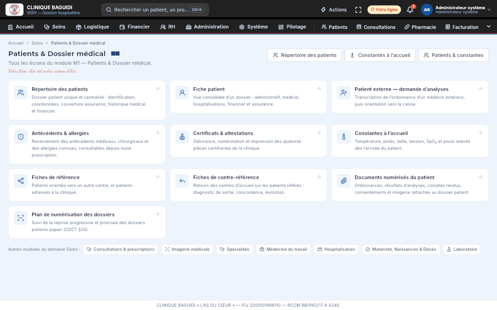
Identifiant technique : hub-m1 — module M1
Répertoire des patients
Chemin : Soins ➔ Patients & Dossier médical ➔ Répertoire des patients
Rôle de l’écran : Dossier patient unique et centralisé : identification, coordonnées, couverture assurance, historique médical et financier.
Lecture et écriture : Administrateur système Directeur Médical Directrice de l’Administration et des Finances (DAF) Médecin Infirmier / Sage-femme Réception / Accueil Chirurgien
Lecture seule : Direction / Gérance Biologiste médical Caissier — Dispensaire (Pharmacie) Comptable Agent Administratif Ambulancier Technicien d’échographie Anesthésiste — Réanimateur Responsable Radiologie Responsable Maternité (sage-femme) Responsable Assurance
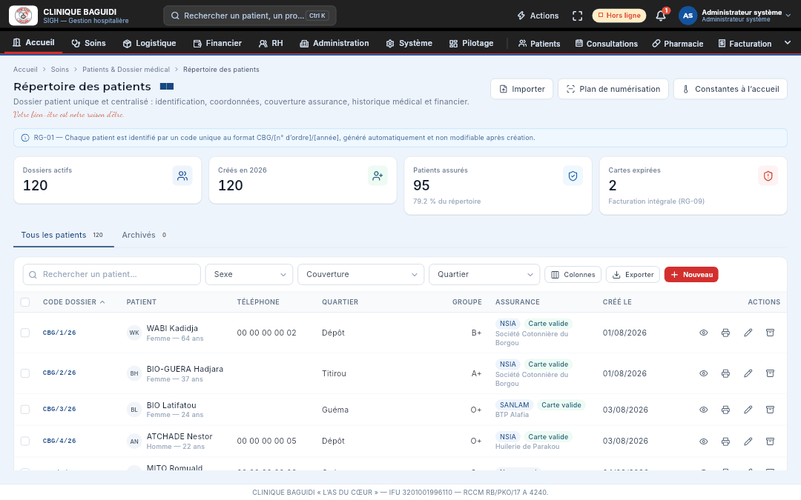
Identifiant technique : m1-patients — module M1
Fiche patient
Chemin : Soins ➔ Patients & Dossier médical ➔ Fiche patient
Rôle de l’écran : Vue consolidée d’un dossier : administratif, médical, hospitalisations, financier et assurance.
Lecture et écriture : Administrateur système Directeur Médical Directrice de l’Administration et des Finances (DAF) Médecin Infirmier / Sage-femme Réception / Accueil Chirurgien
Lecture seule : Direction / Gérance Biologiste médical Caissier — Dispensaire (Pharmacie) Comptable Agent Administratif Technicien d’échographie Anesthésiste — Réanimateur Responsable Radiologie Responsable Maternité (sage-femme) Responsable Assurance
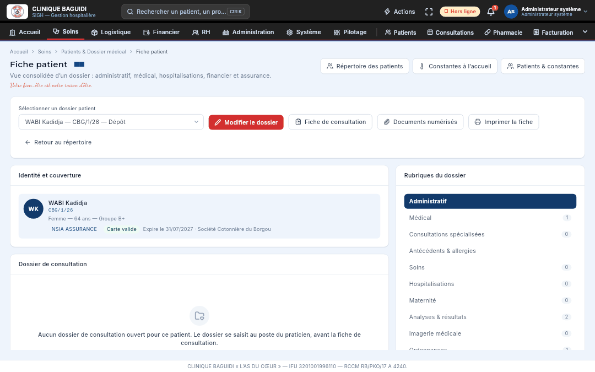
Identifiant technique : m1-patient-profil — module M1
Patient externe — demande d’analyses
Chemin : Soins ➔ Patients & Dossier médical ➔ Patient externe
Rôle de l’écran : Transcription de l’ordonnance d’un médecin extérieur, puis orientation vers la caisse.
Lecture et écriture : Administrateur système Directrice de l’Administration et des Finances (DAF) Médecin Infirmier / Sage-femme Biologiste médical Réception / Accueil Chirurgien
Lecture seule : Direction / Gérance Technicien d’échographie Anesthésiste — Réanimateur Responsable Radiologie Responsable Maternité (sage-femme)
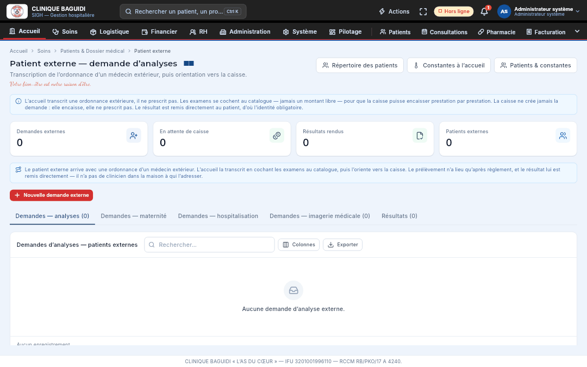
Identifiant technique : m1-externe — module M1
Antécédents & allergies
Chemin : Soins ➔ Patients & Dossier médical ➔ Antécédents & allergies
Rôle de l’écran : Recensement des antécédents médicaux, chirurgicaux et des allergies connues, consultables depuis toute prescription.
Lecture et écriture : Administrateur système Directeur Médical Directrice de l’Administration et des Finances (DAF) Médecin Infirmier / Sage-femme Chirurgien
Lecture seule : Direction / Gérance Technicien d’échographie Anesthésiste — Réanimateur Responsable Radiologie Responsable Maternité (sage-femme)
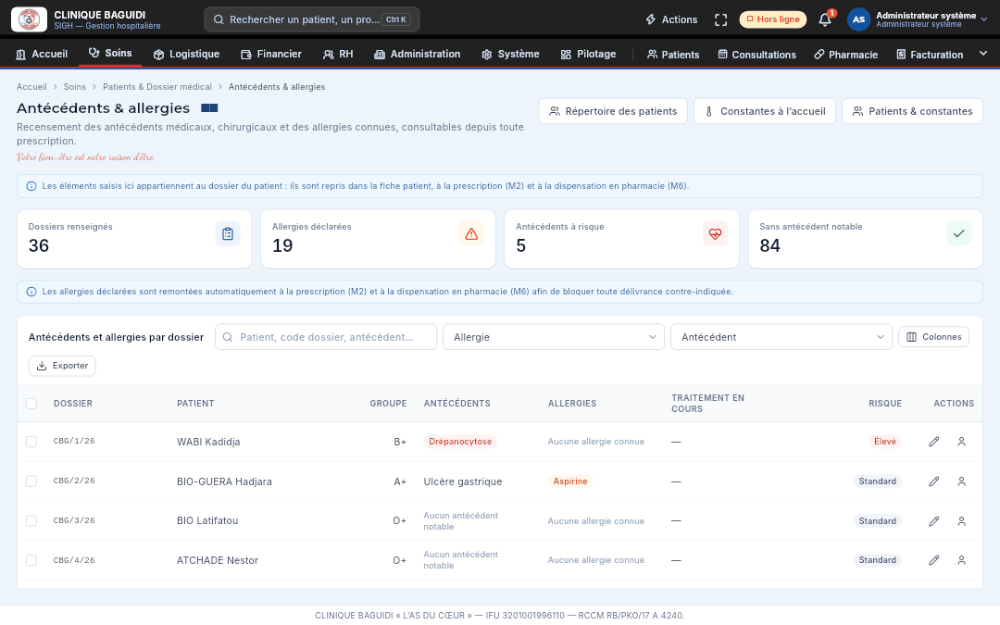
Identifiant technique : m1-antecedents — module M1
Certificats & attestations
Chemin : Soins ➔ Patients & Dossier médical ➔ Certificats & attestations
Rôle de l’écran : Délivrance, numérotation et impression des quatorze pièces certifiantes de la clinique.
Lecture et écriture : Administrateur système Directeur Médical Directrice de l’Administration et des Finances (DAF) Médecin Réception / Accueil Chirurgien
Lecture seule : Direction / Gérance Infirmier / Sage-femme Anesthésiste — Réanimateur
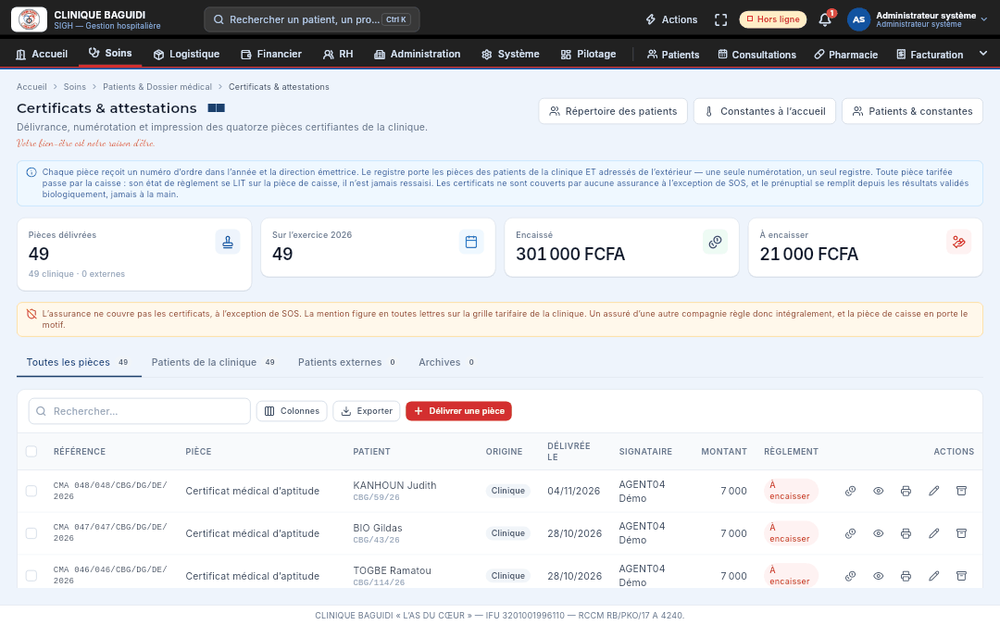
Identifiant technique : m1-pieces — module M1
Constantes à l’accueil
Chemin : Soins ➔ Patients & Dossier médical ➔ Constantes à l’accueil
Rôle de l’écran : Température, poids, taille, tension, SpO₂ et pouls relevés dès l’arrivée du patient.
Lecture et écriture : Administrateur système Directeur Médical Directrice de l’Administration et des Finances (DAF) Médecin Infirmier / Sage-femme Réception / Accueil Aide-soignante Chirurgien Anesthésiste — Réanimateur Responsable Maternité (sage-femme)
Lecture seule : Direction / Gérance
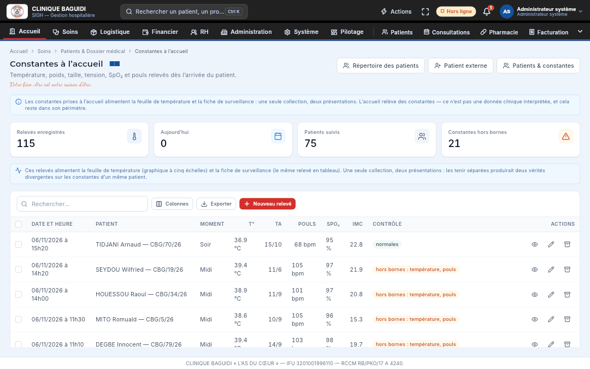
Identifiant technique : m1-constantes — module M1
Fiches de référence
Chemin : Soins ➔ Patients & Dossier médical ➔ Fiches de référence
Rôle de l’écran : Patients orientés vers un autre centre, et patients adressés à la clinique.
Lecture et écriture : Administrateur système Directeur Médical Directrice de l’Administration et des Finances (DAF) Médecin Infirmier / Sage-femme Réception / Accueil Chirurgien
Lecture seule : Direction / Gérance Anesthésiste — Réanimateur Responsable Maternité (sage-femme)
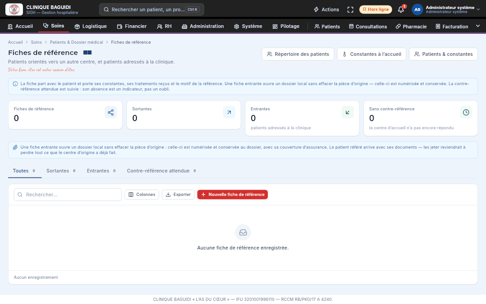
Identifiant technique : m1-reference — module M1
Fiches de contre-référence
Chemin : Soins ➔ Patients & Dossier médical ➔ Fiches de contre-référence
Rôle de l’écran : Retours des centres d’accueil sur les patients référés : diagnostic de sortie, concordance, évolution.
Lecture et écriture : Administrateur système Directeur Médical Directrice de l’Administration et des Finances (DAF) Médecin Infirmier / Sage-femme Réception / Accueil Chirurgien
Lecture seule : Direction / Gérance Anesthésiste — Réanimateur Responsable Maternité (sage-femme)
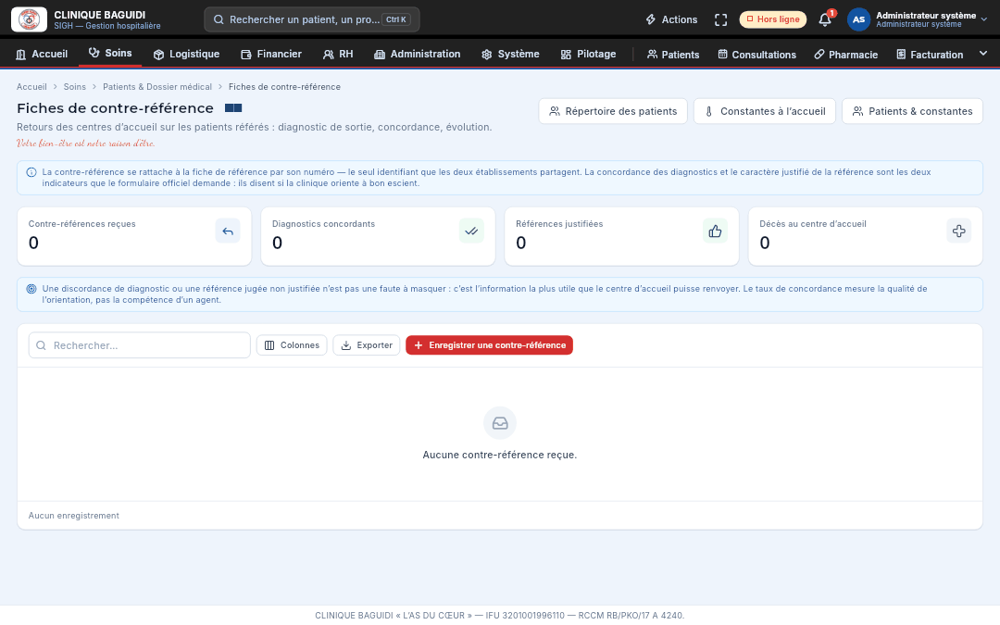
Identifiant technique : m1-contre-reference — module M1
Documents numérisés du patient
Chemin : Soins ➔ Patients & Dossier médical ➔ Documents numérisés
Rôle de l’écran : Ordonnances, résultats d’analyses, comptes rendus, consentements et imagerie rattachés au dossier patient.
Lecture et écriture : Administrateur système Directeur Médical Directrice de l’Administration et des Finances (DAF) Médecin Infirmier / Sage-femme Réception / Accueil Chirurgien
Lecture seule : Direction / Gérance Anesthésiste — Réanimateur
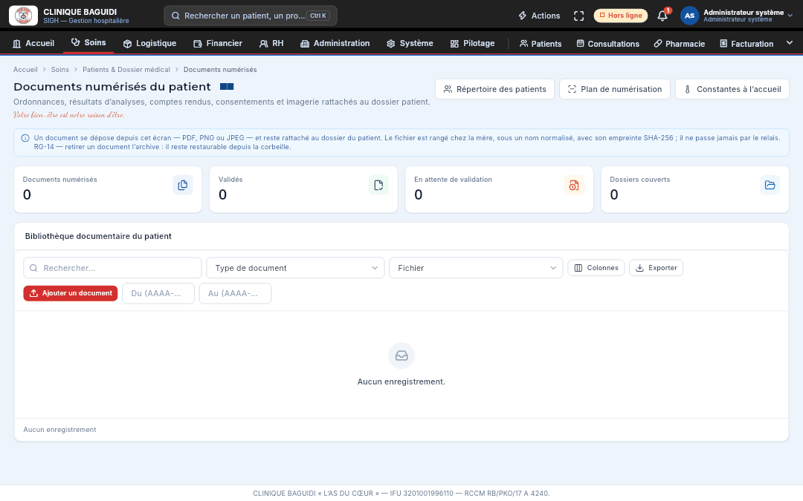
Identifiant technique : m1-documents — module M1
Plan de numérisation des dossiers
Chemin : Soins ➔ Patients & Dossier médical ➔ Plan de numérisation
Rôle de l’écran : Suivi de la reprise progressive et priorisée des dossiers patients papier (CDCT §24).
Lecture et écriture : Administrateur système Directeur Médical Directrice de l’Administration et des Finances (DAF) Médecin Réception / Accueil Chirurgien
Lecture seule : Direction / Gérance Anesthésiste — Réanimateur
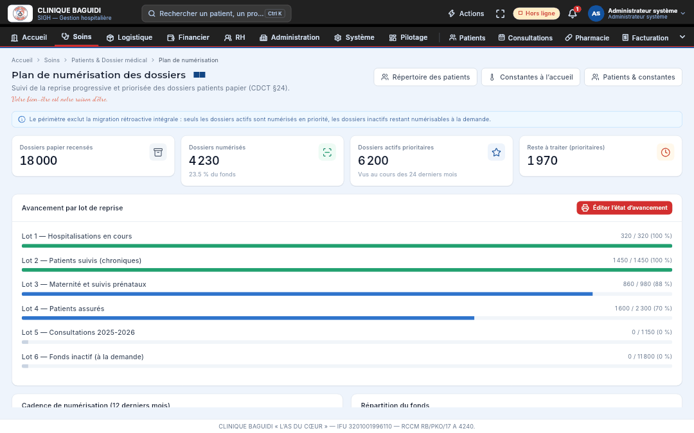
Identifiant technique : m1-numerisation — module M1
Consultations & prescriptions — M2, 6 écran(s)
Dossiers de consultation
Chemin : Soins ➔ Consultations & prescriptions ➔ Dossiers de consultation
Rôle de l’écran : Anamnèse, antécédents et examen clinique structuré (IPPOA) par appareil — le dossier que la fiche de consultation récapitule.
Lecture et écriture : Administrateur système Directeur Médical Médecin Infirmier / Sage-femme Chirurgien
Lecture seule : Direction / Gérance Responsable Maternité (sage-femme)
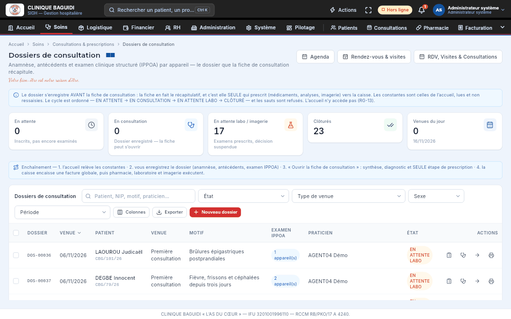
Identifiant technique : m2-dossiers-consultation — module M2
Fiche de consultation
Chemin : Soins ➔ Consultations & prescriptions ➔ Fiche de consultation
Rôle de l’écran : Synthèse du dossier de consultation : diagnostic, conduite à tenir, et SEULE étape de prescription — médicaments, analyses, imagerie médicale.
Lecture et écriture : Administrateur système Directeur Médical Médecin Infirmier / Sage-femme Chirurgien
Lecture seule : Direction / Gérance Technicien d’échographie Responsable Radiologie Responsable Maternité (sage-femme)
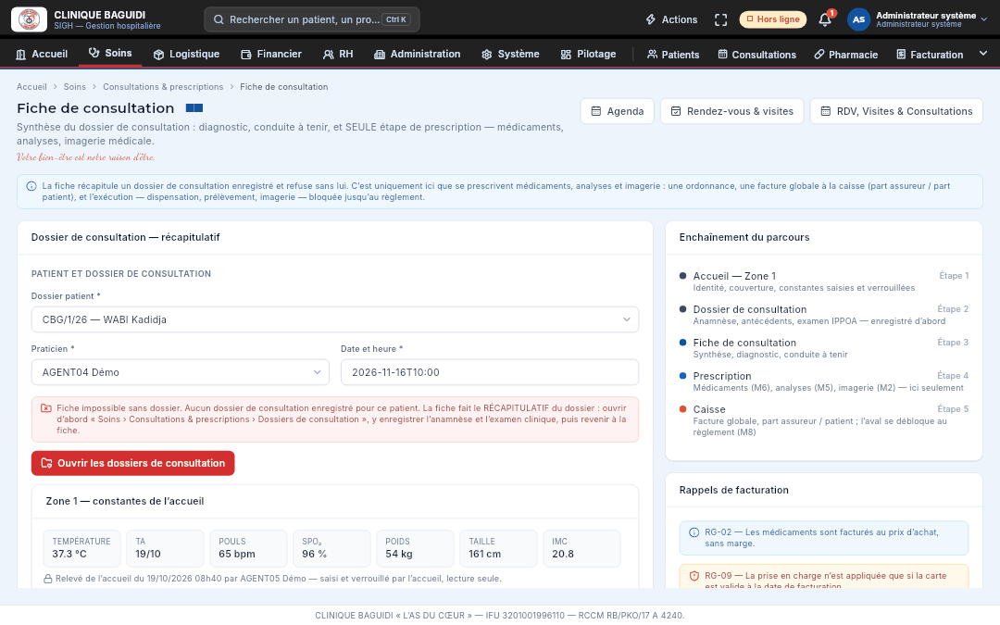
Identifiant technique : m2-consultation-fiche — module M2
Pathologies & morbidité
Chemin : Soins ➔ Consultations & prescriptions ➔ Pathologies & morbidité
Rôle de l’écran : Référentiel des pathologies de la clinique et tableau de morbidité issu des consultations.
Lecture et écriture : Administrateur système Directeur Médical Médecin Infirmier / Sage-femme Chirurgien
Lecture seule : Direction / Gérance Responsable Maternité (sage-femme)
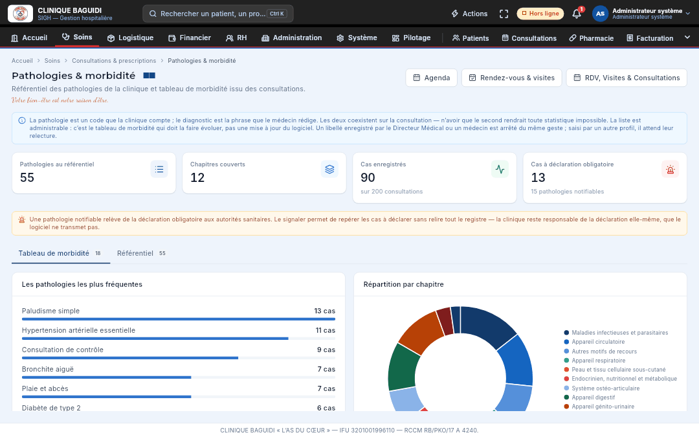
Identifiant technique : m2-pathologies — module M2
Ordonnances
Chemin : Soins ➔ Consultations & prescriptions ➔ Ordonnances
Rôle de l’écran : Prescriptions émises, suivi de leur dispensation en pharmacie et réédition.
Lecture et écriture : Administrateur système Directeur Médical Médecin Infirmier / Sage-femme Chirurgien
Lecture seule : Direction / Gérance Responsable Maternité (sage-femme)
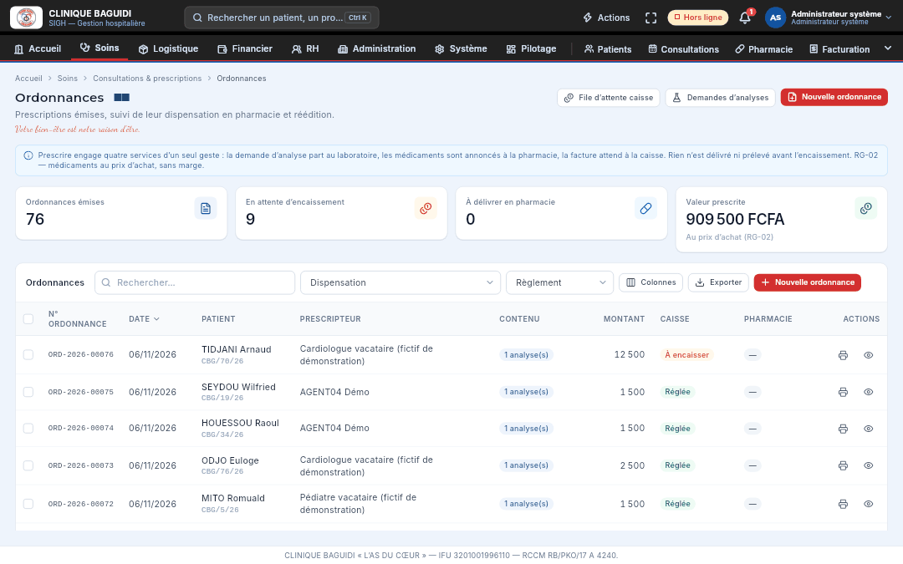
Identifiant technique : m2-ordonnances — module M2
Prescriptions
Chemin : Soins ➔ Consultations & prescriptions ➔ Prescriptions
Rôle de l’écran : Registre unique des prescriptions d’ordonnance et de soins, quelle qu’en soit l’origine.
Lecture et écriture : Administrateur système Directeur Médical Médecin Infirmier / Sage-femme Chirurgien
Lecture seule : Direction / Gérance Technicien d’échographie Responsable Radiologie Responsable Maternité (sage-femme)
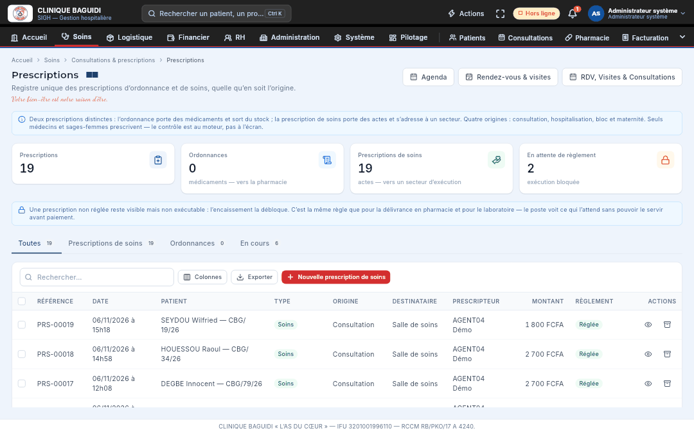
Identifiant technique : m2-prescriptions — module M2
Salle de soins
Chemin : Soins ➔ Consultations & prescriptions ➔ Salle de soins
Rôle de l’écran : Administrations dues à la salle de soins : ambulatoires et premières administrations des hospitalisés.
Lecture et écriture : Administrateur système Directeur Médical Médecin Infirmier / Sage-femme Chirurgien
Lecture seule : Direction / Gérance Responsable Maternité (sage-femme)
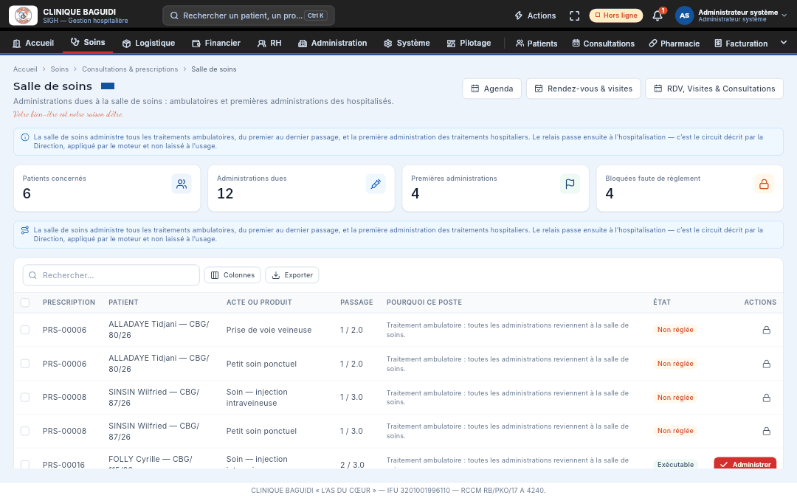
Identifiant technique : m2-salle-soins — module M2
Imagerie médicale — M2, 8 écran(s)
Poste d’imagerie médicale
Chemin : Soins ➔ Imagerie médicale ➔ Poste d’imagerie médicale
Rôle de l’écran : Le premier regard du poste : les examens payés à exécuter, les comptes rendus en rédaction, la file d’attente.
Lecture et écriture : Administrateur système Directeur Médical Médecin Infirmier / Sage-femme Réception / Accueil Technicien d’échographie Chirurgien Responsable Radiologie
Lecture seule : Direction / Gérance
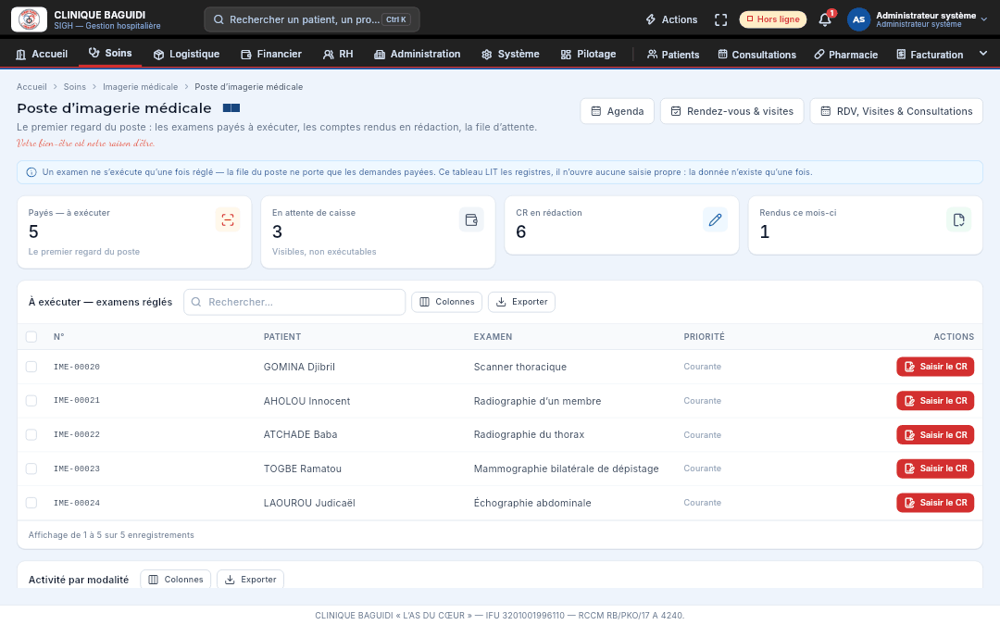
Identifiant technique : m2-dashboard-imagerie — module M2
Demandes d’imagerie médicale
Chemin : Soins ➔ Imagerie médicale ➔ Demandes d’imagerie médicale
Rôle de l’écran : Le registre des examens demandés, aux mêmes états que le laboratoire : demandé, payé, exécuté, validé.
Lecture et écriture : Administrateur système Directeur Médical Médecin Infirmier / Sage-femme Réception / Accueil Technicien d’échographie Chirurgien Responsable Radiologie
Lecture seule : Direction / Gérance
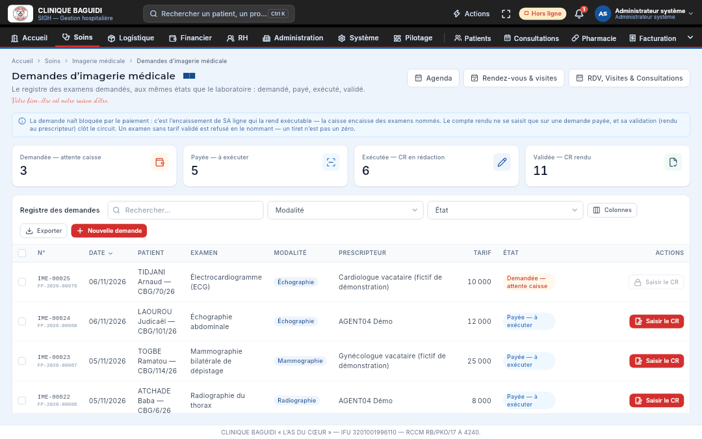
Identifiant technique : m2-imagerie-demandes — module M2
Tableau Échographie
Chemin : Soins ➔ Imagerie médicale ➔ Tableau Échographie
Rôle de l’écran : Comptes rendus d’échographie et d’électrocardiogramme, saisis par variables et rendus au prescripteur.
Lecture et écriture : Administrateur système Directeur Médical Médecin Infirmier / Sage-femme Technicien d’échographie Responsable Radiologie
Lecture seule : Direction / Gérance Chirurgien
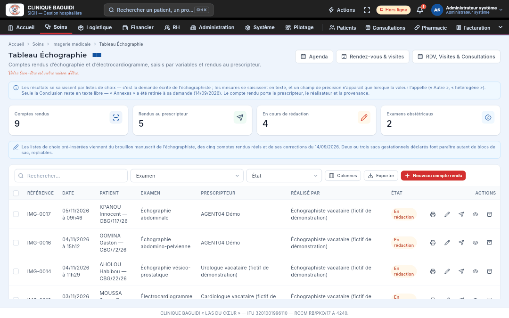
Identifiant technique : m2-imagerie — module M2
Tableau Radiographie
Chemin : Soins ➔ Imagerie médicale ➔ Tableau Radiographie
Rôle de l’écran : Comptes rendus de radiographie standard — thorax, bassin, rachis, membres, crâne, ASP.
Lecture et écriture : Administrateur système Directeur Médical Médecin Infirmier / Sage-femme Technicien d’échographie Responsable Radiologie
Lecture seule : Direction / Gérance Chirurgien
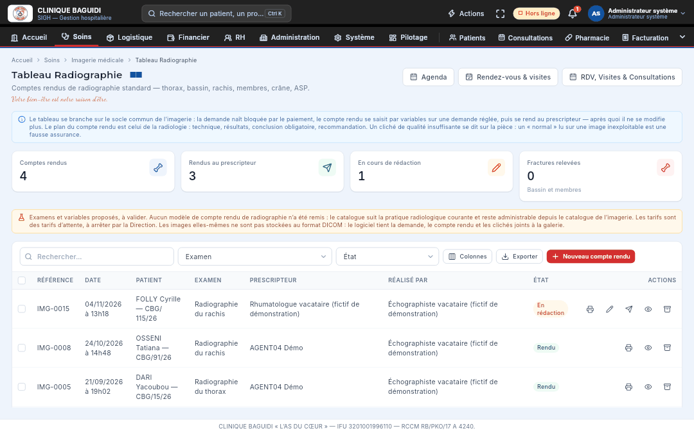
Identifiant technique : m2-imagerie-radiographie — module M2
Tableau Mammographie
Chemin : Soins ➔ Imagerie médicale ➔ Tableau Mammographie
Rôle de l’écran : Comptes rendus de mammographie — densité, masses, microcalcifications, classification ACR par sein.
Lecture et écriture : Administrateur système Directeur Médical Médecin Infirmier / Sage-femme Technicien d’échographie Responsable Radiologie
Lecture seule : Direction / Gérance Chirurgien
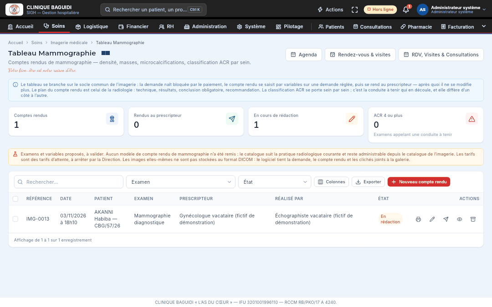
Identifiant technique : m2-imagerie-mammographie — module M2
Tableau Scanner
Chemin : Soins ➔ Imagerie médicale ➔ Tableau Scanner
Rôle de l’écran : Comptes rendus de tomodensitométrie — technique, injection de produit de contraste, résultats.
Lecture et écriture : Administrateur système Directeur Médical Médecin Infirmier / Sage-femme Technicien d’échographie Responsable Radiologie
Lecture seule : Direction / Gérance Chirurgien
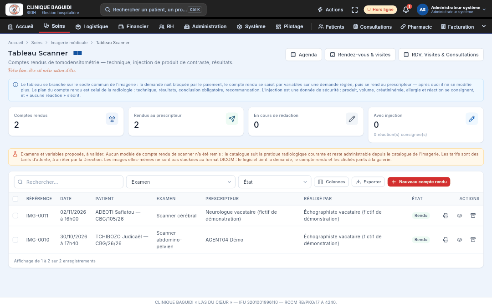
Identifiant technique : m2-imagerie-scanner — module M2
Tableau IRM — imagerie par résonance magnétique
Chemin : Soins ➔ Imagerie médicale ➔ Tableau IRM
Rôle de l’écran : Comptes rendus d’IRM — contre-indications, séquences, gadolinium, résultats.
Lecture et écriture : Administrateur système Directeur Médical Médecin Infirmier / Sage-femme Technicien d’échographie Responsable Radiologie
Lecture seule : Direction / Gérance Chirurgien
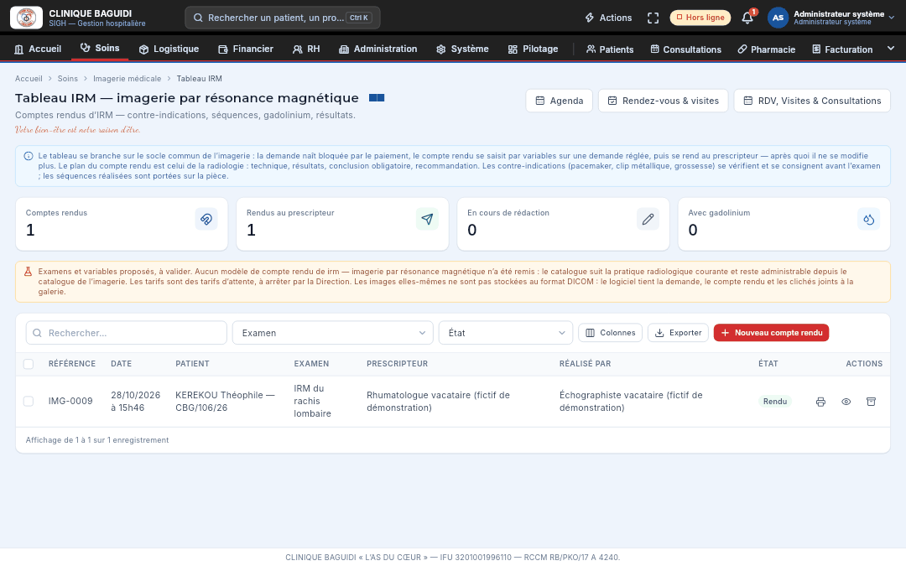
Identifiant technique : m2-imagerie-irm — module M2
Galerie des clichés
Chemin : Soins ➔ Imagerie médicale ➔ Galerie des clichés
Rôle de l’écran : Les clichés d’échographie conservés au poste, rattachés au patient et au compte rendu.
Lecture et écriture : Administrateur système Directeur Médical Médecin Infirmier / Sage-femme Réception / Accueil Technicien d’échographie Chirurgien Responsable Radiologie
Lecture seule : Direction / Gérance
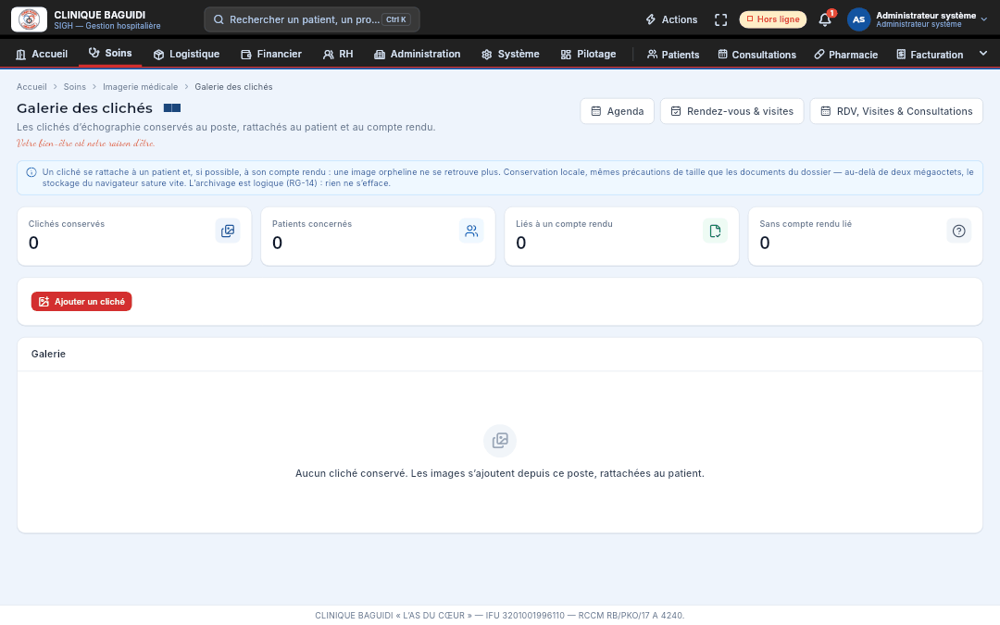
Identifiant technique : m2-echographie-galerie — module M2
Spécialités — M2, 1 écran(s)
Spécialités
Chemin : Soins ➔ Spécialités ➔ Spécialités
Rôle de l’écran : Les spécialités de la clinique, une fiche chacune : modèle de consultation, praticiens, actes. Une fiche de plus, c’est une spécialité de plus au ruban.
Lecture et écriture : Administrateur système Directeur Médical Médecin Chirurgien
Lecture seule : Direction / Gérance Infirmier / Sage-femme
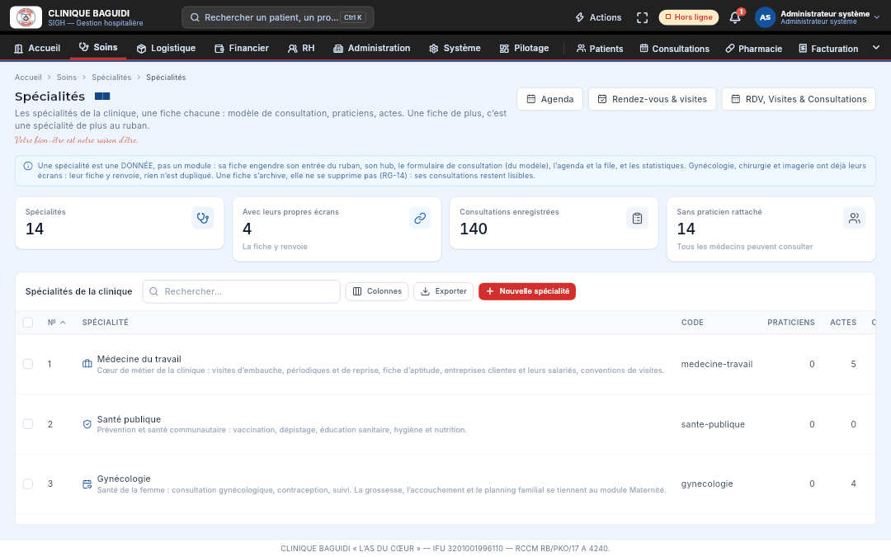
Identifiant technique : m2-specialites — module M2
Médecine du travail — M2, 3 écran(s)
Visites de médecine du travail
Chemin : Soins ➔ Médecine du travail ➔ Visites de médecine du travail
Rôle de l’écran : Visites d’embauche, périodiques et de reprise ; avis d’aptitude et fiche d’aptitude, pièce certifiante tarifée par la caisse.
Lecture et écriture : Administrateur système Directeur Médical Médecin Infirmier / Sage-femme Chirurgien
Lecture seule : Direction / Gérance
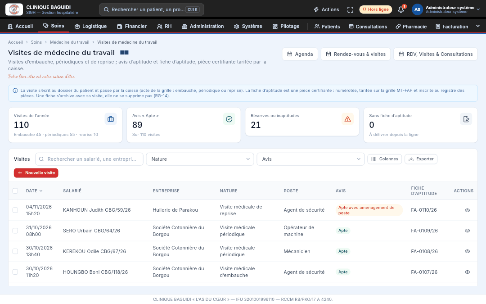
Identifiant technique : m2-mdt-visites — module M2
Entreprises clientes et salariés
Chemin : Soins ➔ Médecine du travail ➔ Entreprises clientes et salariés
Rôle de l’écran : Les entreprises qui confient leurs salariés à la clinique, leur convention de visites, et l’échéance de chaque salarié.
Lecture et écriture : Administrateur système Directeur Médical Médecin Infirmier / Sage-femme Réception / Accueil Chirurgien
Lecture seule : Direction / Gérance Technicien d’échographie Responsable Radiologie Responsable Maternité (sage-femme)
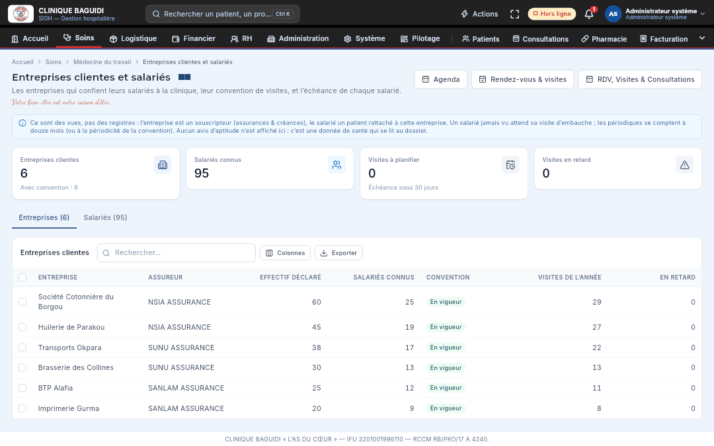
Identifiant technique : m2-mdt-entreprises — module M2
Conventions de visites
Chemin : Soins ➔ Médecine du travail ➔ Conventions de visites
Rôle de l’écran : Les conventions de visites médicales passées avec les entreprises clientes : période, périodicité, visites prévues.
Lecture et écriture : Administrateur système Directeur Médical Médecin Infirmier / Sage-femme Réception / Accueil Chirurgien
Lecture seule : Direction / Gérance Technicien d’échographie Responsable Radiologie Responsable Maternité (sage-femme)
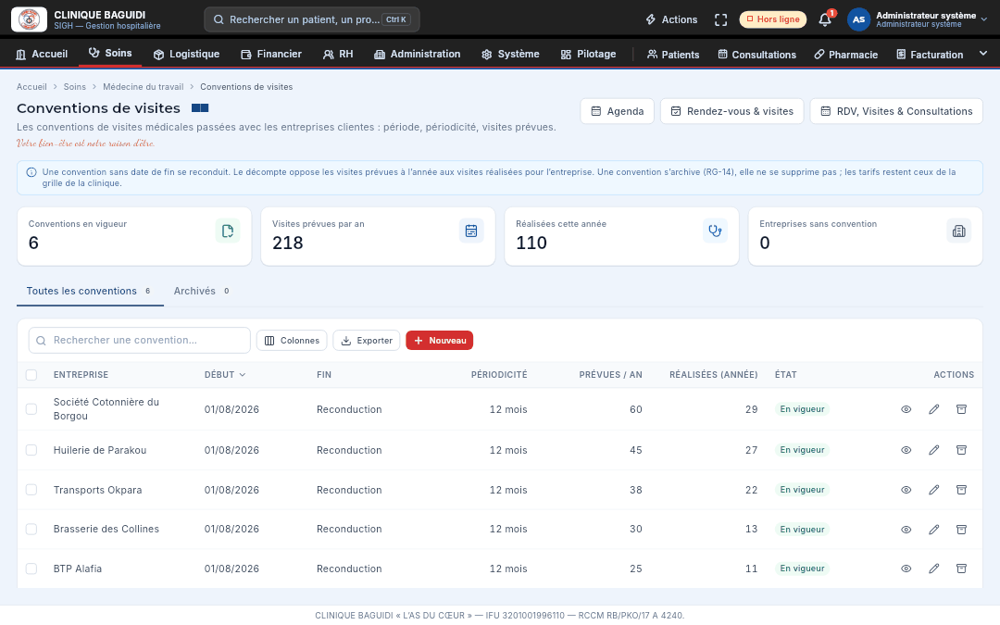
Identifiant technique : m2-mdt-conventions — module M2
Hospitalisation — M3, 21 écran(s)
Hospitalisation
Chemin : Soins ➔ Hospitalisation ➔ page d’accueil du module
Rôle de l’écran : Tous les écrans du module M3 — Hospitalisation.
Qui y a accès : Administrateur système Direction / Gérance Directeur Médical Médecin Infirmier / Sage-femme Réception / Accueil Agent Administratif Aide-soignante Surveillant Chirurgien Anesthésiste — Réanimateur. Chacun n’y voit que les écrans que son rôle peut ouvrir.
Cette page présente en cartes les écrans du module que votre rôle peut ouvrir. On l’atteint par l’intitulé de la rangée dans le menu, par le fil d’Ariane ou par les raccourcis de la barre.
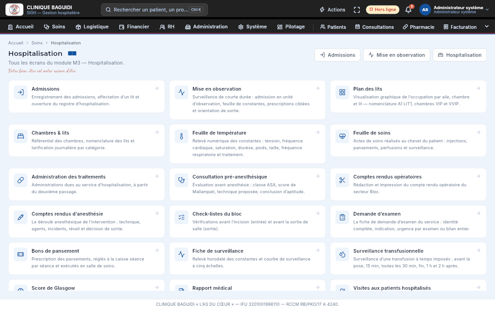
Identifiant technique : hub-m3 — module M3
Admissions
Chemin : Soins ➔ Hospitalisation ➔ Admissions
Rôle de l’écran : Enregistrement des admissions, affectation d’un lit et ouverture du registre d’hospitalisation.
Lecture et écriture : Administrateur système Directeur Médical Médecin Infirmier / Sage-femme Chirurgien Anesthésiste — Réanimateur
Lecture seule : Direction / Gérance Réception / Accueil
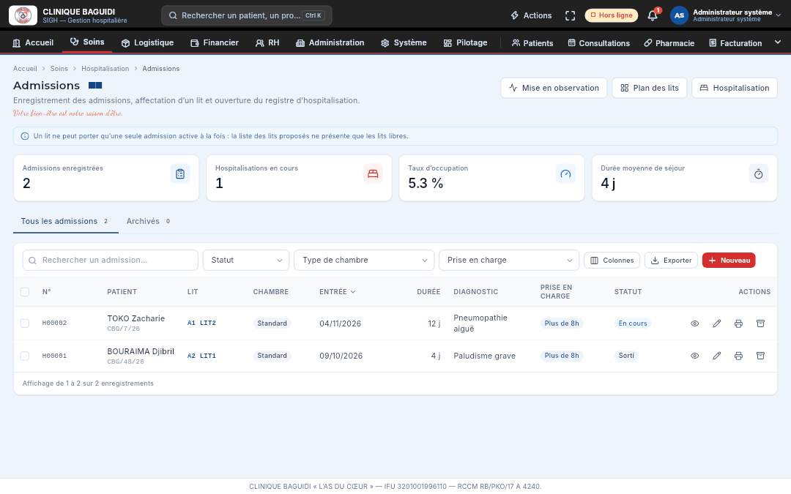
Identifiant technique : m3-admissions — module M3
Mise en observation
Chemin : Soins ➔ Hospitalisation ➔ Mise en observation
Rôle de l’écran : Surveillance de courte durée : admission en unité d’observation, feuille de constantes, prescriptions ciblées et orientation de sortie.
Lecture et écriture : Administrateur système Directeur Médical Médecin Infirmier / Sage-femme Chirurgien Anesthésiste — Réanimateur
Lecture seule : Direction / Gérance Réception / Accueil
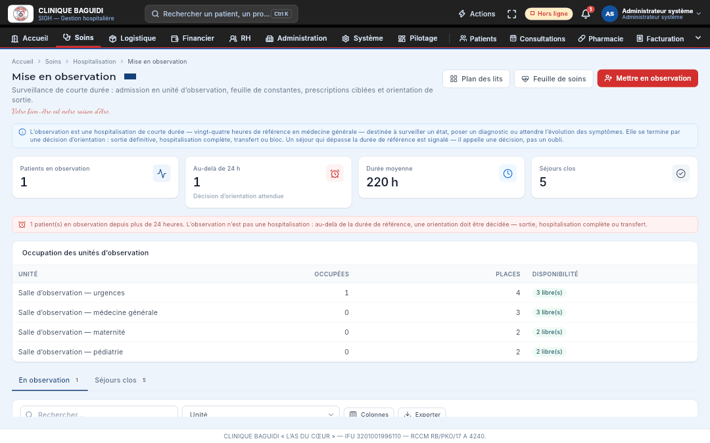
Identifiant technique : m3-observation — module M3
Plan des lits
Chemin : Soins ➔ Hospitalisation ➔ Plan des lits
Rôle de l’écran : Visualisation graphique de l’occupation par aile, chambre et lit — nomenclature A1 LIT1, chambres VIP et VVIP.
Lecture et écriture : Administrateur système Directeur Médical Médecin Infirmier / Sage-femme Chirurgien Anesthésiste — Réanimateur
Lecture seule : Direction / Gérance Réception / Accueil Agent Administratif Aide-soignante Surveillant
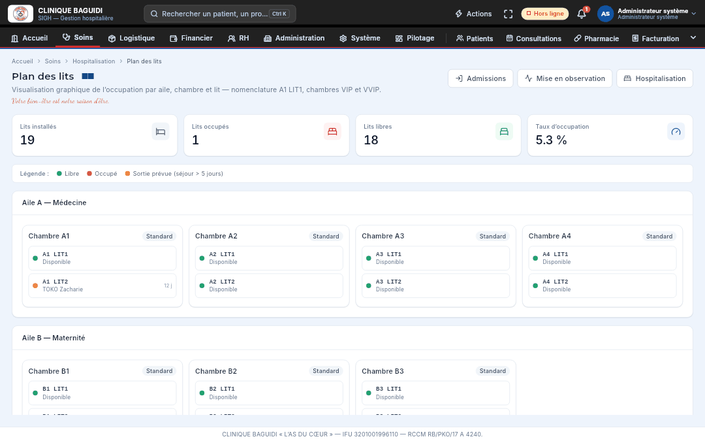
Identifiant technique : m3-plan-lits — module M3
Chambres & lits
Chemin : Soins ➔ Hospitalisation ➔ Chambres & lits
Rôle de l’écran : Référentiel des chambres, nomenclature des lits et tarification journalière par catégorie.
Lecture et écriture : Administrateur système Directeur Médical Médecin Infirmier / Sage-femme Chirurgien Anesthésiste — Réanimateur
Lecture seule : Direction / Gérance Réception / Accueil Aide-soignante
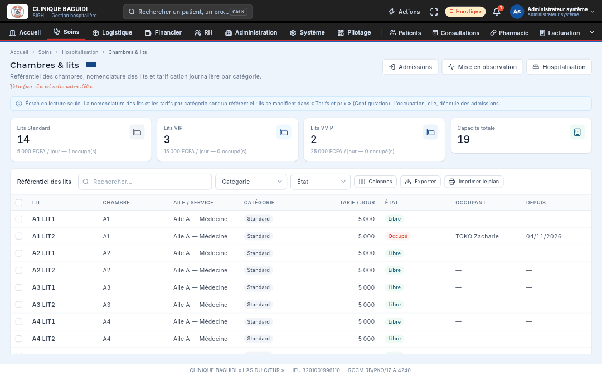
Identifiant technique : m3-chambres — module M3
Feuille de température
Chemin : Soins ➔ Hospitalisation ➔ Feuille de température
Rôle de l’écran : Relevé numérique des constantes : tension, fréquence cardiaque, saturation, diurèse, poids, taille, fréquence respiratoire et traitement.
Lecture et écriture : Administrateur système Directeur Médical Médecin Infirmier / Sage-femme Aide-soignante Chirurgien Anesthésiste — Réanimateur
Lecture seule : Direction / Gérance Réception / Accueil
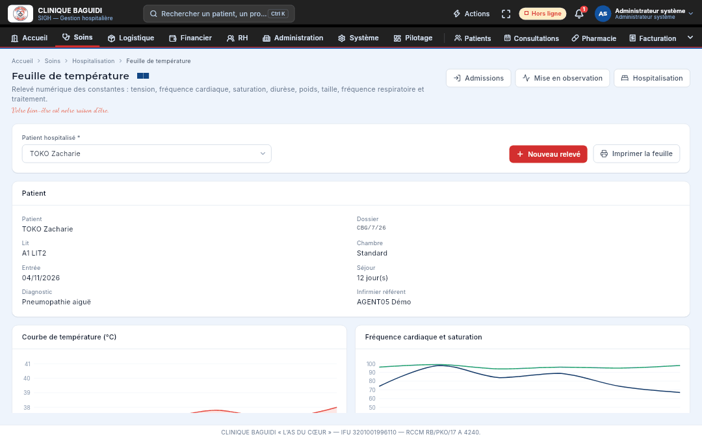
Identifiant technique : m3-feuille-temperature — module M3
Feuille de soins
Chemin : Soins ➔ Hospitalisation ➔ Feuille de soins
Rôle de l’écran : Actes de soins réalisés au chevet du patient : injections, pansements, perfusions et surveillance.
Lecture et écriture : Administrateur système Directeur Médical Médecin Infirmier / Sage-femme Chirurgien Anesthésiste — Réanimateur
Lecture seule : Direction / Gérance Réception / Accueil
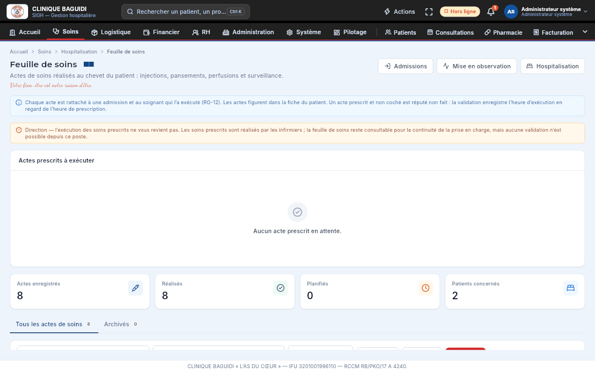
Identifiant technique : m3-soins — module M3
Administration des traitements
Chemin : Soins ➔ Hospitalisation ➔ Administration des traitements
Rôle de l’écran : Administrations dues au service d’hospitalisation, à partir du deuxième passage.
Lecture et écriture : Administrateur système Directeur Médical Médecin Infirmier / Sage-femme Chirurgien Anesthésiste — Réanimateur
Lecture seule : Direction / Gérance Réception / Accueil
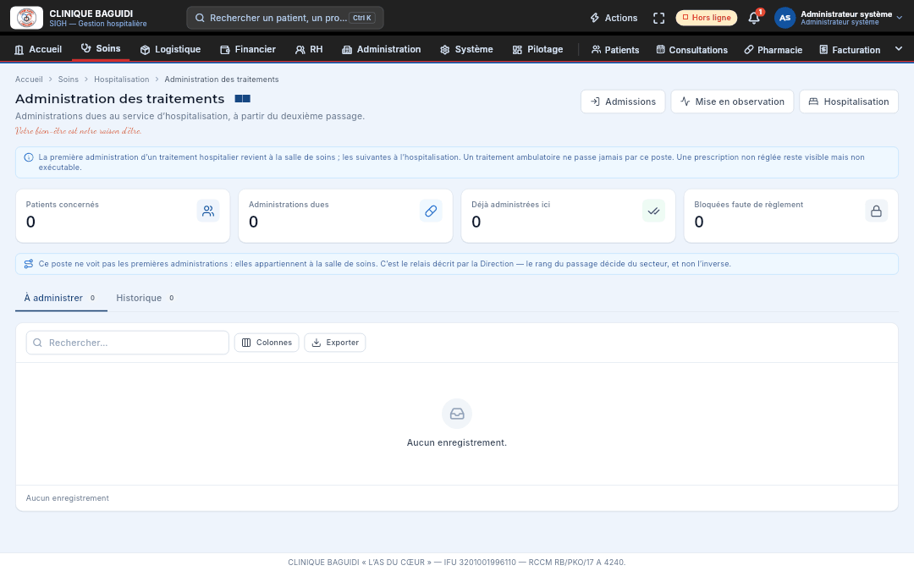
Identifiant technique : m3-administrations — module M3
Consultation pré-anesthésique
Chemin : Soins ➔ Hospitalisation ➔ Consultation pré-anesthésique
Rôle de l’écran : Évaluation avant anesthésie : classe ASA, score de Mallampati, technique proposée, conclusion d’aptitude.
Lecture et écriture : Administrateur système Directeur Médical Médecin Infirmier / Sage-femme Chirurgien Anesthésiste — Réanimateur
Lecture seule : Direction / Gérance Réception / Accueil
Identifiant technique : m3-cpa — module M3
Comptes rendus opératoires
Chemin : Soins ➔ Hospitalisation ➔ Comptes rendus opératoires
Rôle de l’écran : Rédaction et impression du compte rendu opératoire du secteur Bloc.
Lecture et écriture : Administrateur système Directeur Médical Médecin Infirmier / Sage-femme Chirurgien Anesthésiste — Réanimateur
Lecture seule : Direction / Gérance Réception / Accueil
Identifiant technique : m3-bloc-cro — module M3
Comptes rendus d’anesthésie
Chemin : Soins ➔ Hospitalisation ➔ Comptes rendus d’anesthésie
Rôle de l’écran : Le déroulé anesthésique de l’intervention : technique, agents, incidents, réveil et décision de sortie.
Lecture et écriture : Administrateur système Directeur Médical Médecin Infirmier / Sage-femme Chirurgien Anesthésiste — Réanimateur
Lecture seule : Direction / Gérance Réception / Accueil
Identifiant technique : m3-cr-anesthesie — module M3
Check-listes du bloc
Chemin : Soins ➔ Hospitalisation ➔ Check-listes du bloc
Rôle de l’écran : Vérifications avant l’incision (entrée) et avant la sortie de salle (sortie).
Lecture et écriture : Administrateur système Directeur Médical Médecin Infirmier / Sage-femme Chirurgien Anesthésiste — Réanimateur
Lecture seule : Direction / Gérance Réception / Accueil
Identifiant technique : m3-bloc-checklist — module M3
Demande d’examen
Chemin : Soins ➔ Hospitalisation ➔ Demande d’examen
Rôle de l’écran : La fiche de demande d’examen du service : identité complète, indication, urgence par examen ou bilan entier.
Lecture et écriture : Administrateur système Directeur Médical Médecin Infirmier / Sage-femme Chirurgien Anesthésiste — Réanimateur
Lecture seule : Direction / Gérance Réception / Accueil
Identifiant technique : m3-demande-examen — module M3
Bons de pansement
Chemin : Soins ➔ Hospitalisation ➔ Bons de pansement
Rôle de l’écran : Prescription des pansements, réglés à la caisse séance par séance et exécutés en salle de soins.
Lecture et écriture : Administrateur système Directeur Médical Médecin Infirmier / Sage-femme Chirurgien Anesthésiste — Réanimateur
Lecture seule : Direction / Gérance Réception / Accueil
Identifiant technique : m3-bons-pansements — module M3
Fiche de surveillance
Chemin : Soins ➔ Hospitalisation ➔ Fiche de surveillance
Rôle de l’écran : Relevé horodaté des constantes et courbe de surveillance à cinq échelles.
Lecture et écriture : Administrateur système Directeur Médical Médecin Infirmier / Sage-femme Chirurgien Anesthésiste — Réanimateur
Lecture seule : Direction / Gérance Réception / Accueil
Identifiant technique : m3-surveillance — module M3
Surveillance transfusionnelle
Chemin : Soins ➔ Hospitalisation ➔ Surveillance transfusionnelle
Rôle de l’écran : Surveillance d’une transfusion à temps imposés : avant la pose, 15 min, toutes les 30 min, fin, 1 h et 2 h après.
Lecture et écriture : Administrateur système Directeur Médical Médecin Infirmier / Sage-femme Chirurgien Anesthésiste — Réanimateur
Lecture seule : Direction / Gérance Réception / Accueil
Identifiant technique : m3-transfusion — module M3
Score de Glasgow
Chemin : Soins ➔ Hospitalisation ➔ Score de Glasgow
Rôle de l’écran : Évaluation de la conscience, adulte et enfant : ouverture des yeux, réponse verbale, réponse motrice.
Lecture et écriture : Administrateur système Directeur Médical Médecin Infirmier / Sage-femme Chirurgien Anesthésiste — Réanimateur
Lecture seule : Direction / Gérance Réception / Accueil
Identifiant technique : m3-glasgow — module M3
Rapport médical
Chemin : Soins ➔ Hospitalisation ➔ Rapport médical
Rôle de l’écran : Compte rendu complet d’un séjour : anamnèse, examen physique, diagnostics et traitements.
Lecture et écriture : Administrateur système Directeur Médical Médecin Infirmier / Sage-femme Chirurgien Anesthésiste — Réanimateur
Lecture seule : Direction / Gérance Réception / Accueil
Identifiant technique : m3-rapport — module M3
Visites aux patients hospitalisés
Chemin : Soins ➔ Hospitalisation ➔ Visites aux hospitalisés
Rôle de l’écran : Enregistrement des visites du personnel traitant et des visites familiales, avec dates et heures.
Lecture et écriture : Administrateur système Directeur Médical Médecin Infirmier / Sage-femme Réception / Accueil Chirurgien Anesthésiste — Réanimateur
Lecture seule : Direction / Gérance
Identifiant technique : m3-visites-patients — module M3
Sorties d’hospitalisation
Chemin : Soins ➔ Hospitalisation ➔ Sorties d’hospitalisation
Rôle de l’écran : Préparation et finalisation des sorties : vérification financière, signatures et édition du bon de sortie.
Lecture et écriture : Administrateur système Directeur Médical Médecin Infirmier / Sage-femme Réception / Accueil Chirurgien Anesthésiste — Réanimateur
Lecture seule : Direction / Gérance
Identifiant technique : m3-sorties — module M3
Sortie contre avis médical
Chemin : Soins ➔ Hospitalisation ➔ Sortie contre avis médical
Rôle de l’écran : Enregistrement des sorties décidées par le patient contre l’avis du médecin, avec motif et avis du Procureur le cas échéant.
Lecture et écriture : Administrateur système Directeur Médical Médecin Infirmier / Sage-femme Chirurgien Anesthésiste — Réanimateur
Lecture seule : Direction / Gérance Réception / Accueil
Identifiant technique : m3-sortie-avis-medical — module M3
Maternité, Naissances & Décès — M4, 15 écran(s)
Maternité, Naissances & Décès
Chemin : Soins ➔ Maternité, Naissances & Décès ➔ page d’accueil du module
Rôle de l’écran : Tous les écrans du module M4 — Maternité, Naissances & Décès.
Qui y a accès : Administrateur système Direction / Gérance Directeur Médical Médecin Infirmier / Sage-femme Responsable Maternité (sage-femme). Chacun n’y voit que les écrans que son rôle peut ouvrir.
Cette page présente en cartes les écrans du module que votre rôle peut ouvrir. On l’atteint par l’intitulé de la rangée dans le menu, par le fil d’Ariane ou par les raccourcis de la barre.
Identifiant technique : hub-m4 — module M4
Dossier obstétrical
Chemin : Soins ➔ Maternité, Naissances & Décès ➔ Dossier obstétrical
Rôle de l’écran : Le cahier de la parturiente, de la première CPN à la surveillance du deuxième jour — identité, antécédents, facteurs de surveillance, examens, plan d’accouchement.
Lecture et écriture : Administrateur système Directeur Médical Médecin Infirmier / Sage-femme Responsable Maternité (sage-femme)
Lecture seule : Direction / Gérance
Identifiant technique : m4-dossier-obstetrical — module M4
Suivi maternité
Chemin : Soins ➔ Maternité, Naissances & Décès ➔ Suivi maternité
Rôle de l’écran : Consultations prénatales, terme, date prévue d’accouchement et niveau de risque obstétrical.
Lecture et écriture : Administrateur système Directeur Médical Médecin Infirmier / Sage-femme Responsable Maternité (sage-femme)
Lecture seule : Direction / Gérance
Identifiant technique : m4-maternite — module M4
CPN & carte maternelle
Chemin : Soins ➔ Maternité, Naissances & Décès ➔ CPN & carte maternelle
Rôle de l’écran : Consultations prénatales structurées : SP1-SP5, MILDA, grossesse à risque, Mébendazole, visites CPN.
Lecture et écriture : Administrateur système Directeur Médical Médecin Infirmier / Sage-femme Responsable Maternité (sage-femme)
Lecture seule : Direction / Gérance
Identifiant technique : m4-cpn — module M4
Partogramme
Chemin : Soins ➔ Maternité, Naissances & Décès ➔ Partogramme
Rôle de l’écran : Suivi dynamique du travail : dilatation, lignes d’alerte et d’action, BDF, contractions.
Lecture et écriture : Administrateur système Directeur Médical Médecin Infirmier / Sage-femme Responsable Maternité (sage-femme)
Lecture seule : Direction / Gérance
Identifiant technique : m4-partogramme — module M4
Accouchements
Chemin : Soins ➔ Maternité, Naissances & Décès ➔ Accouchements
Rôle de l’écran : Enregistrement des accouchements : voie, durée du travail, complications et issue.
Lecture et écriture : Administrateur système Directeur Médical Médecin Infirmier / Sage-femme Responsable Maternité (sage-femme)
Lecture seule : Direction / Gérance
Identifiant technique : m4-accouchements — module M4
Dossier bébé & soins du nouveau-né
Chemin : Soins ➔ Maternité, Naissances & Décès ➔ Dossier bébé & soins du nouveau-né
Rôle de l’écran : PC et PT obligatoires, Apgar aux trois temps, vitamine K1, réanimation et vaccins de naissance.
Lecture et écriture : Administrateur système Directeur Médical Médecin Infirmier / Sage-femme Responsable Maternité (sage-femme)
Lecture seule : Direction / Gérance
Identifiant technique : m4-dossier-bebe — module M4
Consultations post-natales (CPoN)
Chemin : Soins ➔ Maternité, Naissances & Décès ➔ Consultations post-natales (CPoN)
Rôle de l’écran : CPoN 1 à 3, hémorragie ANTE-partum, HPP, examen puerpéral et état du nouveau-né.
Lecture et écriture : Administrateur système Directeur Médical Médecin Infirmier / Sage-femme Responsable Maternité (sage-femme)
Lecture seule : Direction / Gérance
Identifiant technique : m4-cpon — module M4
Planification familiale
Chemin : Soins ➔ Maternité, Naissances & Décès ➔ Planification familiale
Rôle de l’écran : Registre PF : 15 méthodes contraceptives, codification A/N, rendez-vous de renouvellement.
Lecture et écriture : Administrateur système Directeur Médical Médecin Infirmier / Sage-femme Responsable Maternité (sage-femme)
Lecture seule : Direction / Gérance
Identifiant technique : m4-planification — module M4
Registre SONUB / SONUC
Chemin : Soins ➔ Maternité, Naissances & Décès ➔ Registre SONUB / SONUC
Rôle de l’écran : Urgences obstétricales et néonatales : les 10 fonctions officielles, gestes horodatés, évolution.
Lecture et écriture : Administrateur système Directeur Médical Médecin Infirmier / Sage-femme Responsable Maternité (sage-femme)
Lecture seule : Direction / Gérance
Identifiant technique : m4-sonu — module M4
Registre PTME
Chemin : Soins ➔ Maternité, Naissances & Décès ➔ Registre PTME
Rôle de l’écran : Prévention de la transmission mère-enfant : dépistage, protocole, enfants exposés, dispensation ARV.
Lecture et écriture : Administrateur système Directeur Médical Médecin Infirmier / Sage-femme Responsable Maternité (sage-femme)
Lecture seule : Direction / Gérance
Identifiant technique : m4-ptme — module M4
Soins curatifs & urgences maternité
Chemin : Soins ➔ Maternité, Naissances & Décès ➔ Soins curatifs & urgences maternité
Rôle de l’écran : Registre des consultations curatives : MILDA, femmes référées d’urgence, devenir (Case 27).
Lecture et écriture : Administrateur système Directeur Médical Médecin Infirmier / Sage-femme Responsable Maternité (sage-femme)
Lecture seule : Direction / Gérance
Identifiant technique : m4-soins-curatifs — module M4
Comptes rendus de maternité
Chemin : Soins ➔ Maternité, Naissances & Décès ➔ Comptes rendus de maternité
Rôle de l’écran : Comptes rendus d’accouchement, de planning familial et d’AMIU.
Lecture et écriture : Administrateur système Directeur Médical Médecin Infirmier / Sage-femme Responsable Maternité (sage-femme)
Lecture seule : Direction / Gérance
Identifiant technique : m4-comptes-rendus — module M4
Registre des naissances
Chemin : Soins ➔ Maternité, Naissances & Décès ➔ Registre des naissances
Rôle de l’écran : Déclaration des naissances : sexe, poids, taille, score d’Apgar et suivi de la déclaration à l’état civil.
Lecture et écriture : Administrateur système Directeur Médical Médecin Infirmier / Sage-femme Responsable Maternité (sage-femme)
Lecture seule : Direction / Gérance
Identifiant technique : m4-naissances — module M4
Registre des décès
Chemin : Soins ➔ Maternité, Naissances & Décès ➔ Registre des décès
Rôle de l’écran : Enregistrement des décès survenus dans l’établissement : date, heure, cause et déclaration.
Lecture et écriture : Administrateur système Directeur Médical Médecin Infirmier / Sage-femme Responsable Maternité (sage-femme)
Lecture seule : Direction / Gérance
Identifiant technique : m4-deces — module M4
Laboratoire — M5, 16 écran(s)
Laboratoire
Chemin : Soins ➔ Laboratoire ➔ page d’accueil du module
Rôle de l’écran : Tous les écrans du module M5 — Laboratoire.
Qui y a accès : Administrateur système Direction / Gérance Directeur Médical Médecin Infirmier / Sage-femme Biologiste médical Technicien d’échographie Assistant de Direction Chirurgien Anesthésiste — Réanimateur Responsable Radiologie Responsable Maternité (sage-femme). Chacun n’y voit que les écrans que son rôle peut ouvrir.
Cette page présente en cartes les écrans du module que votre rôle peut ouvrir. On l’atteint par l’intitulé de la rangée dans le menu, par le fil d’Ariane ou par les raccourcis de la barre.
Identifiant technique : hub-m5 — module M5
Demandes d’analyses
Chemin : Soins ➔ Laboratoire ➔ Demandes d’analyses
Rôle de l’écran : File des prescriptions de laboratoire, rattachées au dossier patient et à la facturation.
Lecture et écriture : Administrateur système Directeur Médical Médecin Infirmier / Sage-femme Biologiste médical
Lecture seule : Direction / Gérance Technicien d’échographie Chirurgien Anesthésiste — Réanimateur Responsable Radiologie
Identifiant technique : m5-demandes — module M5
Demandes — maternité
Chemin : Soins ➔ Laboratoire ➔ Demandes — maternité
Rôle de l’écran : Les demandes d’analyses prescrites par la maternité : CPN, bilans d’admission, suites de couches.
Lecture et écriture : Administrateur système Directeur Médical Médecin Infirmier / Sage-femme Biologiste médical
Lecture seule : Direction / Gérance Technicien d’échographie Chirurgien Anesthésiste — Réanimateur Responsable Radiologie Responsable Maternité (sage-femme)
Identifiant technique : m5-demandes-maternite — module M5
Demandes — hospitalisation
Chemin : Soins ➔ Laboratoire ➔ Demandes — hospitalisation
Rôle de l’écran : Les demandes d’analyses des patients hospitalisés ou mis en observation.
Lecture et écriture : Administrateur système Directeur Médical Médecin Infirmier / Sage-femme Biologiste médical
Lecture seule : Direction / Gérance Technicien d’échographie Chirurgien Anesthésiste — Réanimateur Responsable Radiologie
Identifiant technique : m5-demandes-hospitalisation — module M5
Saisie des résultats
Chemin : Soins ➔ Laboratoire ➔ Saisie des résultats
Rôle de l’écran : Enregistrement, validation biologique et archivage numérique des résultats d’analyses.
Lecture et écriture : Administrateur système Directeur Médical Médecin Infirmier / Sage-femme Biologiste médical
Lecture seule : Direction / Gérance Technicien d’échographie Chirurgien Anesthésiste — Réanimateur Responsable Radiologie Responsable Maternité (sage-femme)
Identifiant technique : m5-resultats — module M5
Comparatif des résultats
Chemin : Soins ➔ Laboratoire ➔ Comparatif des résultats
Rôle de l’écran : Une mesure du même examen face à ses dernières antériorités, variable par variable, avec la variation et la courbe de tendance.
Lecture et écriture : Administrateur système Directeur Médical Médecin Infirmier / Sage-femme Biologiste médical
Lecture seule : Direction / Gérance Technicien d’échographie Chirurgien Anesthésiste — Réanimateur Responsable Radiologie Responsable Maternité (sage-femme)
Identifiant technique : m5-resultats-comparatif — module M5
Impression des résultats
Chemin : Soins ➔ Laboratoire ➔ Impression des résultats
Rôle de l’écran : Édition des comptes rendus, réservée aux examens réglés : un résultat dont l’examen n’est pas payé reste visible mais ne s’imprime pas.
Lecture et écriture : Administrateur système Directeur Médical Médecin Biologiste médical
Lecture seule : Direction / Gérance Technicien d’échographie Chirurgien Anesthésiste — Réanimateur Responsable Radiologie
Identifiant technique : m5-impression-resultats — module M5
Catalogue des analyses
Chemin : Soins ➔ Laboratoire ➔ Catalogue des analyses
Rôle de l’écran : Référentiel des 48 analyses réalisées par le laboratoire de la clinique, avec catégorie, échantillon, délai et tarif.
Lecture et écriture : Administrateur système Directeur Médical Biologiste médical
Lecture seule : Direction / Gérance Médecin Technicien d’échographie Chirurgien Anesthésiste — Réanimateur Responsable Radiologie
Identifiant technique : m5-catalogue — module M5
Unités de mesure
Chemin : Soins ➔ Laboratoire ➔ Unités de mesure
Rôle de l’écran : Unités dans lesquelles les résultats s’expriment, pré-insérées pour que le laboratoire n’ait pas à les ressaisir.
Lecture et écriture : Administrateur système Directeur Médical Biologiste médical
Lecture seule : Direction / Gérance Technicien d’échographie Responsable Radiologie
Identifiant technique : m5-unites — module M5
Valeurs de référence
Chemin : Soins ➔ Laboratoire ➔ Valeurs de référence
Rôle de l’écran : Bornes de normalité, unités et type de chaque variable de résultat. Modifiables : elles dépendent du réactif.
Lecture et écriture : Administrateur système Directeur Médical Biologiste médical
Lecture seule : Direction / Gérance Médecin Technicien d’échographie Chirurgien Anesthésiste — Réanimateur Responsable Radiologie
Identifiant technique : m5-valeurs-reference — module M5
Salle de prélèvement
Chemin : Soins ➔ Laboratoire ➔ Salle de prélèvement
Rôle de l’écran : Prélèvement des échantillons après encaissement, et transmission au laboratoire avec le bon d’analyse.
Lecture et écriture : Administrateur système Directeur Médical Infirmier / Sage-femme Biologiste médical
Lecture seule : Direction / Gérance Technicien d’échographie Chirurgien Anesthésiste — Réanimateur Responsable Radiologie
Identifiant technique : m5-prelevement — module M5
Statistiques du laboratoire
Chemin : Soins ➔ Laboratoire ➔ Statistiques du laboratoire
Rôle de l’écran : Examens réalisés par service, âge, sexe, période et origine du patient ; consommation des réactifs.
Lecture et écriture : Administrateur système Directeur Médical Médecin Biologiste médical
Lecture seule : Direction / Gérance Technicien d’échographie Chirurgien Anesthésiste — Réanimateur Responsable Radiologie
Identifiant technique : m5-stats — module M5
Réactifs & consommables de laboratoire
Chemin : Soins ➔ Laboratoire ➔ Réactifs & consommables
Rôle de l’écran : Suivi des stocks de réactifs, consommation rattachée aux analyses réalisées et carnet de demande.
Lecture et écriture : Administrateur système Directeur Médical Biologiste médical Assistant de Direction
Lecture seule : Direction / Gérance Technicien d’échographie Responsable Radiologie
Identifiant technique : m5-reactifs — module M5
Statistiques des réactifs
Chemin : Soins ➔ Laboratoire ➔ Statistiques des réactifs
Rôle de l’écran : État du stock de réactifs et consommables de laboratoire : valeur, seuils, péremptions, demandes par section.
Lecture et écriture : Administrateur système Directeur Médical Médecin Biologiste médical
Lecture seule : Direction / Gérance Technicien d’échographie Chirurgien Anesthésiste — Réanimateur Responsable Radiologie
Identifiant technique : m5-reactifs-stats — module M5
Banque de sang
Chemin : Soins ➔ Laboratoire ➔ Banque de sang
Rôle de l’écran : Gestion des poches de sang par groupe, dates de péremption et demandes de transfusion.
Qui y a accès : aucun rôle tant que l’activité est fermée. Activité rouverte : Biologiste médical Médecin Directeur Médical Administrateur système Direction / Gérance.
La clinique ne pratique pas la banque de sang. L’écran reste au logiciel : l’administrateur peut rouvrir l’activité depuis Système ➔ Configuration Clinique ➔ Activité des modules. La capture a été faite activité rouverte ; tant qu’elle est fermée, aucun rôle ne voit l’écran.
Identifiant technique : m5-banque-sang — module M5
Donneurs & transfusions
Chemin : Soins ➔ Laboratoire ➔ Donneurs & transfusions
Rôle de l’écran : Registre des donneurs de sang, dons réalisés et transfusions effectuées avec leur agrément.
Qui y a accès : aucun rôle tant que l’activité est fermée. Activité rouverte : Biologiste médical Médecin Directeur Médical Administrateur système Direction / Gérance.
La clinique ne pratique pas la transfusion. L’écran reste au logiciel : l’administrateur peut rouvrir l’activité depuis Système ➔ Configuration Clinique ➔ Activité des modules. La capture a été faite activité rouverte ; tant qu’elle est fermée, aucun rôle ne voit l’écran.
Identifiant technique : m5-donneurs — module M5
Écrans hors ruban — 6 écran(s)
Dossier médical informatisé
Chemin : Soins ➔ Patients & Dossier médical ➔ Dossier médical informatisé (hors ruban)
Rôle de l’écran : Fusionné dans le répertoire des patients — un seul point d’entrée du dossier (Bug 1).
Lecture et écriture : Administrateur système Directeur Médical Directrice de l’Administration et des Finances (DAF) Médecin Infirmier / Sage-femme Chirurgien
Lecture seule : Direction / Gérance Technicien d’échographie Anesthésiste — Réanimateur Responsable Radiologie Responsable Maternité (sage-femme)
Page de renvoi : l’écran a été fusionné dans un autre. Il ne figure plus au menu ; une ancienne adresse ou un ancien lien y mène encore et la page indique où se trouve désormais la fonction.
Identifiant technique : m1-dossier-medical — module M1
Dossier de consultation étendu
Chemin : Soins ➔ Patients & Dossier médical ➔ Dossier de consultation étendu (hors ruban)
Rôle de l’écran : Page de renvoi : le dossier de consultation vit désormais dans son propre écran.
Lecture et écriture : Administrateur système Directeur Médical Directrice de l’Administration et des Finances (DAF) Médecin Infirmier / Sage-femme Chirurgien
Lecture seule : Direction / Gérance Anesthésiste — Réanimateur
Page de renvoi : l’écran a été fusionné dans un autre. Il ne figure plus au menu ; une ancienne adresse ou un ancien lien y mène encore et la page indique où se trouve désormais la fonction.
Identifiant technique : m1-dossier-etendu — module M1
Dossier de consultation
Chemin : Soins ➔ Consultations & prescriptions ➔ Dossier de consultation — saisie (hors ruban)
Rôle de l’écran : Anamnèse, antécédents, données préalables et examen clinique IPPOA par appareil — la saisie complète du dossier.
Lecture et écriture : Administrateur système Directeur Médical Médecin Infirmier / Sage-femme Chirurgien
Lecture seule : Direction / Gérance Responsable Maternité (sage-femme)
Cet écran ne figure pas au menu en ruban : on y arrive par un bouton d’un autre écran, par la recherche globale ou, pour les pages d’accès, à l’ouverture de session.
Identifiant technique : m2-dossier-consultation-nouveau — module M2
Nouvelle ordonnance
Chemin : Soins ➔ Consultations & prescriptions ➔ Nouvelle ordonnance — saisie (hors ruban)
Rôle de l’écran : Médicaments, analyses et actes d’une même ordonnance — transmise d’un seul geste à la caisse, à la pharmacie et au laboratoire.
Lecture et écriture : Administrateur système Directeur Médical Médecin Infirmier / Sage-femme Chirurgien
Lecture seule : Direction / Gérance Responsable Maternité (sage-femme)
Cet écran ne figure pas au menu en ruban : on y arrive par un bouton d’un autre écran, par la recherche globale ou, pour les pages d’accès, à l’ouverture de session.
Identifiant technique : m2-ordonnance-nouvelle — module M2
Compte rendu d’imagerie
Chemin : Soins ➔ Imagerie médicale ➔ Compte rendu d’imagerie — saisie (hors ruban)
Rôle de l’écran : En-tête et variables d’un compte rendu d’imagerie — échographie, radiographie, mammographie, scanner ou IRM.
Lecture et écriture : Administrateur système Directeur Médical Médecin Infirmier / Sage-femme Technicien d’échographie Responsable Radiologie
Lecture seule : Direction / Gérance Chirurgien
Cet écran ne figure pas au menu en ruban : on y arrive par un bouton d’un autre écran, par la recherche globale ou, pour les pages d’accès, à l’ouverture de session.
Identifiant technique : m2-imagerie-cr — module M2
Ouvrir un dossier obstétrical
Chemin : Soins ➔ Maternité, Naissances & Décès ➔ Ouvrir un dossier obstétrical (hors ruban)
Rôle de l’écran : Identité, antécédents gynéco-obstétricaux, facteurs de surveillance et plan d’accouchement — le cahier de la parturiente s’ouvre ici.
Lecture et écriture : Administrateur système Directeur Médical Médecin Infirmier / Sage-femme Responsable Maternité (sage-femme)
Lecture seule : Direction / Gérance
Cet écran ne figure pas au menu en ruban : on y arrive par un bouton d’un autre écran, par la recherche globale ou, pour les pages d’accès, à l’ouverture de session.
Identifiant technique : m4-dossier-obstetrical-nouveau — module M4
Domaine Logistique (29 écrans)
Pharmacie & Stocks — M6, 18 écran(s)
Pharmacie & Stocks
Chemin : Logistique ➔ Pharmacie & Stocks ➔ page d’accueil du module
Rôle de l’écran : Tous les écrans du module M6 — Pharmacie & Stocks.
Qui y a accès : Administrateur système Direction / Gérance Directeur Médical Directrice de l’Administration et des Finances (DAF) Médecin Gestionnaire de Stock Caissier — Dispensaire (Pharmacie) Comptable Assistant de Direction Anesthésiste — Réanimateur. Chacun n’y voit que les écrans que son rôle peut ouvrir.
Cette page présente en cartes les écrans du module que votre rôle peut ouvrir. On l’atteint par l’intitulé de la rangée dans le menu, par le fil d’Ariane ou par les raccourcis de la barre.
Identifiant technique : hub-m6 — module M6
Pharmacie interne — urgences
Chemin : Logistique ➔ Pharmacie & Stocks ➔ Pharmacie interne — urgences
Rôle de l’écran : Produits administrés sur place : injectables, perfusions et solutés remis à la salle de soins.
Lecture et écriture : Administrateur système Directrice de l’Administration et des Finances (DAF) Gestionnaire de Stock Caissier — Dispensaire (Pharmacie)
Lecture seule : Direction / Gérance Médecin Comptable
Identifiant technique : m6-pharmacie-interne — module M6
Pharmacie externe — voie orale
Chemin : Logistique ➔ Pharmacie & Stocks ➔ Pharmacie externe — voie orale
Rôle de l’écran : Traitements par voie orale que le patient emporte : délivrance au comptoir sur ordonnance réglée.
Lecture et écriture : Administrateur système Directrice de l’Administration et des Finances (DAF) Gestionnaire de Stock Caissier — Dispensaire (Pharmacie)
Lecture seule : Direction / Gérance Médecin Comptable
Identifiant technique : m6-pharmacie-externe — module M6
Tableau de bord — Stocks
Chemin : Logistique ➔ Pharmacie & Stocks ➔ Tableau de bord stock
Rôle de l’écran : Valeur du stock, produits critiques, péremptions, rotation et visualisation par catégorie.
Lecture et écriture : Administrateur système Directrice de l’Administration et des Finances (DAF) Gestionnaire de Stock
Lecture seule : Direction / Gérance Médecin Comptable
Identifiant technique : m6-dashboard — module M6
Référentiel produits
Chemin : Logistique ➔ Pharmacie & Stocks ➔ Référentiel produits
Rôle de l’écran : Catalogue de tous les articles gérés : médicaments, réactifs, consommables, fournitures, entretien, petit matériel et immobilisations.
Lecture et écriture : Administrateur système Directrice de l’Administration et des Finances (DAF) Gestionnaire de Stock Caissier — Dispensaire (Pharmacie)
Lecture seule : Direction / Gérance Médecin Comptable
Identifiant technique : m6-produits — module M6
Stock gros (magasin central)
Chemin : Logistique ➔ Pharmacie & Stocks ➔ Stock gros (magasin)
Rôle de l’écran : Situation du magasin central : réceptions fournisseurs et approvisionnement de la pharmacie de détail.
Lecture et écriture : Administrateur système Directrice de l’Administration et des Finances (DAF) Gestionnaire de Stock
Lecture seule : Direction / Gérance Comptable
Identifiant technique : m6-stock-gros — module M6
Stock détail (pharmacie d’urgence)
Chemin : Logistique ➔ Pharmacie & Stocks ➔ Stock détail (pharmacie)
Rôle de l’écran : Situation de la pharmacie d’urgence : dispensation aux patients et aux services de soins.
Lecture et écriture : Administrateur système Directrice de l’Administration et des Finances (DAF) Gestionnaire de Stock Caissier — Dispensaire (Pharmacie)
Lecture seule : Direction / Gérance Comptable Anesthésiste — Réanimateur
Identifiant technique : m6-stock-detail — module M6
Transferts gros → détail
Chemin : Logistique ➔ Pharmacie & Stocks ➔ Transferts gros → détail
Rôle de l’écran : Approvisionnement de la pharmacie d’urgence depuis le magasin central, avec traçabilité complète.
Lecture et écriture : Administrateur système Directrice de l’Administration et des Finances (DAF) Gestionnaire de Stock
Lecture seule : Direction / Gérance Comptable
Identifiant technique : m6-transferts — module M6
Mouvements de stock
Chemin : Logistique ➔ Pharmacie & Stocks ➔ Mouvements de stock
Rôle de l’écran : Registre chronologique de tous les mouvements : entrées, sorties, transferts, pertes, casses, péremptions et régularisations.
Lecture et écriture : Administrateur système Directrice de l’Administration et des Finances (DAF) Gestionnaire de Stock
Lecture seule : Direction / Gérance Médecin Comptable
Identifiant technique : m6-mouvements — module M6
Lots & péremptions (FEFO)
Chemin : Logistique ➔ Pharmacie & Stocks ➔ Lots & péremptions (FEFO)
Rôle de l’écran : Suivi des lots par date de péremption, application du principe « premier périmé, premier sorti ».
Lecture et écriture : Administrateur système Directrice de l’Administration et des Finances (DAF) Gestionnaire de Stock
Lecture seule : Direction / Gérance Médecin Comptable Anesthésiste — Réanimateur
Identifiant technique : m6-lots — module M6
Alertes & seuils
Chemin : Logistique ➔ Pharmacie & Stocks ➔ Alertes & seuils
Rôle de l’écran : Centralisation des alertes de rupture, de seuil minimal et de péremption imminente.
Lecture et écriture : Administrateur système Directrice de l’Administration et des Finances (DAF) Gestionnaire de Stock Caissier — Dispensaire (Pharmacie)
Lecture seule : Direction / Gérance Médecin Comptable
Identifiant technique : m6-alertes — module M6
Inventaires
Chemin : Logistique ➔ Pharmacie & Stocks ➔ Inventaires
Rôle de l’écran : Inventaire mensuel et annuel : comparaison automatique entre stock physique saisi et stock théorique du système.
Lecture et écriture : Administrateur système Directrice de l’Administration et des Finances (DAF) Gestionnaire de Stock
Lecture seule : Direction / Gérance Caissier — Dispensaire (Pharmacie) Comptable
Identifiant technique : m6-inventaire — module M6
Pertes, casses & rebuts
Chemin : Logistique ➔ Pharmacie & Stocks ➔ Pertes, casses & rebuts
Rôle de l’écran : Traçabilité des pertes, bris de flacons, flacons vides et rebuts de stock, avec valorisation comptable de la perte.
Lecture et écriture : Administrateur système Directrice de l’Administration et des Finances (DAF) Gestionnaire de Stock Caissier — Dispensaire (Pharmacie)
Lecture seule : Direction / Gérance Médecin Comptable
Identifiant technique : m6-pertes — module M6
Dispensation
Chemin : Logistique ➔ Pharmacie & Stocks ➔ Dispensation
Rôle de l’écran : Délivrance des médicaments aux patients : décompte du stock de détail et rattachement à la facturation.
Lecture et écriture : Administrateur système Directrice de l’Administration et des Finances (DAF) Gestionnaire de Stock Caissier — Dispensaire (Pharmacie)
Lecture seule : Direction / Gérance Médecin Comptable
Identifiant technique : m6-dispensation — module M6
Étiquetage & emplacements
Chemin : Logistique ➔ Pharmacie & Stocks ➔ Étiquetage & emplacements
Rôle de l’écran : Organisation des rayons et casiers, classement par date de péremption et édition des étiquettes produits.
Lecture et écriture : Administrateur système Directrice de l’Administration et des Finances (DAF) Gestionnaire de Stock Caissier — Dispensaire (Pharmacie)
Lecture seule : Direction / Gérance Médecin Comptable
Identifiant technique : m6-etiquetage — module M6
Suivi des ventes
Chemin : Logistique ➔ Pharmacie & Stocks ➔ Suivi des ventes
Rôle de l’écran : Ventes de la caisse par période, par client, par article et par groupe de prestation, avec impression détaillée ou globale.
Lecture et écriture : Administrateur système Directrice de l’Administration et des Finances (DAF) Gestionnaire de Stock Caissier — Dispensaire (Pharmacie)
Lecture seule : Direction / Gérance Directeur Médical Comptable Assistant de Direction
Identifiant technique : m6-point-ventes — module M6
Point du stock valorisé
Chemin : Logistique ➔ Pharmacie & Stocks ➔ Point du stock valorisé
Rôle de l’écran : Stock restant, reçu, entré et sorti — au magasin et à la pharmacie — avec sa valeur en francs.
Lecture et écriture : Administrateur système Directrice de l’Administration et des Finances (DAF) Gestionnaire de Stock Caissier — Dispensaire (Pharmacie)
Lecture seule : Direction / Gérance Directeur Médical Comptable
Identifiant technique : m6-point-stock — module M6
Importation Grand Stock
Chemin : Logistique ➔ Pharmacie & Stocks ➔ Importation Grand Stock
Rôle de l’écran : Situation initiale du magasin central : articles, lots, péremptions, quantités et prix de revient (inventaire SAGE « Grand Stock »).
Lecture et écriture : Administrateur système Directrice de l’Administration et des Finances (DAF) Gestionnaire de Stock
Lecture seule : Direction / Gérance Comptable
Identifiant technique : m6-import-grand-stock — module M6
Achats & Fournisseurs — M7, 10 écran(s)
Achats & Fournisseurs
Chemin : Logistique ➔ Achats & Fournisseurs ➔ page d’accueil du module
Rôle de l’écran : Tous les écrans du module M7 — Achats & Fournisseurs.
Qui y a accès : Administrateur système Direction / Gérance Directeur Médical Directrice de l’Administration et des Finances (DAF) Médecin Infirmier / Sage-femme Biologiste médical Gestionnaire de Stock Caissier — Dispensaire (Pharmacie) Comptable Réception / Accueil Agent Administratif Ambulancier Aide-soignante Technicien d’échographie Surveillant Assistant de Direction Chirurgien Anesthésiste — Réanimateur Assistant Comptable Responsable Radiologie Responsable Maternité (sage-femme) Responsable Assurance. Chacun n’y voit que les écrans que son rôle peut ouvrir.
Cette page présente en cartes les écrans du module que votre rôle peut ouvrir. On l’atteint par l’intitulé de la rangée dans le menu, par le fil d’Ariane ou par les raccourcis de la barre.
Identifiant technique : hub-m7 — module M7
Bons d’expression de besoins
Chemin : Logistique ➔ Achats & Fournisseurs ➔ Bons d’expression de besoins
Rôle de l’écran : Demandes internes des services : désignation, date, secteur demandeur, quantité voulue et quantité accordée.
Lecture et écriture : Administrateur système Direction / Gérance Directeur Médical Directrice de l’Administration et des Finances (DAF) Médecin Infirmier / Sage-femme Biologiste médical Gestionnaire de Stock Caissier — Dispensaire (Pharmacie) Comptable Réception / Accueil Agent Administratif Ambulancier Aide-soignante Technicien d’échographie Surveillant Assistant de Direction Chirurgien Anesthésiste — Réanimateur Assistant Comptable Responsable Radiologie Responsable Maternité (sage-femme) Responsable Assurance
Cet écran est ouvert à tout agent, quel que soit son rôle.
Identifiant technique : m7-besoins — module M7
Bons de commande
Chemin : Logistique ➔ Achats & Fournisseurs ➔ Bons de commande
Rôle de l’écran : Commandes fournisseurs, validation par la Directrice Administrative et transmission.
Lecture et écriture : Administrateur système Directrice de l’Administration et des Finances (DAF) Biologiste médical Gestionnaire de Stock Assistant Comptable
Lecture seule : Direction / Gérance Comptable
Identifiant technique : m7-commandes — module M7
Bons de livraison
Chemin : Logistique ➔ Achats & Fournisseurs ➔ Bons de livraison
Rôle de l’écran : Bordereaux de livraison fournisseurs, rapprochés des bons de commande correspondants.
Lecture et écriture : Administrateur système Directrice de l’Administration et des Finances (DAF) Gestionnaire de Stock Assistant Comptable
Lecture seule : Direction / Gérance Comptable
Identifiant technique : m7-livraisons — module M7
Réceptions & contrôles
Chemin : Logistique ➔ Achats & Fournisseurs ➔ Réceptions & contrôles
Rôle de l’écran : Réception physique des livraisons, vérification contradictoire par 2 à 3 personnes et entrée en stock gros.
Lecture et écriture : Administrateur système Directrice de l’Administration et des Finances (DAF) Biologiste médical Gestionnaire de Stock Assistant Comptable
Lecture seule : Direction / Gérance Comptable
Identifiant technique : m7-receptions — module M7
Écarts de livraison
Chemin : Logistique ➔ Achats & Fournisseurs ➔ Écarts de livraison
Rôle de l’écran : Suivi des manquants entre commande et livraison, avec prise en compte automatique lors de la livraison suivante.
Lecture et écriture : Administrateur système Directrice de l’Administration et des Finances (DAF) Biologiste médical Gestionnaire de Stock Assistant Comptable
Lecture seule : Direction / Gérance Comptable
Identifiant technique : m7-ecarts — module M7
PV de réception — consommables
Chemin : Logistique ➔ Achats & Fournisseurs ➔ PV de réception — consommables
Rôle de l’écran : Procès-verbaux de réception des consommables : quantités, écarts, réserves et signatures.
Lecture et écriture : Administrateur système Directrice de l’Administration et des Finances (DAF) Gestionnaire de Stock Assistant Comptable
Lecture seule : Direction / Gérance Comptable
Identifiant technique : m7-pv-reception-consommables — module M7
PV de réception — réactifs
Chemin : Logistique ➔ Achats & Fournisseurs ➔ PV de réception — réactifs
Rôle de l’écran : Procès-verbaux de réception des réactifs de laboratoire : chaîne du froid, lots, écarts, réserves.
Lecture et écriture : Administrateur système Directrice de l’Administration et des Finances (DAF) Biologiste médical Gestionnaire de Stock Assistant Comptable
Lecture seule : Direction / Gérance Comptable
Identifiant technique : m7-pv-reception-reactifs — module M7
Fournisseurs
Chemin : Logistique ➔ Achats & Fournisseurs ➔ Fournisseurs
Rôle de l’écran : Référentiel des fournisseurs, habilitation pour les retours de produits périmés et historique des commandes.
Lecture et écriture : Administrateur système Directrice de l’Administration et des Finances (DAF) Gestionnaire de Stock Assistant Comptable
Lecture seule : Direction / Gérance Comptable
Identifiant technique : m7-fournisseurs — module M7
Factures fournisseurs
Chemin : Logistique ➔ Achats & Fournisseurs ➔ Factures fournisseurs
Rôle de l’écran : Rapprochement facture pro-forma → validation → facture normalisée → bordereau de livraison.
Lecture et écriture : Administrateur système Directrice de l’Administration et des Finances (DAF) Gestionnaire de Stock Comptable Assistant Comptable
Lecture seule : Direction / Gérance
Identifiant technique : m7-factures-fournisseurs — module M7
Écrans hors ruban — 1 écran(s)
Feuille d’inventaire
Chemin : Logistique ➔ Pharmacie & Stocks ➔ Feuille d’inventaire — comptage (hors ruban)
Rôle de l’écran : Comptage physique article par article sur un magasin nommé, écarts calculés en direct et valorisés au CUMP.
Lecture et écriture : Administrateur système Directrice de l’Administration et des Finances (DAF) Gestionnaire de Stock
Lecture seule : Direction / Gérance Caissier — Dispensaire (Pharmacie) Comptable
Cet écran ne figure pas au menu en ruban : on y arrive par un bouton d’un autre écran, par la recherche globale ou, pour les pages d’accès, à l’ouverture de session.
Identifiant technique : m6-inventaire-feuille — module M6
Domaine Financier (51 écrans)
Facturation & Caisse — M8, 12 écran(s)
Facturation & Caisse
Chemin : Financier ➔ Facturation & Caisse ➔ page d’accueil du module
Rôle de l’écran : Tous les écrans du module M8 — Facturation & Caisse.
Qui y a accès : Administrateur système Direction / Gérance Directeur Médical Directrice de l’Administration et des Finances (DAF) Gestionnaire de Stock Caissier — Dispensaire (Pharmacie) Comptable Assistant Comptable Responsable Assurance. Chacun n’y voit que les écrans que son rôle peut ouvrir.
Cette page présente en cartes les écrans du module que votre rôle peut ouvrir. On l’atteint par l’intitulé de la rangée dans le menu, par le fil d’Ariane ou par les raccourcis de la barre.
Identifiant technique : hub-m8 — module M8
Tableau de bord — Facturation & Caisse
Chemin : Financier ➔ Facturation & Caisse ➔ Tableau de bord facturation
Rôle de l’écran : Chiffre d’affaires, encaissements, reliquats, répartition des règlements et recettes par activité.
Lecture et écriture : Administrateur système Directrice de l’Administration et des Finances (DAF) Caissier — Dispensaire (Pharmacie) Comptable
Lecture seule : Direction / Gérance Directeur Médical Gestionnaire de Stock Assistant Comptable Responsable Assurance
Identifiant technique : m8-dashboard — module M8
Nouvelle facture
Chemin : Financier ➔ Facturation & Caisse ➔ Nouvelle facture
Rôle de l’écran : Établissement d’une facture : sélection du patient, ajout des prestations et médicaments, calcul de la prise en charge et encaissement.
Lecture et écriture : Administrateur système Directrice de l’Administration et des Finances (DAF) Caissier — Dispensaire (Pharmacie) Comptable
Lecture seule : Direction / Gérance Directeur Médical Assistant Comptable Responsable Assurance
Identifiant technique : m8-facturation — module M8
Factures
Chemin : Financier ➔ Facturation & Caisse ➔ Factures
Rôle de l’écran : Ensemble des factures émises, avec suivi du règlement, de la prise en charge assurance et de la transmission MECeF.
Lecture et écriture : Administrateur système Directrice de l’Administration et des Finances (DAF) Caissier — Dispensaire (Pharmacie) Comptable
Lecture seule : Direction / Gérance Directeur Médical Gestionnaire de Stock Assistant Comptable Responsable Assurance
Identifiant technique : m8-factures — module M8
Factures pro-forma
Chemin : Financier ➔ Facturation & Caisse ➔ Factures pro-forma
Rôle de l’écran : Estimations remises au patient ou à l’assureur avant réalisation des prestations.
Lecture et écriture : Administrateur système Directrice de l’Administration et des Finances (DAF) Caissier — Dispensaire (Pharmacie) Comptable
Lecture seule : Direction / Gérance Directeur Médical Gestionnaire de Stock Assistant Comptable Responsable Assurance
Identifiant technique : m8-proforma — module M8
Paiements
Chemin : Financier ➔ Facturation & Caisse ➔ Paiements
Rôle de l’écran : Encaissements par espèces, terminal de paiement électronique, MTN Mobile Money et Moov Money.
Lecture et écriture : Administrateur système Directrice de l’Administration et des Finances (DAF) Caissier — Dispensaire (Pharmacie) Comptable
Lecture seule : Direction / Gérance Directeur Médical Assistant Comptable Responsable Assurance
Identifiant technique : m8-paiements — module M8
Reliquats
Chemin : Financier ➔ Facturation & Caisse ➔ Reliquats
Rôle de l’écran : Suivi des règlements différés et des écarts à régulariser, y compris par Mobile Money.
Lecture et écriture : Administrateur système Directrice de l’Administration et des Finances (DAF) Caissier — Dispensaire (Pharmacie) Comptable
Lecture seule : Direction / Gérance Directeur Médical Gestionnaire de Stock Assistant Comptable Responsable Assurance
Identifiant technique : m8-reliquats — module M8
Remboursements & annulations
Chemin : Financier ➔ Facturation & Caisse ➔ Remboursements & annulations
Rôle de l’écran : Traitement des remboursements de trop-perçus et des annulations de factures, avec motif obligatoire.
Lecture et écriture : Administrateur système Directrice de l’Administration et des Finances (DAF) Caissier — Dispensaire (Pharmacie) Comptable
Lecture seule : Direction / Gérance Directeur Médical Gestionnaire de Stock Assistant Comptable Responsable Assurance
Identifiant technique : m8-remboursements — module M8
Factures d’avoir
Chemin : Financier ➔ Facturation & Caisse ➔ Factures d’avoir
Rôle de l’écran : Contre-passation d’une pièce émise : erreur, interruption de soins, évacuation après paiement.
Lecture et écriture : Administrateur système Directrice de l’Administration et des Finances (DAF) Comptable
Lecture seule : Direction / Gérance Directeur Médical Gestionnaire de Stock Caissier — Dispensaire (Pharmacie) Assistant Comptable Responsable Assurance
Identifiant technique : m8-facture-avoir — module M8
État de caisse journalier
Chemin : Financier ➔ Facturation & Caisse ➔ État de caisse journalier
Rôle de l’écran : Arrêté de caisse : encaissements du jour ventilés par mode de règlement et par nature de prestation.
Lecture et écriture : Administrateur système Directrice de l’Administration et des Finances (DAF) Caissier — Dispensaire (Pharmacie) Comptable
Lecture seule : Direction / Gérance Directeur Médical Gestionnaire de Stock Assistant Comptable
Identifiant technique : m8-caisse — module M8
Opérations de caisse
Chemin : Financier ➔ Facturation & Caisse ➔ Opérations de caisse
Rôle de l’écran : Tickets, factures et avoirs passés en caisse, avec inventaire journalier ou hebdomadaire.
Lecture et écriture : Administrateur système Directrice de l’Administration et des Finances (DAF) Caissier — Dispensaire (Pharmacie) Comptable
Lecture seule : Direction / Gérance Directeur Médical Gestionnaire de Stock Assistant Comptable
Identifiant technique : m8-operations — module M8
Recettes par période
Chemin : Financier ➔ Facturation & Caisse ➔ Recettes par période
Rôle de l’écran : Recettes encaissées par journée, semaine, mois, trimestre, semestre ou année, avec plage libre.
Lecture et écriture : Administrateur système Directrice de l’Administration et des Finances (DAF) Caissier — Dispensaire (Pharmacie) Comptable
Lecture seule : Direction / Gérance Directeur Médical Gestionnaire de Stock Assistant Comptable
Identifiant technique : m8-recettes — module M8
Assurances & Créances — M9, 11 écran(s)
Assurances & Créances
Chemin : Financier ➔ Assurances & Créances ➔ page d’accueil du module
Rôle de l’écran : Tous les écrans du module M9 — Assurances & Créances.
Qui y a accès : Administrateur système Direction / Gérance Directrice de l’Administration et des Finances (DAF) Caissier — Dispensaire (Pharmacie) Comptable Assistant Comptable Responsable Assurance. Chacun n’y voit que les écrans que son rôle peut ouvrir.
Cette page présente en cartes les écrans du module que votre rôle peut ouvrir. On l’atteint par l’intitulé de la rangée dans le menu, par le fil d’Ariane ou par les raccourcis de la barre.
Identifiant technique : hub-m9 — module M9
Tableau de bord — Assurances
Chemin : Financier ➔ Assurances & Créances ➔ Tableau de bord assurances
Rôle de l’écran : Assurés, validité des cartes, prises en charge, créances par compagnie et relances.
Lecture et écriture : Administrateur système Directrice de l’Administration et des Finances (DAF) Caissier — Dispensaire (Pharmacie) Comptable Assistant Comptable Responsable Assurance
Lecture seule : Direction / Gérance
Identifiant technique : m9-dashboard — module M9
Compagnies d’assurance partenaires
Chemin : Financier ➔ Assurances & Créances ➔ Compagnies partenaires
Rôle de l’écran : Référentiel des compagnies conventionnées avec la clinique : coordonnées, convention, assurés et créances.
Lecture et écriture : Administrateur système Directrice de l’Administration et des Finances (DAF) Caissier — Dispensaire (Pharmacie) Comptable Assistant Comptable Responsable Assurance
Lecture seule : Direction / Gérance
Identifiant technique : m9-compagnies — module M9
Assurés & cartes
Chemin : Financier ➔ Assurances & Créances ➔ Assurés & cartes
Rôle de l’écran : Fiche assuré : compagnie, numéro de police, catégorie de carte, taux et date d’expiration.
Lecture et écriture : Administrateur système Directrice de l’Administration et des Finances (DAF) Caissier — Dispensaire (Pharmacie) Comptable Assistant Comptable Responsable Assurance
Lecture seule : Direction / Gérance
Identifiant technique : m9-assures — module M9
Conventions & garanties
Chemin : Financier ➔ Assurances & Créances ➔ Conventions & garanties
Rôle de l’écran : Grille de prise en charge par souscripteur : taux et plafonds par catégorie, exclusions et accords préalables.
Lecture et écriture : Administrateur système Directrice de l’Administration et des Finances (DAF) Caissier — Dispensaire (Pharmacie) Comptable Assistant Comptable Responsable Assurance
Lecture seule : Direction / Gérance
Identifiant technique : m9-conventions — module M9
Prises en charge
Chemin : Financier ➔ Assurances & Créances ➔ Prises en charge
Rôle de l’écran : Factures comportant une part assurance, avec répartition entre le patient et le tiers payeur.
Lecture et écriture : Administrateur système Directrice de l’Administration et des Finances (DAF) Caissier — Dispensaire (Pharmacie) Comptable Assistant Comptable Responsable Assurance
Lecture seule : Direction / Gérance
Identifiant technique : m9-prises-en-charge — module M9
Relevé & facture mensuelle assureur
Chemin : Financier ➔ Assurances & Créances ➔ Factures mensuelles assureur
Rôle de l’écran : Relevé détaillé des prestations par souscripteur et facture consolidée transmise à la compagnie.
Lecture et écriture : Administrateur système Directrice de l’Administration et des Finances (DAF) Caissier — Dispensaire (Pharmacie) Comptable Assistant Comptable Responsable Assurance
Lecture seule : Direction / Gérance
Identifiant technique : m9-factures-assureur — module M9
Facture mère assurance
Chemin : Financier ➔ Assurances & Créances ➔ Facture mère assurance
Rôle de l’écran : Pièce unique adressée à une compagnie, consolidant toutes ses factures par souscripteur.
Lecture et écriture : Administrateur système Directrice de l’Administration et des Finances (DAF) Caissier — Dispensaire (Pharmacie) Comptable Assistant Comptable Responsable Assurance
Lecture seule : Direction / Gérance
Identifiant technique : m9-facture-mere — module M9
Historique par assureur
Chemin : Financier ➔ Assurances & Créances ➔ Historique par assureur
Rôle de l’écran : Détail des prestations consommées par compagnie, souscripteur et assuré, sur une plage libre.
Lecture et écriture : Administrateur système Directrice de l’Administration et des Finances (DAF) Caissier — Dispensaire (Pharmacie) Comptable Assistant Comptable Responsable Assurance
Lecture seule : Direction / Gérance
Identifiant technique : m9-historique — module M9
Créances assureurs
Chemin : Financier ➔ Assurances & Créances ➔ Créances
Rôle de l’écran : Suivi des montants dus par les compagnies, par ancienneté et par compagnie.
Lecture et écriture : Administrateur système Directrice de l’Administration et des Finances (DAF) Caissier — Dispensaire (Pharmacie) Comptable Assistant Comptable Responsable Assurance
Lecture seule : Direction / Gérance
Identifiant technique : m9-creances — module M9
Relances
Chemin : Financier ➔ Assurances & Créances ➔ Relances
Rôle de l’écran : Suivi des relances adressées aux compagnies pour les créances en souffrance.
Lecture et écriture : Administrateur système Directrice de l’Administration et des Finances (DAF) Caissier — Dispensaire (Pharmacie) Comptable Assistant Comptable Responsable Assurance
Lecture seule : Direction / Gérance
Identifiant technique : m9-relances — module M9
MECeF — Facture normalisée — MECEF, 7 écran(s)
MECeF — Facture normalisée
Chemin : Financier ➔ MECeF — Facture normalisée ➔ page d’accueil du module
Rôle de l’écran : Tous les écrans du module MECEF — MECeF — Facture normalisée.
Qui y a accès : Administrateur système Direction / Gérance Directrice de l’Administration et des Finances (DAF) Caissier — Dispensaire (Pharmacie) Comptable Assistant Comptable. Chacun n’y voit que les écrans que son rôle peut ouvrir.
Cette page présente en cartes les écrans du module que votre rôle peut ouvrir. On l’atteint par l’intitulé de la rangée dans le menu, par le fil d’Ariane ou par les raccourcis de la barre.
Identifiant technique : hub-mecef — module MECEF
Tableau de bord fiscal — MECeF
Chemin : Financier ➔ MECeF — Facture normalisée ➔ Tableau de bord fiscal
Rôle de l’écran : Supervision de l’émission et de la transmission des factures normalisées à l’administration fiscale.
Lecture et écriture : Administrateur système Directrice de l’Administration et des Finances (DAF) Caissier — Dispensaire (Pharmacie) Comptable
Lecture seule : Direction / Gérance Assistant Comptable
Identifiant technique : mecef-dashboard — module MECEF
Factures normalisées
Chemin : Financier ➔ MECeF — Facture normalisée ➔ Factures normalisées
Rôle de l’écran : Registre fiscal des factures normalisées, avec identifiant MECeF, montant déclaré et TVA collectée.
Lecture et écriture : Administrateur système Directrice de l’Administration et des Finances (DAF) Caissier — Dispensaire (Pharmacie) Comptable
Lecture seule : Direction / Gérance Assistant Comptable
Identifiant technique : mecef-factures — module MECEF
Transmission & réponses
Chemin : Financier ➔ MECeF — Facture normalisée ➔ Transmission & réponses
Rôle de l’écran : File d’envoi vers le dispositif fiscal, suivi des réponses, codes de retour et nouvelles tentatives.
Lecture et écriture : Administrateur système Directrice de l’Administration et des Finances (DAF) Caissier — Dispensaire (Pharmacie) Comptable
Lecture seule : Direction / Gérance Assistant Comptable
Identifiant technique : mecef-transmission — module MECEF
Avoirs & annulations
Chemin : Financier ➔ MECeF — Facture normalisée ➔ Avoirs & annulations
Rôle de l’écran : Émission des avoirs rectificatifs et suivi des factures annulées auprès de l’administration fiscale.
Lecture et écriture : Administrateur système Directrice de l’Administration et des Finances (DAF) Caissier — Dispensaire (Pharmacie) Comptable
Lecture seule : Direction / Gérance Assistant Comptable
Identifiant technique : mecef-avoirs — module MECEF
Journal des transactions fiscales
Chemin : Financier ➔ MECeF — Facture normalisée ➔ Journal des transactions
Rôle de l’écran : Historique horodaté des transmissions, réponses du dispositif et codes de retour.
Lecture et écriture : Administrateur système Directrice de l’Administration et des Finances (DAF) Caissier — Dispensaire (Pharmacie) Comptable
Lecture seule : Direction / Gérance Assistant Comptable
Identifiant technique : mecef-journal — module MECEF
Configuration fiscale
Chemin : Financier ➔ MECeF — Facture normalisée ➔ Configuration fiscale
Rôle de l’écran : Paramètres d’émission : identifiants légaux, numérotation, taux de TVA et préfixes.
Lecture et écriture : Administrateur système Directrice de l’Administration et des Finances (DAF)
Lecture seule : Direction / Gérance Comptable Assistant Comptable
Identifiant technique : mecef-config — module MECEF
Comptabilité SYSCOHADA — M12, 21 écran(s)
Comptabilité SYSCOHADA
Chemin : Financier ➔ Comptabilité SYSCOHADA ➔ page d’accueil du module
Rôle de l’écran : Tous les écrans du module M12 — Comptabilité SYSCOHADA.
Qui y a accès : Administrateur système Direction / Gérance Directrice de l’Administration et des Finances (DAF) Comptable Assistant Comptable. Chacun n’y voit que les écrans que son rôle peut ouvrir.
Cette page présente en cartes les écrans du module que votre rôle peut ouvrir. On l’atteint par l’intitulé de la rangée dans le menu, par le fil d’Ariane ou par les raccourcis de la barre.
Identifiant technique : hub-m12 — module M12
Tableau de bord — Comptabilité SYSCOHADA
Chemin : Financier ➔ Comptabilité SYSCOHADA ➔ Tableau de bord comptable
Rôle de l’écran : Équilibre des journaux, trésorerie, charges et produits, créances et dettes.
Lecture et écriture : Administrateur système Directrice de l’Administration et des Finances (DAF) Comptable Assistant Comptable
Lecture seule : Direction / Gérance
Identifiant technique : m12-dashboard — module M12
Plan comptable OHADA
Chemin : Financier ➔ Comptabilité SYSCOHADA ➔ Plan comptable OHADA
Rôle de l’écran : Référentiel des comptes du plan SYSCOHADA utilisés par la clinique, par classe.
Lecture et écriture : Administrateur système Directrice de l’Administration et des Finances (DAF) Comptable Assistant Comptable
Lecture seule : Direction / Gérance
Identifiant technique : m12-plan-comptable — module M12
Journaux comptables
Chemin : Financier ➔ Comptabilité SYSCOHADA ➔ Journaux comptables
Rôle de l’écran : Journaux d’achats, ventes, caisse, banque, salaires, immobilisations et opérations diverses.
Lecture et écriture : Administrateur système Directrice de l’Administration et des Finances (DAF) Comptable Assistant Comptable
Lecture seule : Direction / Gérance
Identifiant technique : m12-journaux — module M12
Écritures comptables
Chemin : Financier ➔ Comptabilité SYSCOHADA ➔ Écritures comptables
Rôle de l’écran : Saisie, consultation et validation des écritures, avec contrôle d’équilibre.
Lecture et écriture : Administrateur système Directrice de l’Administration et des Finances (DAF) Comptable Assistant Comptable
Lecture seule : Direction / Gérance
Identifiant technique : m12-ecritures — module M12
Dépenses journalières
Chemin : Financier ➔ Comptabilité SYSCOHADA ➔ Dépenses journalières
Rôle de l’écran : Saisie au fil de l’eau des charges de trésorerie directes, avec justificatif, écriture automatique et historique.
Lecture et écriture : Administrateur système Directrice de l’Administration et des Finances (DAF) Comptable Assistant Comptable
Lecture seule : Direction / Gérance
Identifiant technique : m12-depenses — module M12
Grand livre
Chemin : Financier ➔ Comptabilité SYSCOHADA ➔ Grand livre
Rôle de l’écran : Détail chronologique des mouvements par compte, avec solde progressif.
Lecture et écriture : Administrateur système Directrice de l’Administration et des Finances (DAF) Comptable Assistant Comptable
Lecture seule : Direction / Gérance
Identifiant technique : m12-grand-livre — module M12
Balance générale & âgée
Chemin : Financier ➔ Comptabilité SYSCOHADA ➔ Balance générale & âgée
Rôle de l’écran : Balance des comptes, contrôle d’équilibre et balance âgée des comptes de tiers.
Lecture et écriture : Administrateur système Directrice de l’Administration et des Finances (DAF) Comptable Assistant Comptable
Lecture seule : Direction / Gérance
Identifiant technique : m12-balance — module M12
Comptabilité analytique
Chemin : Financier ➔ Comptabilité SYSCOHADA ➔ Comptabilité analytique
Rôle de l’écran : Charges et produits ventilés par centre de coûts et par secteur d’activité.
Lecture et écriture : Administrateur système Directrice de l’Administration et des Finances (DAF) Comptable Assistant Comptable
Lecture seule : Direction / Gérance
Identifiant technique : m12-analytique — module M12
Budgets
Chemin : Financier ➔ Comptabilité SYSCOHADA ➔ Budgets
Rôle de l’écran : Budgétisation par centre de coûts et suivi du réalisé par rapport au prévisionnel.
Lecture et écriture : Administrateur système Directrice de l’Administration et des Finances (DAF) Comptable Assistant Comptable
Lecture seule : Direction / Gérance
Identifiant technique : m12-budgets — module M12
Immobilisations & amortissements
Chemin : Financier ➔ Comptabilité SYSCOHADA ➔ Immobilisations & amortissements
Rôle de l’écran : Registre des immobilisations, plan d’amortissement SEMESTRIEL, cessions et report au bilan.
Lecture et écriture : Administrateur système Directrice de l’Administration et des Finances (DAF) Comptable Assistant Comptable
Lecture seule : Direction / Gérance
Identifiant technique : m12-immobilisations — module M12
Banques & rapprochements
Chemin : Financier ➔ Comptabilité SYSCOHADA ➔ Banques & rapprochements
Rôle de l’écran : Comptes bancaires, relevés et rapprochement avec la comptabilité.
Lecture et écriture : Administrateur système Directrice de l’Administration et des Finances (DAF) Comptable Assistant Comptable
Lecture seule : Direction / Gérance
Identifiant technique : m12-banques — module M12
Compte de résultat
Chemin : Financier ➔ Comptabilité SYSCOHADA ➔ Compte de résultat
Rôle de l’écran : Le compte de résultat au format du feuillet 7/51 de la liasse DGI : déposé ou calculé depuis le journal.
Lecture et écriture : Administrateur système Directrice de l’Administration et des Finances (DAF) Comptable Assistant Comptable
Lecture seule : Direction / Gérance
Identifiant technique : m12-compte-resultat — module M12
Tableau des flux de trésorerie
Chemin : Financier ➔ Comptabilité SYSCOHADA ➔ Tableau des flux de trésorerie
Rôle de l’écran : Le tableau des flux au format du feuillet 8/51 de la liasse DGI : déposé ou calculé depuis le journal, contrôle compris.
Lecture et écriture : Administrateur système Directrice de l’Administration et des Finances (DAF) Comptable Assistant Comptable
Lecture seule : Direction / Gérance
Identifiant technique : m12-flux-tresorerie — module M12
Seuil de rentabilité
Chemin : Financier ➔ Comptabilité SYSCOHADA ➔ Seuil de rentabilité
Rôle de l’écran : Charges fixes et variables, marge sur coût variable, seuil, point mort et marge de sécurité.
Lecture et écriture : Administrateur système Directrice de l’Administration et des Finances (DAF) Comptable Assistant Comptable
Lecture seule : Direction / Gérance
Identifiant technique : m12-seuil-rentabilite — module M12
États financiers de synthèse
Chemin : Financier ➔ Comptabilité SYSCOHADA ➔ États financiers
Rôle de l’écran : Bilan, compte de résultat, flux de trésorerie, disponibilités et fiche de synthèse — au format de la liasse DGI.
Lecture et écriture : Administrateur système Directrice de l’Administration et des Finances (DAF) Comptable Assistant Comptable
Lecture seule : Direction / Gérance
Identifiant technique : m12-etats-financiers — module M12
Baseline financière 2025
Chemin : Financier ➔ Comptabilité SYSCOHADA ➔ Baseline 2025
Rôle de l’écran : Compte de résultat réel de l’exercice 2025, servant de référence de comparaison à l’exercice courant.
Lecture et écriture : Administrateur système Directrice de l’Administration et des Finances (DAF) Comptable Assistant Comptable
Lecture seule : Direction / Gérance
Identifiant technique : m12-baseline-2025 — module M12
Acompte sur impôt (AIB)
Chemin : Financier ➔ Comptabilité SYSCOHADA ➔ Acompte sur impôt (AIB)
Rôle de l’écran : Barème de l’AIB retenu à la source, versionné par date d’effet : ce qui est arrêté, ce qui ne l’est pas.
Lecture et écriture : Administrateur système Directrice de l’Administration et des Finances (DAF) Comptable Assistant Comptable
Lecture seule : Direction / Gérance
Identifiant technique : m12-aib — module M12
Échéances fiscales & paiements
Chemin : Financier ➔ Comptabilité SYSCOHADA ➔ Échéances fiscales & paiements
Rôle de l’écran : Suivi des obligations fiscales et sociales : ce qui est dû, ce qui approche, ce qui est réglé.
Lecture et écriture : Administrateur système Directrice de l’Administration et des Finances (DAF) Comptable Assistant Comptable
Lecture seule : Direction / Gérance
Identifiant technique : m12-echeances — module M12
Exercices & clôtures
Chemin : Financier ➔ Comptabilité SYSCOHADA ➔ Exercices & clôtures
Rôle de l’écran : Sélecteur d’exercice, pré-clôture, clôture en deux gestes, à-nouveaux et lettrage des tiers.
Lecture et écriture : Administrateur système Directrice de l’Administration et des Finances (DAF) Comptable
Lecture seule : Direction / Gérance
Identifiant technique : m12-cloture — module M12
Bilan d’ouverture & à-nouveaux
Chemin : Financier ➔ Comptabilité SYSCOHADA ➔ Bilan d’ouverture & à-nouveaux
Rôle de l’écran : Report des soldes de bilan au 1ᵉʳ janvier — les à-nouveaux, écrits au journal AN.
Lecture et écriture : Administrateur système Directrice de l’Administration et des Finances (DAF) Comptable Assistant Comptable
Lecture seule : Direction / Gérance
Identifiant technique : m12-ouverture — module M12
Domaine RH (37 écrans)
Ressources humaines — M10, 27 écran(s)
Ressources humaines
Chemin : RH ➔ Ressources humaines ➔ page d’accueil du module
Rôle de l’écran : Tous les écrans du module M10 — Ressources humaines.
Qui y a accès : Administrateur système Direction / Gérance Directeur Médical Directrice de l’Administration et des Finances (DAF) Médecin Infirmier / Sage-femme Biologiste médical Gestionnaire de Stock Caissier — Dispensaire (Pharmacie) Comptable Réception / Accueil Agent Administratif Ambulancier Aide-soignante Technicien d’échographie Surveillant Assistant de Direction Chirurgien Anesthésiste — Réanimateur Assistant Comptable Responsable Radiologie Responsable Maternité (sage-femme) Responsable Assurance. Chacun n’y voit que les écrans que son rôle peut ouvrir.
Cette page présente en cartes les écrans du module que votre rôle peut ouvrir. On l’atteint par l’intitulé de la rangée dans le menu, par le fil d’Ariane ou par les raccourcis de la barre.
Identifiant technique : hub-m10 — module M10
Fiches de poste
Chemin : RH ➔ Ressources humaines ➔ Fiches de poste
Rôle de l’écran : Identification, missions, indicateurs de performance, relations fonctionnelles et compétences requises.
Lecture et écriture : Administrateur système Directrice de l’Administration et des Finances (DAF)
Lecture seule : Direction / Gérance
Identifiant technique : m10-fiches-poste — module M10
Tableau de bord — Ressources humaines
Chemin : RH ➔ Ressources humaines ➔ Tableau de bord RH
Rôle de l’écran : Effectif, plannings, présences, évaluations, primes et masse salariale.
Lecture et écriture : Administrateur système Directrice de l’Administration et des Finances (DAF)
Lecture seule : Direction / Gérance
Identifiant technique : m10-dashboard — module M10
Personnel
Chemin : RH ➔ Ressources humaines ➔ Personnel
Rôle de l’écran : Dossiers des agents : identité, fonction, catégorie, ancienneté, numéro CNSS et rémunération de base.
Lecture et écriture : Administrateur système Directrice de l’Administration et des Finances (DAF)
Lecture seule : Direction / Gérance Surveillant
Identifiant technique : m10-personnel — module M10
Fiche employé
Chemin : RH ➔ Ressources humaines ➔ Fiche employé
Rôle de l’écran : Vue consolidée d’un agent : informations, planning, primes applicables et historique.
Lecture et écriture : Administrateur système Directrice de l’Administration et des Finances (DAF)
Lecture seule : Direction / Gérance Surveillant
Identifiant technique : m10-employe-profil — module M10
Contrats
Chemin : RH ➔ Ressources humaines ➔ Contrats
Rôle de l’écran : Contrats de travail des agents : nature, durée, période d’essai et échéances.
Lecture et écriture : Administrateur système Directrice de l’Administration et des Finances (DAF)
Lecture seule : Direction / Gérance
Identifiant technique : m10-contrats — module M10
Badges du personnel
Chemin : RH ➔ Ressources humaines ➔ Badges du personnel
Rôle de l’écran : Un badge par agent : émission, remise, validité, retrait — et le code de contrôle qui permet de le vérifier.
Lecture et écriture : Administrateur système Direction / Gérance Directrice de l’Administration et des Finances (DAF)
Lecture seule : Surveillant Assistant de Direction
Identifiant technique : m10-badges — module M10
Vérifier un badge
Chemin : RH ➔ Ressources humaines ➔ Vérifier un badge
Rôle de l’écran : Le badge présenté est-il valide ? Réponse immédiate, avec la photo et la fonction — et la vérification est journalisée.
Lecture et écriture : Administrateur système Directrice de l’Administration et des Finances (DAF)
Lecture seule : Direction / Gérance Surveillant Assistant de Direction
Identifiant technique : m10-badges-verification — module M10
Modèles de badge
Chemin : RH ➔ Ressources humaines ➔ Modèles de badge
Rôle de l’écran : Les gabarits : format, orientation, zones imprimées et mentions du verso.
Lecture et écriture : Administrateur système Direction / Gérance Directrice de l’Administration et des Finances (DAF)
Identifiant technique : m10-badges-modeles — module M10
Planche d’impression des badges
Chemin : RH ➔ Ressources humaines ➔ Planche d’impression des badges
Rôle de l’écran : Sélection multiple puis pose sur feuille A4 avec repères de découpe, ou impression carte par carte.
Lecture et écriture : Administrateur système Direction / Gérance Directrice de l’Administration et des Finances (DAF)
Identifiant technique : m10-badges-impression — module M10
Planning & gardes
Chemin : RH ➔ Ressources humaines ➔ Planning & gardes
Rôle de l’écran : Planification des gardes, permanences et repos, avec contrôle des incompatibilités.
Lecture et écriture : Administrateur système Directrice de l’Administration et des Finances (DAF) Surveillant
Lecture seule : Direction / Gérance Directeur Médical Infirmier / Sage-femme Réception / Accueil Ambulancier Chirurgien
Identifiant technique : m10-planning — module M10
Propositions de planning
Chemin : RH ➔ Ressources humaines ➔ Propositions de planning
Rôle de l’écran : L’agent propose une modification ou un échange de son planning ; le surveillant valide.
Lecture et écriture : Administrateur système Direction / Gérance Directeur Médical Directrice de l’Administration et des Finances (DAF) Médecin Infirmier / Sage-femme Biologiste médical Gestionnaire de Stock Caissier — Dispensaire (Pharmacie) Comptable Réception / Accueil Agent Administratif Ambulancier Aide-soignante Technicien d’échographie Surveillant Assistant de Direction Chirurgien Anesthésiste — Réanimateur Assistant Comptable Responsable Radiologie Responsable Maternité (sage-femme) Responsable Assurance
Cet écran est ouvert à tout agent, quel que soit son rôle.
Identifiant technique : m10-propositions-planning — module M10
Mon espace
Chemin : RH ➔ Ressources humaines ➔ Mon espace
Rôle de l’écran : Mes informations d’agent, en lecture : poste, paie, contrat, planning, présences, congés, missions, primes, événements, assurance, notes de service, agenda.
Lecture et écriture : Administrateur système Direction / Gérance Directeur Médical Directrice de l’Administration et des Finances (DAF) Médecin Infirmier / Sage-femme Biologiste médical Gestionnaire de Stock Caissier — Dispensaire (Pharmacie) Comptable Réception / Accueil Agent Administratif Ambulancier Aide-soignante Technicien d’échographie Surveillant Assistant de Direction Chirurgien Anesthésiste — Réanimateur Assistant Comptable Responsable Radiologie Responsable Maternité (sage-femme) Responsable Assurance
Cet écran est ouvert à tout agent, quel que soit son rôle.
Identifiant technique : m10-mes — module M10
Statistiques de garde
Chemin : RH ➔ Ressources humaines ➔ Statistiques de garde
Rôle de l’écran : Nombre de gardes effectuées par agent, par service et par type de vacation, sur la période choisie.
Lecture et écriture : Administrateur système Directrice de l’Administration et des Finances (DAF)
Lecture seule : Direction / Gérance Surveillant
Identifiant technique : m10-stats-gardes — module M10
Statistiques des permanences
Chemin : RH ➔ Ressources humaines ➔ Statistiques des permanences
Rôle de l’écran : Nombre de permanences assurées par agent, par service et par fonction, sur la période choisie.
Lecture et écriture : Administrateur système Directrice de l’Administration et des Finances (DAF)
Lecture seule : Direction / Gérance Surveillant
Identifiant technique : m10-stats-permanences — module M10
Taux de présence par service
Chemin : RH ➔ Ressources humaines ➔ Taux de présence par service
Rôle de l’écran : Présences, retards et absences par service et par agent, sur la période choisie.
Lecture et écriture : Administrateur système Directrice de l’Administration et des Finances (DAF)
Lecture seule : Direction / Gérance Surveillant
Identifiant technique : m10-stats-presence — module M10
Présences & absences
Chemin : RH ➔ Ressources humaines ➔ Présences & absences
Rôle de l’écran : Pointage quotidien, retards et absences, avec incidence sur l’évaluation mensuelle.
Lecture et écriture : Administrateur système Directrice de l’Administration et des Finances (DAF) Surveillant
Lecture seule : Direction / Gérance
Identifiant technique : m10-presences — module M10
Congés
Chemin : RH ➔ Ressources humaines ➔ Congés
Rôle de l’écran : Demandes, validation et suivi des congés annuels et exceptionnels.
Lecture et écriture : Administrateur système Directrice de l’Administration et des Finances (DAF)
Lecture seule : Direction / Gérance Surveillant
Identifiant technique : m10-conges — module M10
Ordres de mission
Chemin : RH ➔ Ressources humaines ➔ Ordres de mission
Rôle de l’écran : Missions et formations du personnel : affectation, prise en charge, validation et états signés.
Lecture et écriture : Administrateur système Directrice de l’Administration et des Finances (DAF)
Lecture seule : Direction / Gérance Surveillant
Identifiant technique : m10-missions — module M10
Évaluations mensuelles (NS 131)
Chemin : RH ➔ Ressources humaines ➔ Évaluations (NS 131)
Rôle de l’écran : Évaluation du rendement selon les quatre critères de la note de service, avec calcul automatique du prélèvement sur salaire brut.
Lecture et écriture : Administrateur système Directrice de l’Administration et des Finances (DAF)
Lecture seule : Direction / Gérance
Identifiant technique : m10-evaluations — module M10
Sanctions
Chemin : RH ➔ Ressources humaines ➔ Sanctions
Rôle de l’écran : Sanctions issues des évaluations mensuelles et sanctions disciplinaires, avec incidence sur le salaire.
Lecture et écriture : Administrateur système Directrice de l’Administration et des Finances (DAF)
Lecture seule : Direction / Gérance
Identifiant technique : m10-sanctions — module M10
Primes diverses (NS 132)
Chemin : RH ➔ Ressources humaines ➔ Primes (NS 132)
Rôle de l’écran : Grille des primes par fonction et calcul des primes acquises à partir du planning validé.
Lecture et écriture : Administrateur système Directrice de l’Administration et des Finances (DAF)
Lecture seule : Direction / Gérance
Identifiant technique : m10-primes — module M10
Événements du personnel
Chemin : RH ➔ Ressources humaines ➔ Événements du personnel
Rôle de l’écran : Mariages, naissances, décès et autres événements donnant lieu à une participation du personnel.
Lecture et écriture : Administrateur système Directrice de l’Administration et des Finances (DAF)
Lecture seule : Direction / Gérance
Identifiant technique : m10-evenements — module M10
Frais de participation
Chemin : RH ➔ Ressources humaines ➔ Frais de participation
Rôle de l’écran : Participations dues par chaque agent : mode de règlement, encaissement au comptant et retenue sur salaire.
Lecture et écriture : Administrateur système Directrice de l’Administration et des Finances (DAF)
Lecture seule : Direction / Gérance
Identifiant technique : m10-participations — module M10
Assurance du personnel
Chemin : RH ➔ Ressources humaines ➔ Assurance du personnel
Rôle de l’écran : Prestations dispensées aux agents de la clinique, prises en charge à 100 % — hors recettes et hors comptabilité.
Lecture et écriture : Administrateur système Directrice de l’Administration et des Finances (DAF)
Lecture seule : Direction / Gérance
Identifiant technique : m10-assurance-personnel — module M10
Prestataires externes
Chemin : RH ➔ Ressources humaines ➔ Prestataires externes
Rôle de l’écran : Intervenants extérieurs rémunérés à l’acte : circoncision, hydrotubation, accouchement, analyses, hospitalisation.
Lecture et écriture : Administrateur système Directrice de l’Administration et des Finances (DAF)
Lecture seule : Direction / Gérance
Identifiant technique : m10-prestataires — module M10
Sécurité & entretien
Chemin : RH ➔ Ressources humaines ➔ Sécurité & entretien
Rôle de l’écran : Planning rotatif des agents de sécurité et d’entretien : permanence et entretien général de la journée.
Lecture et écriture : Administrateur système Directrice de l’Administration et des Finances (DAF)
Lecture seule : Direction / Gérance
Identifiant technique : m10-securite-entretien — module M10
Paie & Primes — M11, 10 écran(s)
Paie & Primes
Chemin : RH ➔ Paie & Primes ➔ page d’accueil du module
Rôle de l’écran : Tous les écrans du module M11 — Paie & Primes.
Qui y a accès : Administrateur système Direction / Gérance Directrice de l’Administration et des Finances (DAF) Comptable. Chacun n’y voit que les écrans que son rôle peut ouvrir.
Cette page présente en cartes les écrans du module que votre rôle peut ouvrir. On l’atteint par l’intitulé de la rangée dans le menu, par le fil d’Ariane ou par les raccourcis de la barre.
Identifiant technique : hub-m11 — module M11
Prêts et avances
Chemin : RH ➔ Paie & Primes ➔ Prêts et avances
Rôle de l’écran : Décaissements consentis au personnel et recouvrement par retenue sur salaire.
Lecture et écriture : Administrateur système Directrice de l’Administration et des Finances (DAF) Comptable
Lecture seule : Direction / Gérance
Identifiant technique : m11-prets-etudes — module M11
Tableau de bord — Paie
Chemin : RH ➔ Paie & Primes ➔ Tableau de bord paie
Rôle de l’écran : Masse salariale, primes, cotisations sociales et fiscales, avances et coût employeur.
Lecture et écriture : Administrateur système Directrice de l’Administration et des Finances (DAF) Comptable
Lecture seule : Direction / Gérance
Identifiant technique : m11-dashboard — module M11
Calcul de la paie
Chemin : RH ➔ Paie & Primes ➔ Calcul de la paie
Rôle de l’écran : Consolidation automatique : salaire de base, primes du planning, sanctions, cotisations et retenues.
Lecture et écriture : Administrateur système Directrice de l’Administration et des Finances (DAF) Comptable
Lecture seule : Direction / Gérance
Identifiant technique : m11-calcul — module M11
Bulletins de paie
Chemin : RH ➔ Paie & Primes ➔ Bulletins de paie
Rôle de l’écran : Bulletins générés, statut de validation et édition avec l’entête officielle de la clinique.
Lecture et écriture : Administrateur système Directrice de l’Administration et des Finances (DAF) Comptable
Lecture seule : Direction / Gérance
Identifiant technique : m11-bulletins — module M11
Cotisations CNSS / ITS / VPS
Chemin : RH ➔ Paie & Primes ➔ Cotisations CNSS / ITS / VPS
Rôle de l’écran : États des cotisations sociales et fiscales, exploitables pour les déclarations périodiques.
Lecture et écriture : Administrateur système Directrice de l’Administration et des Finances (DAF) Comptable
Lecture seule : Direction / Gérance
Identifiant technique : m11-cotisations — module M11
Heures supplémentaires
Chemin : RH ➔ Paie & Primes ➔ Heures supplémentaires
Rôle de l’écran : Déclaration et valorisation des heures effectuées au-delà de l’horaire contractuel.
Lecture et écriture : Administrateur système Directrice de l’Administration et des Finances (DAF) Comptable
Lecture seule : Direction / Gérance
Identifiant technique : m11-heures-sup — module M11
Avances sur salaire
Chemin : RH ➔ Paie & Primes ➔ Avances sur salaire
Rôle de l’écran : Octroi et suivi du remboursement des avances, avec retenue automatique sur le bulletin.
Lecture et écriture : Administrateur système Directrice de l’Administration et des Finances (DAF) Comptable
Lecture seule : Direction / Gérance
Identifiant technique : m11-avances — module M11
Redevance ORTB
Chemin : RH ➔ Paie & Primes ➔ Redevance ORTB
Rôle de l’écran : Redevances audiovisuelles prélevées sur les salaires : catégorie Radio et catégorie Télé, mois de prélèvement et suivi de l’exercice.
Lecture et écriture : Administrateur système Directrice de l’Administration et des Finances (DAF) Comptable
Lecture seule : Direction / Gérance
Identifiant technique : m11-ortb — module M11
Validation de la paie
Chemin : RH ➔ Paie & Primes ➔ Validation Direction
Rôle de l’écran : Soumission des bulletins à la Direction pour validation avant diffusion aux agents.
Lecture et écriture : Administrateur système Direction / Gérance Directrice de l’Administration et des Finances (DAF)
Lecture seule : Comptable
Identifiant technique : m11-validation — module M11
Domaine Administration (22 écrans)
Administration & Ambulance — M13, 12 écran(s)
Administration & Ambulance
Chemin : Administration ➔ Administration & Ambulance ➔ page d’accueil du module
Rôle de l’écran : Tous les écrans du module M13 — Administration & Ambulance.
Qui y a accès : Administrateur système Direction / Gérance Directeur Médical Directrice de l’Administration et des Finances (DAF) Infirmier / Sage-femme Biologiste médical Comptable Réception / Accueil Agent Administratif Ambulancier Technicien d’échographie Assistant de Direction Chirurgien Anesthésiste — Réanimateur Responsable Radiologie. Chacun n’y voit que les écrans que son rôle peut ouvrir.
Cette page présente en cartes les écrans du module que votre rôle peut ouvrir. On l’atteint par l’intitulé de la rangée dans le menu, par le fil d’Ariane ou par les raccourcis de la barre.
Identifiant technique : hub-m13 — module M13
Courriers (départ / arrivée)
Chemin : Administration ➔ Administration & Ambulance ➔ Courriers (départ / arrivée)
Rôle de l’écran : Registre numérisé du courrier administratif, avec suivi des réponses et des accusés de réception.
Lecture et écriture : Administrateur système Direction / Gérance Directrice de l’Administration et des Finances (DAF) Réception / Accueil Agent Administratif Assistant de Direction
Identifiant technique : m13-courriers — module M13
Réunions
Chemin : Administration ➔ Administration & Ambulance ➔ Réunions
Rôle de l’écran : Planification des réunions, convocations, ordres du jour et comptes rendus.
Lecture et écriture : Administrateur système Direction / Gérance Directrice de l’Administration et des Finances (DAF) Agent Administratif Assistant de Direction
Identifiant technique : m13-reunions — module M13
Événements & notifications
Chemin : Administration ➔ Administration & Ambulance ➔ Événements & notifications
Rôle de l’écran : Événements de la clinique et paramétrage des notifications adressées au personnel.
Lecture et écriture : Administrateur système Direction / Gérance Directrice de l’Administration et des Finances (DAF) Agent Administratif Assistant de Direction
Identifiant technique : m13-evenements — module M13
Plan de travail annuel (PTA)
Chemin : Administration ➔ Administration & Ambulance ➔ Plan de travail annuel (PTA)
Rôle de l’écran : Programmation des actions de la clinique pour l’exercice choisi : axes, objectifs, indicateurs et cibles, calendrier, responsables, budget, adoption par la Direction et suivi.
Lecture et écriture : Administrateur système Direction / Gérance Directrice de l’Administration et des Finances (DAF) Agent Administratif Assistant de Direction
Identifiant technique : m13-plan-annuel — module M13
Notes de service
Chemin : Administration ➔ Administration & Ambulance ➔ Notes de service
Rôle de l’écran : Notes de service en vigueur, versions et dates d’effet — sources des règles métier du système.
Lecture et écriture : Administrateur système Direction / Gérance Directrice de l’Administration et des Finances (DAF) Agent Administratif Assistant de Direction
Identifiant technique : m13-notes-service — module M13
Interventions ambulance
Chemin : Administration ➔ Administration & Ambulance ➔ Interventions ambulance
Rôle de l’écran : Registre des sorties d’ambulance : transports sanitaires, urgences et évacuations.
Lecture et écriture : Administrateur système Direction / Gérance Directrice de l’Administration et des Finances (DAF) Agent Administratif Ambulancier Assistant de Direction
Identifiant technique : m13-ambulance — module M13
Répertoire des ambulances
Chemin : Administration ➔ Administration & Ambulance ➔ Répertoire des ambulances
Rôle de l’écran : Numéros d’ambulance tenus à jour par l’accueil, avec appel rapide et disponibilité.
Lecture et écriture : Administrateur système Direction / Gérance Directeur Médical Directrice de l’Administration et des Finances (DAF) Infirmier / Sage-femme Réception / Accueil Assistant de Direction
Lecture seule : Ambulancier
Identifiant technique : m13-repertoire-ambulances — module M13
Parc technique & maintenance
Chemin : Administration ➔ Administration & Ambulance ➔ Parc technique & maintenance
Rôle de l’écran : Équipements de la clinique, état de marche, entretiens périodiques et pannes signalées.
Lecture et écriture : Administrateur système Direction / Gérance Directrice de l’Administration et des Finances (DAF) Agent Administratif
Identifiant technique : m13-maintenance — module M13
Validations en attente
Chemin : Administration ➔ Administration & Ambulance ➔ Validations en attente
Rôle de l’écran : Tout ce qui attend une validation, classé par poste et par responsable — avec le chemin vers le geste.
Lecture et écriture : Administrateur système Direction / Gérance Directeur Médical Directrice de l’Administration et des Finances (DAF) Agent Administratif Assistant de Direction
Lecture seule : Biologiste médical Comptable Technicien d’échographie Chirurgien Anesthésiste — Réanimateur Responsable Radiologie
Identifiant technique : adm-validations — module M13
Enquêtes & questionnaires
Chemin : Administration ➔ Administration & Ambulance ➔ Enquêtes & questionnaires
Rôle de l’écran : Le générateur de questionnaires : le formulaire de saisie naît du modèle, comme sur KoboCollect.
Lecture et écriture : Administrateur système Direction / Gérance Directrice de l’Administration et des Finances (DAF) Agent Administratif
Lecture seule : Réception / Accueil
Identifiant technique : adm-enquetes — module M13
Satisfaction des patients
Chemin : Administration ➔ Administration & Ambulance ➔ Satisfaction des patients
Rôle de l’écran : La lecture de l’enquête de satisfaction : notes moyennes par question, recommandation, derniers commentaires.
Lecture et écriture : Administrateur système Direction / Gérance Directeur Médical Directrice de l’Administration et des Finances (DAF) Agent Administratif
Identifiant technique : adm-satisfaction — module M13
Gestion documentaire — GED, 4 écran(s)
Gestion documentaire
Chemin : Administration ➔ Gestion documentaire ➔ page d’accueil du module
Rôle de l’écran : Tous les écrans du module GED — Gestion documentaire.
Qui y a accès : Administrateur système Direction / Gérance Directrice de l’Administration et des Finances (DAF) Comptable Agent Administratif Assistant de Direction. Chacun n’y voit que les écrans que son rôle peut ouvrir.
Cette page présente en cartes les écrans du module que votre rôle peut ouvrir. On l’atteint par l’intitulé de la rangée dans le menu, par le fil d’Ariane ou par les raccourcis de la barre.
Identifiant technique : hub-ged — module GED
Bibliothèque documentaire
Chemin : Administration ➔ Gestion documentaire ➔ Bibliothèque documentaire
Rôle de l’écran : Ensemble des documents numérisés, indexés et rattachés à leur dossier patient, fournisseur ou employé.
Lecture et écriture : Administrateur système Direction / Gérance Directrice de l’Administration et des Finances (DAF) Comptable Agent Administratif Assistant de Direction
Identifiant technique : ged-bibliotheque — module GED
Workflow de validation
Chemin : Administration ➔ Gestion documentaire ➔ Workflow de validation
Rôle de l’écran : Circuit de validation des documents déposés : contrôle, signature et classement.
Lecture et écriture : Administrateur système Direction / Gérance Directrice de l’Administration et des Finances (DAF) Comptable Agent Administratif Assistant de Direction
Identifiant technique : ged-workflow — module GED
Archivage & conservation
Chemin : Administration ➔ Gestion documentaire ➔ Archivage & conservation
Rôle de l’écran : Cycle de vie documentaire : archives actives, archives définitives et durées de conservation.
Lecture et écriture : Administrateur système Direction / Gérance Directrice de l’Administration et des Finances (DAF) Comptable Agent Administratif Assistant de Direction
Identifiant technique : ged-archives — module GED
Rapports & Impression — RAP, 5 écran(s)
Rapports & Impression
Chemin : Administration ➔ Rapports & Impression ➔ page d’accueil du module
Rôle de l’écran : Tous les écrans du module RAP — Rapports & Impression.
Qui y a accès : Administrateur système Direction / Gérance Directeur Médical Directrice de l’Administration et des Finances (DAF) Médecin Infirmier / Sage-femme Biologiste médical Gestionnaire de Stock Caissier — Dispensaire (Pharmacie) Comptable Réception / Accueil Agent Administratif Ambulancier Aide-soignante Technicien d’échographie Surveillant Assistant de Direction Chirurgien Anesthésiste — Réanimateur Assistant Comptable Responsable Radiologie Responsable Maternité (sage-femme) Responsable Assurance. Chacun n’y voit que les écrans que son rôle peut ouvrir.
Cette page présente en cartes les écrans du module que votre rôle peut ouvrir. On l’atteint par l’intitulé de la rangée dans le menu, par le fil d’Ariane ou par les raccourcis de la barre.
Identifiant technique : hub-rap — module RAP
Bibliothèque des états
Chemin : Administration ➔ Rapports & Impression ➔ Bibliothèque des états
Rôle de l’écran : Catalogue de tous les états et rapports éditables par le système, avec accès direct à l’écran producteur.
Lecture et écriture : Administrateur système Direction / Gérance Directeur Médical Directrice de l’Administration et des Finances (DAF) Médecin Infirmier / Sage-femme Biologiste médical Gestionnaire de Stock Caissier — Dispensaire (Pharmacie) Comptable Réception / Accueil Agent Administratif
Lecture seule : Ambulancier Aide-soignante Technicien d’échographie Surveillant Assistant de Direction Chirurgien Anesthésiste — Réanimateur Assistant Comptable Responsable Radiologie Responsable Maternité (sage-femme) Responsable Assurance
Identifiant technique : rapports-bibliotheque — module RAP
États de la Direction
Chemin : Administration ➔ Rapports & Impression ➔ États de la Direction
Rôle de l’écran : Points de vente et de caisse par période et par axe d’analyse, avec cumuls et impression.
Lecture et écriture : Administrateur système Direction / Gérance Directeur Médical Directrice de l’Administration et des Finances (DAF)
Lecture seule : Technicien d’échographie Chirurgien Anesthésiste — Réanimateur Assistant Comptable Responsable Radiologie Responsable Maternité (sage-femme) Responsable Assurance
Identifiant technique : rapports-direction — module RAP
Générateur de rapports
Chemin : Administration ➔ Rapports & Impression ➔ Générateur de rapports
Rôle de l’écran : Composition d’un rapport personnalisé : périmètre, période, indicateurs et mise en forme.
Lecture et écriture : Administrateur système Direction / Gérance Directeur Médical Directrice de l’Administration et des Finances (DAF) Comptable
Lecture seule : Technicien d’échographie Chirurgien Anesthésiste — Réanimateur Assistant Comptable Responsable Radiologie Responsable Maternité (sage-femme) Responsable Assurance
Identifiant technique : rapports-generateur — module RAP
Historique des éditions
Chemin : Administration ➔ Rapports & Impression ➔ Historique des éditions
Rôle de l’écran : Journal des documents générés, imprimés et exportés, avec l’utilisateur à l’origine de l’édition.
Lecture et écriture : Administrateur système Direction / Gérance Directeur Médical Directrice de l’Administration et des Finances (DAF) Comptable
Lecture seule : Technicien d’échographie Chirurgien Anesthésiste — Réanimateur Assistant Comptable Responsable Radiologie Responsable Maternité (sage-femme) Responsable Assurance
Identifiant technique : rapports-historique — module RAP
Écrans hors ruban — 1 écran(s)
Fiche d’enquête (lien partagé)
Chemin : Administration ➔ Administration & Ambulance ➔ Fiche d’enquête (lien partagé) (hors ruban)
Rôle de l’écran : La fiche d’enquête ouverte par un lien partagé : une page sans menu ni session, tendue à un tiers ; aucune question ne porte sur la santé.
Qui y a accès : tout utilisateur, et le tiers à qui le lien a été remis (sans session).
Cet écran ne figure pas au menu en ruban : on y arrive par un bouton d’un autre écran, par la recherche globale ou, pour les pages d’accès, à l’ouverture de session.
Identifiant technique : enquete-publique — module M13
Domaine Système (71 écrans)
Sécurité & Utilisateurs — M14, 9 écran(s)
Sécurité & Utilisateurs
Chemin : Système ➔ Sécurité & Utilisateurs ➔ page d’accueil du module
Rôle de l’écran : Tous les écrans du module M14 — Sécurité & Utilisateurs.
Qui y a accès : Administrateur système Direction / Gérance Directrice de l’Administration et des Finances (DAF). Chacun n’y voit que les écrans que son rôle peut ouvrir.
Cette page présente en cartes les écrans du module que votre rôle peut ouvrir. On l’atteint par l’intitulé de la rangée dans le menu, par le fil d’Ariane ou par les raccourcis de la barre.
Identifiant technique : hub-m14 — module M14
Utilisateurs
Chemin : Système ➔ Sécurité & Utilisateurs ➔ Utilisateurs
Rôle de l’écran : Registre des comptes individuels : rôles attribués, état d’activation et double facteur (fiches de gestion).
Lecture et écriture : Administrateur système Direction / Gérance Directrice de l’Administration et des Finances (DAF)
Identifiant technique : m14-utilisateurs — module M14
Sécurité des utilisateurs
Chemin : Système ➔ Sécurité & Utilisateurs ➔ Sécurité des utilisateurs
Rôle de l’écran : Politique de mot de passe, verrouillage, double facteur, comptes bloqués et tentatives de connexion.
Lecture et écriture : Administrateur système
Identifiant technique : m14-securite-utilisateurs — module M14
Rôles & permissions (RBAC)
Chemin : Système ➔ Sécurité & Utilisateurs ➔ Rôles & permissions (RBAC)
Rôle de l’écran : Matrice des droits d’accès par rôle et par module : voir, éditer, annuler. Renommage et archivage des rôles.
Lecture et écriture : Administrateur système Direction / Gérance Directrice de l’Administration et des Finances (DAF)
Identifiant technique : m14-roles — module M14
Prescripteurs & exécutants de soins
Chemin : Système ➔ Sécurité & Utilisateurs ➔ Prescripteurs & exécutants de soins
Rôle de l’écran : Qui prescrit, qui exécute les soins, et dans quels secteurs.
Lecture et écriture : Administrateur système Direction / Gérance Directrice de l’Administration et des Finances (DAF)
Identifiant technique : m14-soignants — module M14
Sessions actives
Chemin : Système ➔ Sécurité & Utilisateurs ➔ Sessions actives
Rôle de l’écran : Connexions en cours, postes de travail et délai d’inactivité avant verrouillage.
Lecture et écriture : Administrateur système Direction / Gérance Directrice de l’Administration et des Finances (DAF)
Identifiant technique : m14-sessions — module M14
Journal d’audit
Chemin : Système ➔ Sécurité & Utilisateurs ➔ Journal d’audit
Rôle de l’écran : Traçabilité intégrale : création, modification, validation, archivage et connexions.
Lecture et écriture : Administrateur système Direction / Gérance Directrice de l’Administration et des Finances (DAF)
Identifiant technique : m14-audit — module M14
Sauvegardes & restauration
Chemin : Système ➔ Sécurité & Utilisateurs ➔ Sauvegardes & restauration
Rôle de l’écran : Sauvegardes quotidiennes locales, sauvegardes hebdomadaires externalisées et procédure de restauration.
Lecture et écriture : Administrateur système Direction / Gérance Directrice de l’Administration et des Finances (DAF)
Identifiant technique : m14-sauvegardes — module M14
Tâches planifiées
Chemin : Système ➔ Sécurité & Utilisateurs ➔ Tâches planifiées
Rôle de l’écran : Ce que le serveur évalue à heure fixe — échéances, péremptions, seuils de stock, rendez-vous du lendemain, créances âgées, sauvegarde — et ce qu’il a trouvé.
Lecture et écriture : Administrateur système Direction / Gérance Directrice de l’Administration et des Finances (DAF)
Identifiant technique : m14-taches — module M14
Configuration Clinique — CFG, 23 écran(s)
Configuration Clinique
Chemin : Système ➔ Configuration Clinique ➔ page d’accueil du module
Rôle de l’écran : Tous les écrans du module CFG — Configuration Clinique.
Qui y a accès : Administrateur système Direction / Gérance Directeur Médical Directrice de l’Administration et des Finances (DAF) Biologiste médical Comptable Réception / Accueil Technicien d’échographie Assistant de Direction Assistant Comptable Responsable Radiologie. Chacun n’y voit que les écrans que son rôle peut ouvrir.
Cette page présente en cartes les écrans du module que votre rôle peut ouvrir. On l’atteint par l’intitulé de la rangée dans le menu, par le fil d’Ariane ou par les raccourcis de la barre.
Identifiant technique : hub-cfg — module CFG
Organisation & organigramme
Chemin : Système ➔ Configuration Clinique ➔ Organisation & organigramme
Rôle de l’écran : Secteurs de la clinique, structure hiérarchique et rôles qui en découlent.
Lecture et écriture : Administrateur système Direction / Gérance Directrice de l’Administration et des Finances (DAF)
Identifiant technique : cfg-organisation — module CFG
Identité & papier à en-tête
Chemin : Système ➔ Configuration Clinique ➔ Identité & papier à en-tête
Rôle de l’écran : Paramétrage de l’identité visuelle et des coordonnées reprises sur tous les documents édités.
Lecture et écriture : Administrateur système Direction / Gérance Directrice de l’Administration et des Finances (DAF)
Identifiant technique : cfg-branding — module CFG
Tarifs et prix
Chemin : Système ➔ Configuration Clinique ➔ Tarifs et prix
Rôle de l’écran : Le référentiel de prix unique : prestations, analyses et imagerie, l’historique de chaque prix et les changements en attente de décision.
Lecture et écriture : Administrateur système Direction / Gérance Directrice de l’Administration et des Finances (DAF)
Lecture seule : Biologiste médical Comptable Réception / Accueil Technicien d’échographie Responsable Radiologie
Identifiant technique : cfg-tarifs — module CFG
Catalogue tarifaire (deux prix)
Chemin : Système ➔ Configuration Clinique ➔ Catalogue tarifaire (deux prix)
Rôle de l’écran : Page de renvoi : les deux prix de chaque prestation figurent à « Tarifs et prix ».
Lecture et écriture : Administrateur système Direction / Gérance Directrice de l’Administration et des Finances (DAF)
Lecture seule : Biologiste médical Comptable Réception / Accueil Technicien d’échographie Responsable Radiologie
Identifiant technique : cfg-catalogue — module CFG
Catalogue de l’imagerie
Chemin : Système ➔ Configuration Clinique ➔ Catalogue de l’imagerie
Rôle de l’écran : Examens d’imagerie et variables de leurs comptes rendus : listes de choix, mesures, rubriques.
Lecture et écriture : Administrateur système Direction / Gérance Directrice de l’Administration et des Finances (DAF)
Lecture seule : Directeur Médical Technicien d’échographie Responsable Radiologie
Identifiant technique : cfg-imagerie-catalogue — module CFG
Papier à en-tête officiel
Chemin : Système ➔ Configuration Clinique ➔ Papier à en-tête officiel
Rôle de l’écran : L’unique identité légale imprimée sur tous les états de la clinique.
Lecture et écriture : Administrateur système Direction / Gérance Directrice de l’Administration et des Finances (DAF)
Identifiant technique : cfg-entetes — module CFG
Types de pièces certifiantes
Chemin : Système ➔ Configuration Clinique ➔ Types de pièces certifiantes
Rôle de l’écran : Les quatorze certificats et attestations que la clinique délivre.
Lecture et écriture : Administrateur système Direction / Gérance Directrice de l’Administration et des Finances (DAF)
Identifiant technique : cfg-types-piece — module CFG
Rappels & messages
Chemin : Système ➔ Configuration Clinique ➔ Rappels & messages
Rôle de l’écran : Modèles de message administrables et rappels à échéance : anniversaires, nouvel an, fêtes, rendez-vous.
Lecture et écriture : Administrateur système Direction / Gérance Directrice de l’Administration et des Finances (DAF)
Identifiant technique : cfg-rappels — module CFG
Certificats médicaux
Chemin : Système ➔ Configuration Clinique ➔ Certificats médicaux
Rôle de l’écran : Génération, numérotation et archivage des certificats délivrés par la clinique.
Lecture et écriture : Administrateur système Direction / Gérance Directrice de l’Administration et des Finances (DAF)
Lecture seule : Réception / Accueil
Identifiant technique : cfg-certificats — module CFG
Natures de facture
Chemin : Système ➔ Configuration Clinique ➔ Natures de facture
Rôle de l’écran : Liste des natures proposées à l’émission d’une facture, administrable par la clinique.
Lecture et écriture : Administrateur système Direction / Gérance Directrice de l’Administration et des Finances (DAF)
Identifiant technique : cfg-natures-facture — module CFG
Centres de coûts
Chemin : Système ➔ Configuration Clinique ➔ Centres de coûts
Rôle de l’écran : Axes d’imputation analytique des écritures comptables, administrables par la clinique.
Lecture et écriture : Administrateur système Direction / Gérance Directrice de l’Administration et des Finances (DAF)
Identifiant technique : cfg-centres-couts — module CFG
Règles métier versionnées
Chemin : Système ➔ Configuration Clinique ➔ Règles métier versionnées
Rôle de l’écran : Matrice de traçabilité : chaque règle du système est rattachée au document de cadrage qui la fonde.
Lecture et écriture : Administrateur système Direction / Gérance Directrice de l’Administration et des Finances (DAF)
Identifiant technique : cfg-regles — module CFG
Paramètres fiscaux (IFU / RCCM)
Chemin : Système ➔ Configuration Clinique ➔ Paramètres fiscaux (IFU / RCCM)
Rôle de l’écran : Identité fiscale de l’établissement (vérifiée et validée), numérotation des documents et calendrier des obligations.
Lecture et écriture : Administrateur système Direction / Gérance Directrice de l’Administration et des Finances (DAF)
Identifiant technique : cfg-fiscalite — module CFG
Paramètres comptables & obligations
Chemin : Système ➔ Configuration Clinique ➔ Paramètres comptables & obligations
Rôle de l’écran : Obligations fiscales et sociales de la clinique : périodicités, tranches, déclarations préalables et redevances, vérifiées et validées, modifiables par versions datées.
Lecture et écriture : Administrateur système Direction / Gérance Directrice de l’Administration et des Finances (DAF)
Identifiant technique : cfg-comptabilite — module CFG
Validations de l’AIB
Chemin : Système ➔ Configuration Clinique ➔ Validations de l’AIB
Rôle de l’écran : Quatre formulaires de validation : le barème de l’AIB, la base de la retenue sur les factures fournisseurs, le branchement de l’IFU de l’acheteur, les comptes de l’AIB.
Lecture et écriture : Administrateur système Direction / Gérance Directrice de l’Administration et des Finances (DAF) Comptable
Lecture seule : Assistant de Direction Assistant Comptable
Identifiant technique : cfg-validations-aib — module CFG
Notifications
Chemin : Système ➔ Configuration Clinique ➔ Notifications
Rôle de l’écran : Paramétrage des alertes adressées au personnel, par événement et par canal.
Lecture et écriture : Administrateur système Direction / Gérance Directrice de l’Administration et des Finances (DAF)
Identifiant technique : cfg-notifications — module CFG
Mon compte
Chemin : Système ➔ Configuration Clinique ➔ Mon compte
Rôle de l’écran : Informations personnelles, sécurité du compte et préférences d’affichage.
Lecture et écriture : Administrateur système Direction / Gérance Directrice de l’Administration et des Finances (DAF)
Identifiant technique : cfg-compte — module CFG
Activité des modules
Chemin : Système ➔ Configuration Clinique ➔ Activité des modules
Rôle de l’écran : Ouvrir ou fermer les activités que la clinique exerce. Un module fermé disparaît du menu sans rien perdre.
Lecture et écriture : Administrateur système Direction / Gérance Directrice de l’Administration et des Finances (DAF)
Identifiant technique : cfg-modules — module CFG
Paramètres système
Chemin : Système ➔ Configuration Clinique ➔ Paramètres système
Rôle de l’écran : Configuration technique, environnement d’exécution et outils de maintenance du prototype.
Lecture et écriture : Administrateur système Direction / Gérance Directrice de l’Administration et des Finances (DAF)
Identifiant technique : cfg-systeme — module CFG
Ce poste
Chemin : Système ➔ Configuration Clinique ➔ Ce poste (mode fileul / mère)
Rôle de l’écran : Mode du poste : fileul ou mère. La mère est le même logiciel avec ses modules complémentaires (synchronisation, supervision, sauvegardes).
Lecture et écriture : Administrateur système Directrice de l’Administration et des Finances (DAF)
Cet écran règle le poste sur lequel on travaille (mode fileul ou mère). La capture montre un poste fileul de démonstration.
Identifiant technique : cfg-poste — module CFG
Échanges entre postes (mode pair)
Chemin : Système ➔ Configuration Clinique ➔ Échanges entre postes (mode pair)
Rôle de l’écran : Réglage de ce poste pour échanger ses opérations avec les autres postes par le relais, sans passer par la mère.
Lecture et écriture : Administrateur système Directrice de l’Administration et des Finances (DAF)
Identifiant technique : cfg-pair — module CFG
Messagerie (SMTP)
Chemin : Système ➔ Configuration Clinique ➔ Messagerie (SMTP)
Rôle de l’écran : Serveur de courriel de la clinique et test d’envoi : sert à écrire à l’éditeur et, plus tard, à tout envoi de la clinique.
Lecture et écriture : Administrateur système Directrice de l’Administration et des Finances (DAF)
Identifiant technique : cfg-smtp — module CFG
Importation de données — IMP, 27 écran(s)
Importation de données
Chemin : Système ➔ Importation de données ➔ page d’accueil du module
Rôle de l’écran : Tous les écrans du module IMP — Importation de données.
Qui y a accès : Administrateur système Direction / Gérance Directrice de l’Administration et des Finances (DAF) Biologiste médical Gestionnaire de Stock Comptable Réception / Accueil Agent Administratif Assistant Comptable. Chacun n’y voit que les écrans que son rôle peut ouvrir.
Cette page présente en cartes les écrans du module que votre rôle peut ouvrir. On l’atteint par l’intitulé de la rangée dans le menu, par le fil d’Ariane ou par les raccourcis de la barre.
Identifiant technique : hub-imp — module IMP
Importation de données
Chemin : Système ➔ Importation de données ➔ Jeux d’import et historique des lots
Rôle de l’écran : Les jeux d’import de la clinique en démarrage : modèle .xlsx à télécharger, fichier à téléverser, analyse complète avant écriture, historique et annulation des lots.
Lecture et écriture : Administrateur système Direction / Gérance Directrice de l’Administration et des Finances (DAF) Biologiste médical Gestionnaire de Stock Comptable Réception / Accueil Agent Administratif
Identifiant technique : imp-accueil — module IMP
Importation du répertoire patients
Chemin : Système ➔ Importation de données ➔ Importation du répertoire patients
Rôle de l’écran : Reprise du répertoire papier : identité, coordonnées, couverture. Jamais de dossier médical.
Lecture et écriture : Administrateur système Directrice de l’Administration et des Finances (DAF) Réception / Accueil Agent Administratif
Identifiant technique : imp-patients — module IMP
Importation du personnel
Chemin : Système ➔ Importation de données ➔ Importation du personnel
Rôle de l’écran : Fiches des agents : matricule, identité, fonction, service, embauche. Aucune donnée de paie hors salaire de base.
Lecture et écriture : Administrateur système Directrice de l’Administration et des Finances (DAF)
Identifiant technique : imp-personnel — module IMP
Importation du catalogue des actes
Chemin : Système ➔ Importation de données ➔ Importation du catalogue des actes
Rôle de l’écran : Prix des prestations (consultations, actes, soins, analyses, imagerie, certificats) à deux colonnes, avec les trois états de la colonne assurée, une date d’effet et la décision Oui ou Non : chaque ligne qui change un prix devient une proposition, jamais une réécriture.
Lecture et écriture : Administrateur système Direction / Gérance Directrice de l’Administration et des Finances (DAF) Gestionnaire de Stock
Identifiant technique : imp-actes — module IMP
Importation du catalogue des analyses
Chemin : Système ➔ Importation de données ➔ Importation du catalogue des analyses
Rôle de l’écran : Entrées du catalogue des examens (code, désignation, section). Les variables, unités et bornes ne se reprennent pas : le biologiste les valide.
Lecture et écriture : Administrateur système Directrice de l’Administration et des Finances (DAF) Biologiste médical
Identifiant technique : imp-analyses — module IMP
Importation des fournisseurs
Chemin : Système ➔ Importation de données ➔ Importation des fournisseurs
Rôle de l’écran : Fournisseurs de la clinique : identité fiscale, coordonnées, délai, banque.
Lecture et écriture : Administrateur système Directrice de l’Administration et des Finances (DAF) Gestionnaire de Stock Comptable
Identifiant technique : imp-fournisseurs — module IMP
Importation des compagnies d’assurance
Chemin : Système ➔ Importation de données ➔ Importation des compagnies d’assurance
Rôle de l’écran : Compagnies d’assurance : code, raison sociale, contacts, état de la convention.
Lecture et écriture : Administrateur système Directrice de l’Administration et des Finances (DAF) Comptable
Identifiant technique : imp-assureurs — module IMP
Importation des souscripteurs
Chemin : Système ➔ Importation de données ➔ Importation des souscripteurs
Rôle de l’écran : Souscripteurs rattachés à une compagnie : n° de police, catégorie, effectif, période.
Lecture et écriture : Administrateur système Directrice de l’Administration et des Finances (DAF) Comptable
Identifiant technique : imp-souscripteurs — module IMP
Importation du plan comptable
Chemin : Système ➔ Importation de données ➔ Importation du plan comptable
Rôle de l’écran : Comptes SYSCOHADA : numéro, libellé, journal par défaut. La classe se déduit du premier chiffre.
Lecture et écriture : Administrateur système Directrice de l’Administration et des Finances (DAF) Comptable
Identifiant technique : imp-plan-comptable — module IMP
Importation des soldes d’ouverture
Chemin : Système ➔ Importation de données ➔ Importation des soldes d’ouverture
Rôle de l’écran : À-nouveaux d’un exercice : une pièce du journal AN, en brouillon, équilibrée (RG-10). Seules les classes 1 à 5 se reportent.
Lecture et écriture : Administrateur système Directrice de l’Administration et des Finances (DAF) Comptable
Identifiant technique : imp-soldes-ouverture — module IMP
Importation du référentiel produits
Chemin : Système ➔ Importation de données ➔ Importation du référentiel produits
Rôle de l’écran : Le référentiel des articles : code, désignation, famille, unité, prix d’achat et prix de vente. Aucune quantité : le stock s’importe à part (stock initial).
Lecture et écriture : Administrateur système Directrice de l’Administration et des Finances (DAF) Gestionnaire de Stock
Identifiant technique : imp-produits — module IMP
Importation du stock détail initial
Chemin : Système ➔ Importation de données ➔ Importation du stock détail initial
Rôle de l’écran : La situation de départ de la pharmacie (stock détail), article par article. Légitime UNE seule fois par article, tant qu’aucun mouvement n’existe au stock détail.
Lecture et écriture : Administrateur système Directrice de l’Administration et des Finances (DAF) Gestionnaire de Stock
Identifiant technique : imp-stock-detail — module IMP
Importation d’un transfert gros → détail
Chemin : Système ➔ Importation de données ➔ Importation d’un transfert gros → détail
Rôle de l’écran : Un bon de transfert du magasin vers la pharmacie, article par article. RG-03 est contrôlé ligne par ligne (le stock du magasin ne devient jamais négatif) ; un seul justificatif pour tout le fichier.
Lecture et écriture : Administrateur système Directrice de l’Administration et des Finances (DAF) Gestionnaire de Stock
Identifiant technique : imp-transferts — module IMP
Importation d’un comptage d’inventaire
Chemin : Système ➔ Importation de données ➔ Importation d’un comptage d’inventaire
Rôle de l’écran : La feuille de comptage (jusqu’à 200 articles) : la quantité comptée par article pour UN magasin. Le comptage est une saisie ; la régularisation du stock reste un geste humain, à la feuille d’inventaire.
Lecture et écriture : Administrateur système Directrice de l’Administration et des Finances (DAF) Gestionnaire de Stock
Identifiant technique : imp-inventaire — module IMP
Importation des emplacements
Chemin : Système ➔ Importation de données ➔ Importation des emplacements
Rôle de l’écran : Les casiers du plan des rayons : code court et stable (celui de l’étiquette), intitulé, zone, conservation, capacité.
Lecture et écriture : Administrateur système Directrice de l’Administration et des Finances (DAF) Gestionnaire de Stock
Identifiant technique : imp-emplacements — module IMP
Importation du registre des courriers
Chemin : Système ➔ Importation de données ➔ Importation du registre des courriers
Rôle de l’écran : Le registre du courrier départ et arrivée : sens, date, correspondant, objet, nature, service destinataire. Le numéro d’ordre est attribué par le logiciel (série annuelle).
Lecture et écriture : Administrateur système Directrice de l’Administration et des Finances (DAF) Agent Administratif
Identifiant technique : imp-courriers — module IMP
Importation des natures de facture
Chemin : Système ➔ Importation de données ➔ Importation des natures de facture
Rôle de l’écran : Natures proposées à l’émission d’une facture : code, nature, secteur émetteur.
Lecture et écriture : Administrateur système Direction / Gérance Directrice de l’Administration et des Finances (DAF)
Identifiant technique : imp-natures-facture — module IMP
Importation des centres de coûts
Chemin : Système ➔ Importation de données ➔ Importation des centres de coûts
Rôle de l’écran : Axes d’imputation analytique : code, intitulé, type, responsable.
Lecture et écriture : Administrateur système Direction / Gérance Directrice de l’Administration et des Finances (DAF)
Identifiant technique : imp-centres-couts — module IMP
Importation des unités de mesure
Chemin : Système ➔ Importation de données ➔ Importation des unités de mesure
Rôle de l’écran : Unités dans lesquelles les résultats s’expriment : symbole tel que le laboratoire l’écrit, intitulé, domaine.
Lecture et écriture : Administrateur système Directrice de l’Administration et des Finances (DAF) Biologiste médical
Identifiant technique : imp-unites-labo — module IMP
Importation du catalogue de l’imagerie
Chemin : Système ➔ Importation de données ➔ Importation du catalogue de l’imagerie
Rôle de l’écran : Examens d’imagerie : code, libellé, modalité (échographie, radiographie, mammographie, scanner, IRM), voie d’abord, code tarifaire.
Lecture et écriture : Administrateur système Direction / Gérance Directrice de l’Administration et des Finances (DAF)
Identifiant technique : imp-catalogue-imagerie — module IMP
Importation des prestataires externes
Chemin : Système ➔ Importation de données ➔ Importation des prestataires externes
Rôle de l’écran : Intervenants extérieurs rémunérés à l’acte : nom, spécialité, téléphone, tarif par acte, IFU, facture normalisée.
Lecture et écriture : Administrateur système Directrice de l’Administration et des Finances (DAF)
Identifiant technique : imp-prestataires — module IMP
Importation des immobilisations
Chemin : Système ➔ Importation de données ➔ Importation des immobilisations
Rôle de l’écran : Registre des biens : désignation, catégorie, date d’acquisition, valeur, durée d’amortissement, compte SYSCOHADA.
Lecture et écriture : Administrateur système Directrice de l’Administration et des Finances (DAF) Comptable
Identifiant technique : imp-immobilisations — module IMP
Importation des budgets
Chemin : Système ➔ Importation de données ➔ Importation des budgets
Rôle de l’écran : Budget prévisionnel par exercice, centre de coûts et nature budgétaire.
Lecture et écriture : Administrateur système Directrice de l’Administration et des Finances (DAF) Comptable
Identifiant technique : imp-budgets — module IMP
Importation des garanties des souscripteurs
Chemin : Système ➔ Importation de données ➔ Importation des garanties des souscripteurs
Rôle de l’écran : Taux et plafonds par souscripteur et par garantie, avec une date d’effet : chaque ligne qui change crée une NOUVELLE VERSION datée, jamais un écrasement.
Lecture et écriture : Administrateur système Direction / Gérance Directrice de l’Administration et des Finances (DAF) Comptable Assistant Comptable
Identifiant technique : imp-garanties — module IMP
Importation des couvertures d’assurance
Chemin : Système ➔ Importation de données ➔ Importation des couvertures d’assurance
Rôle de l’écran : Changement de couverture d’un assuré à une date d’effet : compagnie, police, motif, expiration de la carte. La couverture en cours est close la veille.
Lecture et écriture : Administrateur système Directrice de l’Administration et des Finances (DAF) Comptable
Identifiant technique : imp-couvertures-assurance — module IMP
Importation des prix d’achat
Chemin : Système ➔ Importation de données ➔ Importation des prix d’achat
Rôle de l’écran : Le prix d’achat des articles du référentiel produits, avec une date d’effet et la décision Oui ou Non : chaque ligne qui change un prix devient une proposition (version ajoutée), jamais une réécriture de la fiche. Le prix de vente d’un médicament suit son prix d’achat (RG-02).
Lecture et écriture : Administrateur système Directrice de l’Administration et des Finances (DAF) Gestionnaire de Stock
Identifiant technique : imp-tarifs-produits — module IMP
Écrans hors ruban — 12 écran(s)
Connexion
Chemin : Système ➔ Accès ➔ Connexion (hors ruban)
Rôle de l’écran : L’écran de connexion : identifiant et mot de passe personnels, aucun compte partagé. Il s’affiche à l’ouverture du poste et après une déconnexion.
Qui y a accès : tout utilisateur, avant ou pendant la session.
Cet écran ne figure pas au menu en ruban : on y arrive par un bouton d’un autre écran, par la recherche globale ou, pour les pages d’accès, à l’ouverture de session.
Identifiant technique : index — module AUTH
Mot de passe oublié
Chemin : Système ➔ Accès ➔ Mot de passe oublié (hors ruban)
Rôle de l’écran : La demande de nouveau mot de passe : l’agent saisit son identifiant, la demande est transmise à l’administrateur et journalisée.
Qui y a accès : tout utilisateur, avant ou pendant la session.
Cet écran ne figure pas au menu en ruban : on y arrive par un bouton d’un autre écran, par la recherche globale ou, pour les pages d’accès, à l’ouverture de session.
Identifiant technique : auth-forgot — module AUTH
Réinitialisation du mot de passe
Chemin : Système ➔ Accès ➔ Réinitialisation du mot de passe (hors ruban)
Rôle de l’écran : La définition d’un nouveau mot de passe, selon la politique de mot de passe de la clinique.
Qui y a accès : tout utilisateur, avant ou pendant la session.
Cet écran ne figure pas au menu en ruban : on y arrive par un bouton d’un autre écran, par la recherche globale ou, pour les pages d’accès, à l’ouverture de session.
Identifiant technique : auth-reset — module AUTH
Vérification en 2 étapes
Chemin : Système ➔ Accès ➔ Vérification en 2 étapes (hors ruban)
Rôle de l’écran : La vérification en deux étapes, exigée pour les profils à privilèges élevés (administrateur, Direction).
Qui y a accès : tout utilisateur, avant ou pendant la session.
Cet écran ne figure pas au menu en ruban : on y arrive par un bouton d’un autre écran, par la recherche globale ou, pour les pages d’accès, à l’ouverture de session.
Identifiant technique : auth-2fa — module AUTH
Écran verrouillé
Chemin : Système ➔ Accès ➔ Écran verrouillé (hors ruban)
Rôle de l’écran : L’écran verrouillé : après quinze minutes d’inactivité, la session est suspendue sans être fermée ; le mot de passe la rouvre à l’écran quitté.
Qui y a accès : tout utilisateur, avant ou pendant la session.
Cet écran ne figure pas au menu en ruban : on y arrive par un bouton d’un autre écran, par la recherche globale ou, pour les pages d’accès, à l’ouverture de session.
Identifiant technique : auth-lock — module AUTH
Page introuvable
Chemin : Système ➔ Accès ➔ Page introuvable (hors ruban)
Rôle de l’écran : La page affichée quand l’écran demandé n’existe pas ou a été déplacé ; elle renvoie au plan du site.
Qui y a accès : tout utilisateur, avant ou pendant la session.
Page de renvoi : l’écran a été fusionné dans un autre. Il ne figure plus au menu ; une ancienne adresse ou un ancien lien y mène encore et la page indique où se trouve désormais la fonction.
Identifiant technique : error-404 — module AUTH
Accès refusé
Chemin : Système ➔ Accès ➔ Accès refusé (hors ruban)
Rôle de l’écran : La page affichée quand le profil ne dispose pas du droit d’ouvrir l’écran demandé ; la tentative est journalisée.
Qui y a accès : tout utilisateur, avant ou pendant la session.
Cet écran ne figure pas au menu en ruban : on y arrive par un bouton d’un autre écran, par la recherche globale ou, pour les pages d’accès, à l’ouverture de session.
Identifiant technique : error-403 — module AUTH
Plan du site
Chemin : Système ➔ Accès ➔ Plan du site (hors ruban)
Rôle de l’écran : L’inventaire de tous les écrans, rangés par domaine et par module.
Qui y a accès : tout utilisateur, avant ou pendant la session.
Cet écran ne figure pas au menu en ruban : on y arrive par un bouton d’un autre écran, par la recherche globale ou, pour les pages d’accès, à l’ouverture de session.
Le plan du site est désactivé par un réglage du système ; l’administrateur l’active dans Système ➔ Configuration Clinique ➔ Paramètres système. La capture a été faite réglage activé.
Identifiant technique : plan-du-site — module AUTH
Aide & À propos
Chemin : Système ➔ Aide & assistance ➔ Aide & À propos (hors ruban)
Rôle de l’écran : Documentation d’usage : présentation du logiciel, guide des modules et foire aux questions.
Lecture et écriture : Administrateur système Direction / Gérance Directeur Médical Directrice de l’Administration et des Finances (DAF) Médecin Infirmier / Sage-femme Biologiste médical Gestionnaire de Stock Caissier — Dispensaire (Pharmacie) Comptable Réception / Accueil Agent Administratif Ambulancier Aide-soignante Technicien d’échographie Surveillant Assistant de Direction Chirurgien Anesthésiste — Réanimateur Assistant Comptable Responsable Radiologie Responsable Maternité (sage-femme) Responsable Assurance
Identifiant technique : aide-apropos — module SUP
Paramètres système
Chemin : Système ➔ Aide & assistance ➔ Paramètres système (hors ruban)
Rôle de l’écran : Les écrans du système que votre profil peut ouvrir, en cartes.
Lecture et écriture : Administrateur système Direction / Gérance Directeur Médical Directrice de l’Administration et des Finances (DAF) Médecin Infirmier / Sage-femme Biologiste médical Gestionnaire de Stock Caissier — Dispensaire (Pharmacie) Comptable Réception / Accueil Agent Administratif Ambulancier Aide-soignante Technicien d’échographie Surveillant Assistant de Direction Chirurgien Anesthésiste — Réanimateur Assistant Comptable Responsable Radiologie Responsable Maternité (sage-femme) Responsable Assurance
Cet écran ne figure pas au menu en ruban : on y arrive par un bouton d’un autre écran, par la recherche globale ou, pour les pages d’accès, à l’ouverture de session.
Identifiant technique : parametres-hub — module SUP
Contactez l’éditeur
Chemin : Système ➔ Aide & assistance ➔ Contactez l’éditeur (hors ruban)
Rôle de l’écran : Assistance technique, suggestions d’amélioration et signalement d’anomalies.
Lecture et écriture : Administrateur système Direction / Gérance Directeur Médical Directrice de l’Administration et des Finances (DAF) Médecin Infirmier / Sage-femme Biologiste médical Gestionnaire de Stock Caissier — Dispensaire (Pharmacie) Comptable Réception / Accueil Agent Administratif Ambulancier Aide-soignante Technicien d’échographie Surveillant Assistant de Direction Chirurgien Anesthésiste — Réanimateur Assistant Comptable Responsable Radiologie Responsable Maternité (sage-femme) Responsable Assurance
Identifiant technique : contact-editeur — module SUP
Assistant
Chemin : Système ➔ Aide & assistance ➔ Assistant (hors ruban)
Rôle de l’écran : Poser une question en français sur les données que votre profil peut lire : la réponse cite sa source, ne modifie rien et dit quand elle ne sait pas.
Lecture et écriture : Administrateur système Direction / Gérance Directeur Médical Directrice de l’Administration et des Finances (DAF) Médecin Infirmier / Sage-femme Biologiste médical Gestionnaire de Stock Caissier — Dispensaire (Pharmacie) Comptable Réception / Accueil Agent Administratif Ambulancier Aide-soignante Technicien d’échographie Surveillant Assistant de Direction Chirurgien Anesthésiste — Réanimateur Assistant Comptable Responsable Radiologie Responsable Maternité (sage-femme) Responsable Assurance
Cet écran est ouvert à tout agent, quel que soit son rôle.
Identifiant technique : sup-assistant — module SUP
Domaine Poste mère (25 écrans)
Exploitation de la synchronisation — MERE, 8 écran(s)
Exploitation de la synchronisation
Chemin : Poste mère ➔ Exploitation de la synchronisation ➔ page d’accueil du module
Rôle de l’écran : Tous les écrans du module MERE — Exploitation de la synchronisation.
Qui y a accès : Administrateur système Directrice de l’Administration et des Finances (DAF). Chacun n’y voit que les écrans que son rôle peut ouvrir.
Cette page présente en cartes les écrans du module que votre rôle peut ouvrir. On l’atteint par l’intitulé de la rangée dans le menu, par le fil d’Ariane ou par les raccourcis de la barre.
Cet écran n’existe que sur le poste mère (le serveur local de la clinique). La capture a été faite avec une source de démonstration : les appareils et volumes affichés sont fictifs.
Identifiant technique : hub-mere — module MERE
Supervision
Chemin : Poste mère ➔ Exploitation de la synchronisation ➔ Supervision
Rôle de l’écran : Santé de la mère d’un coup d’œil : base, disque, sauvegarde, relais, postes, horloges, intégrité.
Lecture et écriture : Administrateur système Directrice de l’Administration et des Finances (DAF)
Cet écran n’existe que sur le poste mère (le serveur local de la clinique). La capture a été faite avec une source de démonstration : les appareils et volumes affichés sont fictifs.
Identifiant technique : mere-supervision — module MERE
Appareils et appairage
Chemin : Poste mère ➔ Exploitation de la synchronisation ➔ Appareils et appairage
Rôle de l’écran : Postes fileuls et mobiles de la clinique : contact, retard, horloge, version ; appairer, révoquer, débloquer.
Lecture et écriture : Administrateur système Directrice de l’Administration et des Finances (DAF)
Cet écran n’existe que sur le poste mère (le serveur local de la clinique). La capture a été faite avec une source de démonstration : les appareils et volumes affichés sont fictifs.
Identifiant technique : mere-appareils — module MERE
Conflits et doublons
Chemin : Poste mère ➔ Exploitation de la synchronisation ➔ Conflits et doublons
Rôle de l’écran : Ce que la mère ne peut pas trancher seule : même champ modifié sur deux postes, homonymes créés hors ligne.
Lecture et écriture : Administrateur système Directrice de l’Administration et des Finances (DAF)
Cet écran n’existe que sur le poste mère (le serveur local de la clinique). La capture a été faite avec une source de démonstration : les appareils et volumes affichés sont fictifs.
Identifiant technique : mere-conflits — module MERE
« À traiter » consolidé
Chemin : Poste mère ➔ Exploitation de la synchronisation ➔ « À traiter » consolidé
Rôle de l’écran : Toutes les opérations refusées par la mère, tous appareils confondus, avec la cause nommée et le geste de correction.
Lecture et écriture : Administrateur système Directrice de l’Administration et des Finances (DAF)
Cet écran n’existe que sur le poste mère (le serveur local de la clinique). La capture a été faite avec une source de démonstration : les appareils et volumes affichés sont fictifs.
Identifiant technique : mere-a-traiter — module MERE
Journal des opérations
Chemin : Poste mère ➔ Exploitation de la synchronisation ➔ Journal des opérations
Rôle de l’écran : Explorateur du journal : chaque geste d’écriture, dans l’ordre posé par la mère (séquence), jamais par l’horloge d’un poste.
Lecture et écriture : Administrateur système Directrice de l’Administration et des Finances (DAF)
Cet écran n’existe que sur le poste mère (le serveur local de la clinique). La capture a été faite avec une source de démonstration : les appareils et volumes affichés sont fictifs.
Identifiant technique : mere-journal-operations — module MERE
Plages de numéros et baux de stock
Chemin : Poste mère ➔ Exploitation de la synchronisation ➔ Plages de numéros et baux de stock
Rôle de l’écran : Codes patients réservés à chaque appareil pour travailler hors ligne ; quotas de stock alloués par article.
Lecture et écriture : Administrateur système Directrice de l’Administration et des Finances (DAF)
Cet écran n’existe que sur le poste mère (le serveur local de la clinique). La capture a été faite avec une source de démonstration : les appareils et volumes affichés sont fictifs.
Identifiant technique : mere-plages-baux — module MERE
Lots de tournée (mobiles)
Chemin : Poste mère ➔ Exploitation de la synchronisation ➔ Lots de tournée (mobiles)
Rôle de l’écran : Les dossiers déposés chaque jour sur le téléphone d’un soignant, leur validité et ce qui n’est pas encore remonté.
Lecture et écriture : Administrateur système Directrice de l’Administration et des Finances (DAF)
Cet écran n’existe que sur le poste mère (le serveur local de la clinique). La capture a été faite avec une source de démonstration : les appareils et volumes affichés sont fictifs.
Identifiant technique : mere-lots-tournee — module MERE
Sécurité et continuité — MERE, 5 écran(s)
Journal technique
Chemin : Poste mère ➔ Sécurité et continuité ➔ Journal technique
Rôle de l’écran : Évènements du service de la mère : démarrages, erreurs, alertes, sauvegardes, liaison avec le relais.
Lecture et écriture : Administrateur système Directrice de l’Administration et des Finances (DAF)
Cet écran n’existe que sur le poste mère (le serveur local de la clinique). La capture a été faite avec une source de démonstration : les appareils et volumes affichés sont fictifs.
Identifiant technique : mere-journal-technique — module MERE
Sauvegardes et restauration
Chemin : Poste mère ➔ Sécurité et continuité ➔ Sauvegardes et restauration
Rôle de l’écran : Sauvegarde chiffrée quotidienne, vérification de restauration, restauration depuis le relais, remplacement de la mère.
Lecture et écriture : Administrateur système Directrice de l’Administration et des Finances (DAF)
Cet écran n’existe que sur le poste mère (le serveur local de la clinique). La capture a été faite avec une source de démonstration : les appareils et volumes affichés sont fictifs.
Identifiant technique : mere-sauvegardes — module MERE
Clé de clinique
Chemin : Poste mère ➔ Sécurité et continuité ➔ Clé de clinique
Rôle de l’écran : La clé qui chiffre tout ce qui quitte le serveur : empreinte de contrôle, copie papier sous scellé, QR d’appairage mobile, rotation.
Lecture et écriture : Administrateur système Directrice de l’Administration et des Finances (DAF)
Cet écran n’existe que sur le poste mère (le serveur local de la clinique). La capture a été faite avec une source de démonstration : les appareils et volumes affichés sont fictifs.
Identifiant technique : mere-cle-clinique — module MERE
Intégrité et altérations
Chemin : Poste mère ➔ Sécurité et continuité ➔ Intégrité et altérations
Rôle de l’écran : Enveloppes altérées ou manquantes, appareils bloqués, décisions de l’administrateur.
Lecture et écriture : Administrateur système Directrice de l’Administration et des Finances (DAF)
Cet écran n’existe que sur le poste mère (le serveur local de la clinique). La capture a été faite avec une source de démonstration : les appareils et volumes affichés sont fictifs.
Identifiant technique : mere-integrite — module MERE
Réinitialisation de production
Chemin : Poste mère ➔ Sécurité et continuité ➔ Réinitialisation de production
Rôle de l’écran : Archiver l’activité de démonstration (mise en service) en gardant les essentiels : tarifs, secteurs, comptes, droits, catalogues.
Lecture et écriture : Administrateur système Directrice de l’Administration et des Finances (DAF)
Cet écran n’existe que sur le poste mère (le serveur local de la clinique). La capture a été faite avec une source de démonstration : les appareils et volumes affichés sont fictifs.
Identifiant technique : mere-reinit — module MERE
Liaison avec le relais — MERE, 4 écran(s)
Relais en ligne
Chemin : Poste mère ➔ Liaison avec le relais ➔ Relais en ligne
Rôle de l’écran : État de la liaison avec le relais (hébergement mutualisé) : battement, retard de réplication, secret de la mère.
Lecture et écriture : Administrateur système Directrice de l’Administration et des Finances (DAF)
Cet écran n’existe que sur le poste mère (le serveur local de la clinique). La capture a été faite avec une source de démonstration : les appareils et volumes affichés sont fictifs.
Identifiant technique : mere-relais — module MERE
Indicateurs publiés
Chemin : Poste mère ➔ Liaison avec le relais ➔ Indicateurs publiés
Rôle de l’écran : Ce que la mère publie au relais pour la supervision à distance : des compteurs, jamais un nom de patient.
Lecture et écriture : Administrateur système Directrice de l’Administration et des Finances (DAF)
Cet écran n’existe que sur le poste mère (le serveur local de la clinique). La capture a été faite avec une source de démonstration : les appareils et volumes affichés sont fictifs.
Identifiant technique : mere-indicateurs — module MERE
Passerelle SMS
Chemin : Poste mère ➔ Liaison avec le relais ➔ Passerelle SMS
Rôle de l’écran : Les SMS partent par le relais : réglage de la passerelle, plafond quotidien lu au relais, envoi d’essai.
Lecture et écriture : Administrateur système Directrice de l’Administration et des Finances (DAF)
Cet écran n’existe que sur le poste mère (le serveur local de la clinique). La capture a été faite avec une source de démonstration : les appareils et volumes affichés sont fictifs.
Identifiant technique : mere-sms-passerelle — module MERE
Journal des envois SMS
Chemin : Poste mère ➔ Liaison avec le relais ➔ Journal des envois SMS
Rôle de l’écran : Les SMS déposés au relais par la mère : numéro masqué, longueur, modèle et statut suivi jusqu’à l’envoi.
Lecture et écriture : Administrateur système Directrice de l’Administration et des Finances (DAF)
Cet écran n’existe que sur le poste mère (le serveur local de la clinique). La capture a été faite avec une source de démonstration : les appareils et volumes affichés sont fictifs.
Identifiant technique : mere-sms-journal — module MERE
Plateforme locale — MERE, 5 écran(s)
Service et démarrage
Chemin : Poste mère ➔ Plateforme locale ➔ Service et démarrage
Rôle de l’écran : Activation du mode mère sur ce serveur, démarrage automatique, ports, arrêt propre.
Lecture et écriture : Administrateur système Directrice de l’Administration et des Finances (DAF)
Cet écran n’existe que sur le poste mère (le serveur local de la clinique). La capture a été faite avec une source de démonstration : les appareils et volumes affichés sont fictifs.
Identifiant technique : mere-service — module MERE
Base de données locale
Chemin : Poste mère ➔ Plateforme locale ➔ Base de données locale
Rôle de l’écran : PostgreSQL du serveur : état, taille, version de schéma, migrations, parité avec le magasin.
Lecture et écriture : Administrateur système Directrice de l’Administration et des Finances (DAF)
Cet écran n’existe que sur le poste mère (le serveur local de la clinique). La capture a été faite avec une source de démonstration : les appareils et volumes affichés sont fictifs.
Identifiant technique : mere-base — module MERE
Réseau local
Chemin : Poste mère ➔ Plateforme locale ➔ Réseau local
Rôle de l’écran : Adresses de la mère, accessibilité depuis les postes, certificat TLS du réseau local, aide pare-feu.
Lecture et écriture : Administrateur système Directrice de l’Administration et des Finances (DAF)
Cet écran n’existe que sur le poste mère (le serveur local de la clinique). La capture a été faite avec une source de démonstration : les appareils et volumes affichés sont fictifs.
Identifiant technique : mere-reseau — module MERE
Planificateur
Chemin : Poste mère ➔ Plateforme locale ➔ Planificateur
Rôle de l’écran : Les tâches que le serveur évalue à heure fixe : échéances, stocks, péremptions, rendez-vous, créances, sauvegarde.
Lecture et écriture : Administrateur système Directrice de l’Administration et des Finances (DAF)
Cet écran n’existe que sur le poste mère (le serveur local de la clinique). La capture a été faite avec une source de démonstration : les appareils et volumes affichés sont fictifs.
Identifiant technique : mere-planificateur — module MERE
Notifications serveur
Chemin : Poste mère ➔ Plateforme locale ➔ Notifications serveur
Rôle de l’écran : Alertes ouvertes, routées par rôle au serveur, résolues quand la cause cesse ; source de la cloche des postes.
Lecture et écriture : Administrateur système Directrice de l’Administration et des Finances (DAF)
Cet écran n’existe que sur le poste mère (le serveur local de la clinique). La capture a été faite avec une source de démonstration : les appareils et volumes affichés sont fictifs.
Identifiant technique : mere-notifications — module MERE
Cycle de vie — MERE, 3 écran(s)
Assistant de première mise en service
Chemin : Poste mère ➔ Cycle de vie ➔ Assistant de première mise en service
Rôle de l’écran : Du serveur vide à la clinique prête : identité, administrateur, jeu de départ, activation de la mère, premier appairage.
Lecture et écriture : Administrateur système Directrice de l’Administration et des Finances (DAF)
Cet écran n’existe que sur le poste mère (le serveur local de la clinique). La capture a été faite avec une source de démonstration : les appareils et volumes affichés sont fictifs.
Identifiant technique : mere-mise-en-service — module MERE
Mises à jour et compatibilité
Chemin : Poste mère ➔ Cycle de vie ➔ Mises à jour et compatibilité
Rôle de l’écran : Version de l’application et du schéma par poste ; refus nommé d’un poste trop ancien ; déploiement planifié.
Lecture et écriture : Administrateur système Directrice de l’Administration et des Finances (DAF)
Cet écran n’existe que sur le poste mère (le serveur local de la clinique). La capture a été faite avec une source de démonstration : les appareils et volumes affichés sont fictifs.
Identifiant technique : mere-mises-a-jour — module MERE
Import de migration
Chemin : Poste mère ➔ Cycle de vie ➔ Import de migration
Rôle de l’écran : Reprise des données existantes (SAGE, classeurs, jeux de départ) avec traçabilité complète.
Lecture et écriture : Administrateur système Directrice de l’Administration et des Finances (DAF)
Cet écran n’existe que sur le poste mère (le serveur local de la clinique). La capture a été faite avec une source de démonstration : les appareils et volumes affichés sont fictifs.
Identifiant technique : mere-import — module MERE
Domaine Relais en ligne (13 écrans)
Relais en ligne (apps/web) — RLS, 13 écran(s)
Relais en ligne (apps/web)
Chemin : Relais en ligne ➔ Relais en ligne (apps/web) ➔ page d’accueil du module
Rôle de l’écran : Tous les écrans du module RLS — Relais en ligne (apps/web).
Qui y a accès : Administrateur système. Chacun n’y voit que les écrans que son rôle peut ouvrir.
Cette page présente en cartes les écrans du module que votre rôle peut ouvrir. On l’atteint par l’intitulé de la rangée dans le menu, par le fil d’Ariane ou par les raccourcis de la barre.
Cet écran n’existe que sur le poste mère (le serveur local de la clinique). La capture a été faite avec une source de démonstration : les appareils et volumes affichés sont fictifs.
Identifiant technique : hub-rls — module RLS
Tableau de bord du relais
Chemin : Relais en ligne ➔ Relais en ligne (apps/web) ➔ Tableau de bord du relais
Rôle de l’écran : La mère est-elle vivante, à jour, sauvegardée ? Volumes et alertes — sans aucun nom de patient.
Lecture et écriture : Administrateur système
Cet écran n’existe que sur le poste mère (le serveur local de la clinique). La capture a été faite avec une source de démonstration : les appareils et volumes affichés sont fictifs.
Identifiant technique : rls-tableau — module RLS
Appareils
Chemin : Relais en ligne ➔ Relais en ligne (apps/web) ➔ Appareils
Rôle de l’écran : Les appareils appairés : état, dernier contact, boîte aux lettres. Révocation.
Lecture et écriture : Administrateur système
Cet écran n’existe que sur le poste mère (le serveur local de la clinique). La capture a été faite avec une source de démonstration : les appareils et volumes affichés sont fictifs.
Identifiant technique : rls-appareils — module RLS
Boîtes aux lettres
Chemin : Relais en ligne ➔ Relais en ligne (apps/web) ➔ Boîtes aux lettres
Rôle de l’écran : Pour chaque mobile : enveloppes déposées par la mère, enveloppes envoyées par le mobile, rangs, tailles.
Lecture et écriture : Administrateur système
Cet écran n’existe que sur le poste mère (le serveur local de la clinique). La capture a été faite avec une source de démonstration : les appareils et volumes affichés sont fictifs.
Identifiant technique : rls-boites — module RLS
Codes d’appairage
Chemin : Relais en ligne ➔ Relais en ligne (apps/web) ➔ Codes d’appairage
Rôle de l’écran : Codes à usage unique créés par la mère : ils expirent, ne servent qu’une fois, ne sont jamais conservés en clair.
Lecture et écriture : Administrateur système
Cet écran n’existe que sur le poste mère (le serveur local de la clinique). La capture a été faite avec une source de démonstration : les appareils et volumes affichés sont fictifs.
Identifiant technique : rls-codes — module RLS
Indicateurs reçus
Chemin : Relais en ligne ➔ Relais en ligne (apps/web) ➔ Indicateurs reçus
Rôle de l’écran : Les compteurs publiés par la mère à chaque battement. Aucun nom, aucun motif.
Lecture et écriture : Administrateur système
Cet écran n’existe que sur le poste mère (le serveur local de la clinique). La capture a été faite avec une source de démonstration : les appareils et volumes affichés sont fictifs.
Identifiant technique : rls-indicateurs — module RLS
Alertes et notifications
Chemin : Relais en ligne ➔ Relais en ligne (apps/web) ➔ Alertes et notifications
Rôle de l’écran : Règles d’alerte du relais et canaux de notification du superadmin (courriel).
Lecture et écriture : Administrateur système
Cet écran n’existe que sur le poste mère (le serveur local de la clinique). La capture a été faite avec une source de démonstration : les appareils et volumes affichés sont fictifs.
Identifiant technique : rls-alertes — module RLS
Journal d’audit du relais
Chemin : Relais en ligne ➔ Relais en ligne (apps/web) ➔ Journal d’audit du relais
Rôle de l’écran : Qui a fait quoi sur le panneau : connexions, révocations, codes, changements de paramètres.
Lecture et écriture : Administrateur système
Cet écran n’existe que sur le poste mère (le serveur local de la clinique). La capture a été faite avec une source de démonstration : les appareils et volumes affichés sont fictifs.
Identifiant technique : rls-journal — module RLS
Comptes superadmin
Chemin : Relais en ligne ➔ Relais en ligne (apps/web) ➔ Comptes superadmin
Rôle de l’écran : Les comptes qui administrent le relais : création par commande, mot de passe, sessions, double facteur.
Lecture et écriture : Administrateur système
Cet écran n’existe que sur le poste mère (le serveur local de la clinique). La capture a été faite avec une source de démonstration : les appareils et volumes affichés sont fictifs.
Identifiant technique : rls-superadmin — module RLS
Paramètres du relais
Chemin : Relais en ligne ➔ Relais en ligne (apps/web) ➔ Paramètres du relais
Rôle de l’écran : Secret de la mère, seuil de battement, rétention de l’audit, crochets du banc d’essai (fermés).
Lecture et écriture : Administrateur système
Cet écran n’existe que sur le poste mère (le serveur local de la clinique). La capture a été faite avec une source de démonstration : les appareils et volumes affichés sont fictifs.
Identifiant technique : rls-parametres — module RLS
Hébergement
Chemin : Relais en ligne ➔ Relais en ligne (apps/web) ➔ Hébergement
Rôle de l’écran : Santé de l’hébergement mutualisé : PHP, base, cron, disque, certificat.
Lecture et écriture : Administrateur système
Cet écran n’existe que sur le poste mère (le serveur local de la clinique). La capture a été faite avec une source de démonstration : les appareils et volumes affichés sont fictifs.
Identifiant technique : rls-hebergement — module RLS
Sauvegarde du relais
Chemin : Relais en ligne ➔ Relais en ligne (apps/web) ➔ Sauvegarde du relais
Rôle de l’écran : Export de la base du relais avant toute migration ; le journal chiffré qu’elle contient sert à restaurer la mère.
Lecture et écriture : Administrateur système
Cet écran n’existe que sur le poste mère (le serveur local de la clinique). La capture a été faite avec une source de démonstration : les appareils et volumes affichés sont fictifs.
Identifiant technique : rls-sauvegarde — module RLS
Preuve d’opacité
Chemin : Relais en ligne ➔ Relais en ligne (apps/web) ➔ Preuve d’opacité
Rôle de l’écran : Ce que le relais détient et ne détient pas : la démonstration que l’hébergeur ne peut rien lire.
Lecture et écriture : Administrateur système
Cet écran n’existe que sur le poste mère (le serveur local de la clinique). La capture a été faite avec une source de démonstration : les appareils et volumes affichés sont fictifs.
Identifiant technique : rls-opacite — module RLS
Domaine Pilotage (40 écrans)
Pilotage & analyse — PIL, 14 écran(s)
Pilotage & analyse
Chemin : Pilotage ➔ Pilotage & analyse ➔ page d’accueil du module
Rôle de l’écran : Tous les écrans du module PIL — Pilotage & analyse.
Qui y a accès : Administrateur système Direction / Gérance Directeur Médical Directrice de l’Administration et des Finances (DAF) Médecin Infirmier / Sage-femme Biologiste médical Comptable Technicien d’échographie Surveillant Assistant de Direction Chirurgien Anesthésiste — Réanimateur Responsable Radiologie Responsable Maternité (sage-femme). Chacun n’y voit que les écrans que son rôle peut ouvrir.
Cette page présente en cartes les écrans du module que votre rôle peut ouvrir. On l’atteint par l’intitulé de la rangée dans le menu, par le fil d’Ariane ou par les raccourcis de la barre.
Identifiant technique : hub-pil — module PIL
Tableau de bord — Direction
Chemin : Pilotage ➔ Pilotage & analyse ➔ Direction
Rôle de l’écran : Pilotage stratégique : indicateurs financiers, activité, stock et ressources humaines en temps réel.
Lecture et écriture : Administrateur système Direction / Gérance Directeur Médical Directrice de l’Administration et des Finances (DAF)
Identifiant technique : dash-direction — module PIL
Statistiques de la Direction
Chemin : Pilotage ➔ Pilotage & analyse ➔ Statistiques de la Direction
Rôle de l’écran : Caisse du jour et cumuls par périodicité : médicaments, actes, analyses, soins, par service.
Lecture et écriture : Administrateur système Direction / Gérance Directeur Médical Directrice de l’Administration et des Finances (DAF) Comptable
Identifiant technique : dash-da — module PIL
Tableau de bord dynamique croisé
Chemin : Pilotage ➔ Pilotage & analyse ➔ Tableau de bord dynamique croisé
Rôle de l’écran : Croiser librement soins, actes, analyses, stock, facturation, patients, personnel et gardes.
Lecture et écriture : Administrateur système Direction / Gérance Directeur Médical Directrice de l’Administration et des Finances (DAF) Comptable
Identifiant technique : dash-croise — module PIL
Tableau de bord — Administration système
Chemin : Pilotage ➔ Pilotage & analyse ➔ Administrateur
Rôle de l’écran : Supervision technique : comptes, sessions, journal d’audit, sauvegardes et intégrité des référentiels.
Lecture et écriture : Administrateur système
Identifiant technique : dash-admin — module PIL
Statistiques maternité & naissances
Chemin : Pilotage ➔ Pilotage & analyse ➔ Statistiques maternité & naissances
Rôle de l’écran : Indicateurs DHIS2/SNIS : CPN, SP, MILDA, GAR, accouchements, PF, vaccination et mortalité.
Lecture et écriture : Administrateur système Direction / Gérance Directeur Médical Directrice de l’Administration et des Finances (DAF) Médecin Infirmier / Sage-femme Surveillant
Lecture seule : Responsable Maternité (sage-femme)
Identifiant technique : m4-stats-maternite — module PIL
Statistiques de l’imagerie médicale
Chemin : Pilotage ➔ Pilotage & analyse ➔ Statistiques de l’imagerie médicale
Rôle de l’écran : Activité d’imagerie calculée depuis les registres : examens par type, par mois, délais et part obstétricale.
Lecture et écriture : Administrateur système Direction / Gérance Directeur Médical Directrice de l’Administration et des Finances (DAF) Médecin
Lecture seule : Technicien d’échographie Responsable Radiologie
Identifiant technique : m2-stats-echographie — module PIL
Statistiques des examens
Chemin : Pilotage ➔ Pilotage & analyse ➔ Statistiques des examens
Rôle de l’écran : Les examens du laboratoire selon plusieurs axes : service demandeur, âge, sexe, période, interne ou externe.
Lecture et écriture : Administrateur système Direction / Gérance Directeur Médical Directrice de l’Administration et des Finances (DAF) Médecin Biologiste médical
Identifiant technique : m5-stats-examens — module PIL
Statistiques des consultations
Chemin : Pilotage ➔ Pilotage & analyse ➔ Statistiques des consultations
Rôle de l’écran : L’activité de consultation par praticien, par type et dans le temps — calculée depuis le registre.
Lecture et écriture : Administrateur système Direction / Gérance Directeur Médical Directrice de l’Administration et des Finances (DAF) Médecin
Lecture seule : Assistant de Direction
Identifiant technique : m2-stats-consultations — module PIL
Statistiques du bloc & de l’anesthésie
Chemin : Pilotage ➔ Pilotage & analyse ➔ Statistiques du bloc & anesthésie
Rôle de l’écran : Comptes rendus opératoires, comptes rendus d’anesthésie et CPA — calculés depuis les registres du bloc.
Lecture et écriture : Administrateur système Direction / Gérance Directeur Médical Directrice de l’Administration et des Finances (DAF) Médecin Chirurgien Anesthésiste — Réanimateur
Identifiant technique : m3-stats-bloc — module PIL
Statistiques des hospitalisations
Chemin : Pilotage ➔ Pilotage & analyse ➔ Statistiques des hospitalisations
Rôle de l’écran : Séjours, durée moyenne, occupation des lits et motifs d’admission — calculés depuis le registre.
Lecture et écriture : Administrateur système Direction / Gérance Directeur Médical Directrice de l’Administration et des Finances (DAF) Médecin Infirmier / Sage-femme Surveillant Chirurgien
Lecture seule : Assistant de Direction
Identifiant technique : m3-stats-hospitalisations — module PIL
Coût global de l’agent
Chemin : Pilotage ➔ Pilotage & analyse ➔ Coût global de l’agent
Rôle de l’écran : Ce que coûte un agent à l’établissement — salaire et charges patronales — et l’historique de ses paies.
Lecture et écriture : Administrateur système Direction / Gérance Directrice de l’Administration et des Finances (DAF) Comptable
Identifiant technique : m10-cout-agent — module PIL
Recettes & charges par groupe
Chemin : Pilotage ➔ Pilotage & analyse ➔ Recettes & charges par groupe
Rôle de l’écran : Recettes par groupe de prestation, charges par centre de coûts, et le bénéfice brut par groupe — rapprochement arrêté.
Lecture et écriture : Administrateur système Direction / Gérance Directeur Médical Directrice de l’Administration et des Finances (DAF) Comptable
Identifiant technique : m12-rentabilite-groupes — module PIL
Tableau de bord décisionnel
Chemin : Pilotage ➔ Pilotage & analyse ➔ Tableau de bord décisionnel
Rôle de l’écran : Objectif fixé face au réel atteint, sur quatre axes : trésorerie et BFR, activité clinique, logistique et pharmacie, performance administrative.
Lecture et écriture : Administrateur système Direction / Gérance Directrice de l’Administration et des Finances (DAF) Comptable
Identifiant technique : m12-tableau-decisionnel — module PIL
Gestion & trésorerie — M12, 2 écran(s)
Besoin en fonds de roulement
Chemin : Pilotage ➔ Gestion & trésorerie ➔ Besoin en fonds de roulement
Rôle de l’écran : Créances clients, valorisation des stocks et dettes fournisseurs — le besoin de financement du cycle d’exploitation, calculé en continu.
Lecture et écriture : Administrateur système Directrice de l’Administration et des Finances (DAF) Comptable Assistant Comptable
Lecture seule : Direction / Gérance
Identifiant technique : m12-bfr — module M12
Coût à l’activité
Chemin : Pilotage ➔ Gestion & trésorerie ➔ Coût à l’activité
Rôle de l’écran : Consommables réellement sortis pour un séjour ou un acte, face au montant facturé — marge sur consommables par groupe de prestation.
Lecture et écriture : Administrateur système Directrice de l’Administration et des Finances (DAF) Comptable Assistant Comptable
Lecture seule : Direction / Gérance
Identifiant technique : m12-cout-activite — module M12
Tableaux de bord par poste — DASH, 24 écran(s)
Tableaux de bord par poste
Chemin : Pilotage ➔ Tableaux de bord par poste ➔ page d’accueil du module
Rôle de l’écran : Tous les écrans du module DASH — Tableaux de bord par poste.
Qui y a accès : Administrateur système Direction / Gérance Directeur Médical Directrice de l’Administration et des Finances (DAF) Médecin Infirmier / Sage-femme Biologiste médical Gestionnaire de Stock Caissier — Dispensaire (Pharmacie) Comptable Réception / Accueil Agent Administratif Ambulancier Aide-soignante Technicien d’échographie Surveillant Assistant de Direction Chirurgien Anesthésiste — Réanimateur Assistant Comptable Responsable Radiologie Responsable Maternité (sage-femme) Responsable Assurance. Chacun n’y voit que les écrans que son rôle peut ouvrir.
Cette page présente en cartes les écrans du module que votre rôle peut ouvrir. On l’atteint par l’intitulé de la rangée dans le menu, par le fil d’Ariane ou par les raccourcis de la barre.
Identifiant technique : hub-dash — module DASH
Tableau de bord — Médecin
Chemin : Pilotage ➔ Tableaux de bord par poste ➔ Médecin
Rôle de l’écran : Consultations du jour, patients hospitalisés sous responsabilité et prescriptions récentes.
Lecture et écriture : Administrateur système Directeur Médical Médecin
Identifiant technique : dash-medecin — module DASH
Tableau de bord — Infirmier / Sage-femme
Chemin : Pilotage ➔ Tableaux de bord par poste ➔ Infirmier / Sage-femme
Rôle de l’écran : Patients hospitalisés, relevés de constantes attendus, sorties à préparer et gardes du jour.
Lecture et écriture : Administrateur système Directeur Médical Infirmier / Sage-femme
Identifiant technique : dash-infirmier — module DASH
Tableau de bord — Pharmacie
Chemin : Pilotage ➔ Tableaux de bord par poste ➔ Pharmacie
Rôle de l’écran : Stock de détail, dispensation, alertes de rupture et suivi des péremptions selon le principe FEFO.
Lecture et écriture : Administrateur système Direction / Gérance Directrice de l’Administration et des Finances (DAF) Gestionnaire de Stock Caissier — Dispensaire (Pharmacie)
Identifiant technique : dash-pharmacien — module DASH
Tableau de bord — Laboratoire
Chemin : Pilotage ➔ Tableaux de bord par poste ➔ Biologiste médical
Rôle de l’écran : Demandes d’analyses, résultats à saisir, consommation de réactifs et banque de sang.
Lecture et écriture : Administrateur système Biologiste médical
Identifiant technique : dash-laborantin — module DASH
Tableau de bord — Gestion des stocks
Chemin : Pilotage ➔ Tableaux de bord par poste ➔ Gestionnaire de stock
Rôle de l’écran : Stock gros et détail, mouvements, cycle d’achat, inventaires et suivi des écarts.
Lecture et écriture : Administrateur système Directrice de l’Administration et des Finances (DAF) Gestionnaire de Stock
Identifiant technique : dash-stock — module DASH
Tableau de bord — Caisse
Chemin : Pilotage ➔ Tableaux de bord par poste ➔ Caisse
Rôle de l’écran : Encaissements du jour, factures à régler, reliquats et répartition des modes de paiement.
Lecture et écriture : Administrateur système Caissier — Dispensaire (Pharmacie)
Identifiant technique : dash-caissier — module DASH
Tableau de bord — Comptabilité
Chemin : Pilotage ➔ Tableaux de bord par poste ➔ Comptabilité
Rôle de l’écran : Écritures SYSCOHADA, équilibre des journaux, créances, dettes et rapprochements bancaires.
Lecture et écriture : Administrateur système Directrice de l’Administration et des Finances (DAF) Comptable
Identifiant technique : dash-comptable — module DASH
Tableau de bord — Ressources humaines
Chemin : Pilotage ➔ Tableaux de bord par poste ➔ Ressources humaines
Rôle de l’écran : Effectif, plannings, présences, évaluations NS 131, primes NS 132 et masse salariale.
Lecture et écriture : Administrateur système Directrice de l’Administration et des Finances (DAF)
Identifiant technique : dash-rh — module DASH
Tableau de bord — Accueil
Chemin : Pilotage ➔ Tableaux de bord par poste ➔ Accueil
Rôle de l’écran : Création de dossiers, rendez-vous du jour, visites et orientation des patients.
Lecture et écriture : Administrateur système Réception / Accueil
Identifiant technique : dash-receptionniste — module DASH
Tableau de bord — Agent administratif
Chemin : Pilotage ➔ Tableaux de bord par poste ➔ Agent administratif
Rôle de l’écran : Courriers, réunions, événements, notes de service et gestion documentaire.
Lecture et écriture : Administrateur système Agent Administratif
Identifiant technique : dash-admin-agent — module DASH
Tableau de bord — Ambulance
Chemin : Pilotage ➔ Tableaux de bord par poste ➔ Ambulance
Rôle de l’écran : Interventions, transports sanitaires, consultations et soins à domicile.
Lecture et écriture : Administrateur système Ambulancier
Identifiant technique : dash-ambulancier — module DASH
Tableau de bord — Aide-soignante
Chemin : Pilotage ➔ Tableaux de bord par poste ➔ Aide-soignante
Rôle de l’écran : Patients hospitalisés, soins du jour et visites — sans aucun résultat d’analyse.
Lecture et écriture : Administrateur système Directeur Médical Aide-soignante
Identifiant technique : dash-aide-soignant — module DASH
Tableau de bord — Échographie
Chemin : Pilotage ➔ Tableaux de bord par poste ➔ Échographie
Rôle de l’écran : Examens d’imagerie à réaliser et comptes rendus à rendre au prescripteur.
Lecture et écriture : Administrateur système Directeur Médical Technicien d’échographie
Identifiant technique : dash-echographiste — module DASH
Tableau de bord — Surveillant
Chemin : Pilotage ➔ Tableaux de bord par poste ➔ Surveillant
Rôle de l’écran : Retards, absences, présences et planning du personnel paramédical.
Lecture et écriture : Administrateur système Directeur Médical Directrice de l’Administration et des Finances (DAF) Surveillant
Identifiant technique : dash-surveillant — module DASH
Tableau de bord — Assistant de Direction
Chemin : Pilotage ➔ Tableaux de bord par poste ➔ Assistant de Direction
Rôle de l’écran : Créances assureur, obligations fiscales, point de caisse et inventaires.
Lecture et écriture : Administrateur système Directrice de l’Administration et des Finances (DAF) Assistant de Direction
Identifiant technique : dash-assistant-comptable — module DASH
Tableau de bord — Chirurgien
Chemin : Pilotage ➔ Tableaux de bord par poste ➔ Chirurgien
Rôle de l’écran : Bloc opératoire : check-listes, comptes rendus, transfusion et suites opératoires.
Lecture et écriture : Administrateur système Direction / Gérance Directeur Médical Chirurgien
Identifiant technique : dash-chirurgien — module DASH
Tableau de bord — Anesthésiste
Chemin : Pilotage ➔ Tableaux de bord par poste ➔ Anesthésiste
Rôle de l’écran : Sécurité péri-opératoire : check-listes d’entrée, Glasgow, transfusion et surveillance.
Lecture et écriture : Administrateur système Direction / Gérance Directeur Médical Anesthésiste — Réanimateur
Identifiant technique : dash-anesthesiste — module DASH
Tableau de bord — Assistant Comptable
Chemin : Pilotage ➔ Tableaux de bord par poste ➔ Assistant Comptable
Rôle de l’écran : Saisie des dépenses et des écritures, réceptions fournisseurs et suivi des créances.
Lecture et écriture : Administrateur système Direction / Gérance Directrice de l’Administration et des Finances (DAF) Assistant Comptable
Identifiant technique : dash-aide-comptable — module DASH
Tableau de bord — Responsable Radiologie
Chemin : Pilotage ➔ Tableaux de bord par poste ➔ Responsable Radiologie
Rôle de l’écran : Demandes d’imagerie à exécuter, comptes rendus à rendre et activité par modalité — sans prescription ni accès financier.
Lecture et écriture : Administrateur système Direction / Gérance Directrice de l’Administration et des Finances (DAF) Responsable Radiologie
Identifiant technique : dash-responsable-radiologie — module DASH
Tableau de bord — Responsable Maternité
Chemin : Pilotage ➔ Tableaux de bord par poste ➔ Responsable Maternité
Rôle de l’écran : Travail en cours, termes proches, grossesses à risque et activité de la maternité — sans finance.
Lecture et écriture : Administrateur système Direction / Gérance Directrice de l’Administration et des Finances (DAF) Responsable Maternité (sage-femme)
Identifiant technique : dash-sage-femme — module DASH
Tableau de bord — Responsable Assurance
Chemin : Pilotage ➔ Tableaux de bord par poste ➔ Responsable Assurance
Rôle de l’écran : Créances des assureurs, cartes à renouveler, factures assureur et relances à faire — sans comptabilité ni dossier médical.
Lecture et écriture : Administrateur système Direction / Gérance Directrice de l’Administration et des Finances (DAF) Responsable Assurance
Identifiant technique : dash-responsable-assurance — module DASH
Tableau de bord — Maternité
Chemin : Pilotage ➔ Tableaux de bord par poste ➔ Maternité
Rôle de l’écran : Travail en cours, termes de la semaine, grossesses à risque, accouchements et nouveau-nés du mois.
Lecture et écriture : Administrateur système Direction / Gérance Directeur Médical Médecin Infirmier / Sage-femme
Identifiant technique : dash-maternite — module DASH
Espace patient
Chemin : Pilotage ➔ Tableaux de bord par poste ➔ Espace patient
Rôle de l’écran : Vue synthétique remise au patient : parcours de soins, prescriptions, analyses et situation financière.
Lecture et écriture : Administrateur système Médecin Réception / Accueil
Identifiant technique : dash-patient — module DASH